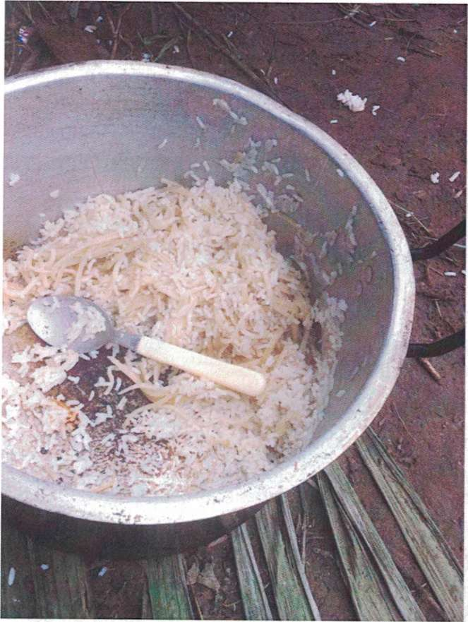

|
| FOURTH DRAFT |
ESPANOL |
| SURVIVORS: CITIZENS OF THE WORLD |
SOBREVIVIENTES: CUIDADANOS DEL MUNDO |
| BY Pascal Ustin Dubuisson, TRANSLATED BY Mitchell Verter |
POR Pascal Ustin Dubuisson |
TABLE OF CONTENTS
- Introduction
- Chapter I. Survivors - citizens of the world
- Chapter II. Peru- Ecuador - Money is always right
- Chapter III. Colombia - A risky start
- Chapter IV. Darien Gap - Save yourself, whoever can
- Chapter V. Panama - Injustice, Abuse, Racism
- Chapter VI. Costa Rica - Free land
- Chapter VII. Nicaragua - Forbidden land
- Chapter VIII. Honduras - Imminent Victory
- Chapter IX. Guatemala - Without stopping
- Chapter X. Mexico - Rebirth of a new hope
- My perception of the borders
- Reality
|
INDICE
- Introducción
- Capítulo I. Sobrevivientes - ciudadanos del mundo
- Capítulo II. Perú- Ecuador - El dinero tiene razón
- Capítulo III. Colombia - El comienzo de cualquier tipo de riesgo
- Capítulo IV. Darien Gap - Sálvese quien pueda
- Capítulo V. Panamá - Injusticia, Abuso, Racismo
- Capítulo VI. Costa Rica - Tierra libre
- Capítulo VII. Nicaragua - Tierra prohibida
- Capítulo VIII. Honduras - Victoria inminente
- Capítulo IX. Guatemala - sin parar
- Capítulo X. México - Renacimiento de una nueva esperanza
- Mi percepción sobre las fronteras
- Realidad
|
|
| To my son André Pascal Dubuisson Rodelo |
A mi hijo Andre Pascal Dubuisson Rodelo |
| INTRODUCTION |
Introducción |
| I, Pascal Ustin Dubuisson, son of Haiti -- a country where success is a
challenge, and the right to eat, to educate oneself, and to progress a privilege -- made the
decision to leave my country not only for a better future, but also for a safe future. I know that
living in a country foreign from mine is not the best option, but it is the right choice.
|
Yo, Pascal Ustin Dubuisson, hijo de Haití -país en el que triunfar es un
desafío; y el derecho a comer, a educarse y progresar, un privilegio- tomé la decisión de dejar mi
patria no solo por un futuro mejor, sino también por un futuro seguro. Sé que vivir en un país ajeno
al mío no es la mejor opción, pero es la elección correcta.
|
| "As far as you want to reach, as high as you want to climb, everything
begins with a single step." In order to reach the aforementioned goal, I undertook a grand voyage to
make my life worthwhile. The desire to have something better gave me a strength and a determination
that permitted me to confront an immense challenge, one that thousands of persons did not survive.
This experience has taught me that, in life, if you must dive into the darkness to obtain the light,
you must not waver: the best decisions are often the most difficult to make, because they always
have serious consequences.
|
"Tan lejos como puedas llegar, tan alto como puedas subir, ¡todo comienza
con un paso!". Es exactamente para lograr este propósito, resumido en la frase anterior, que hice un
largo viaje que pudo haberme costado la vida. El deseo de tener algo mejor me dio una fortaleza y
una determinación que me permitieron hacer frente a un desafío tan grande, al que miles de personas
no sobrevivieron. Esta experiencia me ha enseñado que, en la vida, si tienes que zambullirse en la
oscuridad para obtener la luz, no debes dudar; porque las mejores decisiones son a menudo las más
difíciles de tomar, pues siempre tienen consecuencias graves.
|
| In this book, I share a sad and sorrowful story, through which I hope to
find a reader to engage with my experience so they better understand the world around them and what
it entails: its customs, abuses, racism. In addition, I aspire for the reader to be able to
differentiate between the surroundings they inhabit and the dark domain impenetrable to the naked
eye. I hope, in turn, that they understand, as I learned during this voyage, that great
opportunities are for those who are attached to their dreams -- for those who dare, resist, and
never give up.
|
En este libro comparto una triste y dolorosa historia, a través de la cual
buscó que el lector se involucre con mi experiencia para que comprenda mejor el mundo exterior y lo
que ello implica: sus modales, abusos, racismo. Además, pretendo que quien lea este libro pueda
diferenciar entre el entorno en que vive y el ambiente oscuro que no puede ver a simple vista.
Espero, a su vez, que comprenda, como yo aprendí durante este viaje, que las grandes oportunidades
son para aquellos que están apegados a sus sueños, que se atreven, resisten y nunca se rinden.
|
| Chapter I: |
Capítulo I. Sobrevivientes |
| Survivors: Citizens of the World |
Ciudadanos del mundo |
| From the moment we depart, all of us who have decided to leave our
birthplaces live through dark, difficult, complicated, uncertain times. Yet, even though making this
miserable journey felt like torture, at least we can say that we survived it.
|
Desde nuestro punto de partida, todos los que decidimos salir de nuestros
lugares de origen hemos vivimos momentos oscuros, difíciles, complicados, inciertos y aunque fue una
tortura hacer este recorrido viviendo en la miseria, podemos decir que somos sobrevivientes.
|
| The Republic of Haiti, a Caribbean country located on the Western side of
the island of Hispaniola adjoining the Dominican Republic, has a surface area of over 10,000 square
miles and had a population of over 10 million in 2015. Its political and cultural capital is
Port-au-Prince. It was gravely damaged by the January 12, 2010 earthquake. Due to climactic
conditions, eighty percent of the population lives in poverty. According to The World Factbook
(https://www.cia.gov/library/publications/the-world-factbook/geos/ha.html), two-thirds of all
Haitians depend on fishing and subsistence farming, which are particularly vulnerable to frequent
natural disasters. It was the first black country to declare its independence, driving out the
French empire in 1804. Sadly, life expectancy rarely exceeds fifty-two years. Only one in one
hundred fifty Haitians receive a salary. Fifty percent of Haitians depend upon remittances received
from relatives living abroad. It is a country rich in gastronomy yet ironically its children live in
extreme poverty caused by financial insecurity and natural disasters. Its politics are moderate. As
far as education goes, Haiti contends with a very intelligent and proud people with few
opportunities. This provokes Haitians to migrate to diverse parts of the world with the aspiration
that their children will receive better schooling, thus constituting the so-called "diaspora" of
Haitians living abroad.
|
República de Haití, país del Caribe, ubicado en la parte occidental de la
isla La Española, colinda con República Dominicana, tiene una superficie de 27 750 km2 y una
población de 10,85 millones (2015). Su capital y ciudad principal es Puerto Príncipe. Fue gravemente
dañado por el terremoto del 12 de enero del 2010. Debido a su situación climática se dice que el 80%
vive en la pobreza —de acuerdo a The World Factbook- y solamente dos tercios de la población
dependen de la agricultura y la pesca. Fue una antigua colonia francesa y fue el primer país negro
en declarar su independencia en el año 1804. Tristemente la esperanza de vida no rebasa los 52 años
y sólo 1 de 150 haitianos recibe un salario. El 50% de los haitianos depende de las remesas
familiares recibidas del exterior. Es un país rico en gastronomía e irónicamente sus hijos viven en
la pobreza extrema causada por la inseguridad y los desastres naturales, la política es moderada. En
cuanto a la educación, se trata de un pueblo muy inteligente y orgulloso con pocas oportunidades, lo
cual provoca la migración de los haitianos a diversas partes del mundo con la intención de ayudar a
los miembros de sus familias a tener una mejor preparación académica, conformando así la "diáspora",
nombre de los haitianos que viven en el exterior.
|
| Since the 7.3 magnitude earthquake began at 4:53 p.m. on January 12, 2010,
the country has confronted a chaotic situation, with around 300,000 dead: brothers, sisters,
fathers, mothers, children, and friends lost their lives in this tragedy, considered a dark day in
Haiti.
|
Después del terremoto del 12 de enero del 2010 -que comenzó a partir de
las 4:53 p. m. y con una escala de 7,3-, el país enfrentó una situación caótica, con cerca de 300
000 muertos: hermanos, hermanas, padres, madres, hijos y amigos perdieron la vida en esta tragedia
que fue considerada como la fecha negra en Haití.
|
| Some countries came to help, although this led to nasty rumors about who
received the aid money. The only thing the Haitian people had to depend upon was God.
|
Algunos países llegaron para ayudar, aunque todo esto se prestó a rumores
negativos sobre quiénes se quedaban con la ayuda. Al pueblo haitiano sólo le quedaba depender de
Dios.
|
| Brazil was the first destination for Haitians seeking asylum and they
traveled there in great numbers. Thousands crossed the Dominican Republic, Ecuador and Peru so they
could reach Brazil with the aspiration of changing their living conditions. From 2010 to 2014,
Brazil was ranked among the world's largest economies with its currency, the *real*, worth forty
cents to the dollar. Haitians valued this unstable currency even more because they had been so
impacted by unemployment. With a salary of a thousand *reales*, Haitians had to pay rent for their
families, among other expenses. At the beginning of 2015, everything began to change: the economy
contracted after the 2015 World Cup and thus Haitians unfortunately began to lose their jobs. Still,
people hoped the situation would improve and that things could change. However, the currency
followed its course of devaluation until the next year. The Haitians saw that the situation was
getting worse every moment, so they made the decision to leave the country in search of something
better. Their eyes turned towards the United States. Not all Haitians had family members there;
nevertheless they decided to leave along with those who had relatives to receive them.
|
Brasil se consideró como el primer país donde los haitianos pidieron
refugio y llegaron de forma masiva. Miles de haitianos atravesaron República Dominicana, Ecuador y
Perú, para poder llegar a Brasil con el propósito de cambiar sus condiciones de vida. De 2010 a
2014, Brasil se situó entre las grandes economías mundiales con su moneda (real), es decir, un dólar
valía 2,5 reales. Un precio inestable que valía aún más para los haitianos porque el desempleo fue
impactante. Con un salario de mil reales, los haitianos tenían con qué pagarles a sus familiares la
renta, entre otras cosas. Al inicio del año 2015 todo comenzó a cambiar, la economía disminuyó
después de la Copa Mundial del 2015 y entonces los haitianos -desafortunadamente— comenzaron a
perder sus empleos. Todavía se tenía la esperanza de que mejorara la situación y pudiera haber un
cambio, sin embargo, el dólar siguió su curso y se continuó resistiendo la situación económica hasta
el año siguiente. Los haitianos vieron que la situación empeoraba a cada momento, por lo que tomaron
la decisión de salir del país en busca de mejoras, entonces su mirada se dirigió a Estados Unidos.
No todos los haitianos tenían familiares en ese lugar, sin embargo, tomaron la decisión de partir al
igual que los que sí tenían parientes que los recibieran en ese país.
|
| It was possible to live in Brazil, but the duty to help one's family was
stronger, so waiting around in Brazil was an option; instead, one had to look for a better living
standard. What we were doing wasn't going to change all the misery in Haiti, nevertheless the
support of ten dollars would make a big difference for our parents. The majority of Haitians who
live in Haiti depend on others who relocated to the United States, Brazil, France, Ecuador,
Venezuela, etc -- people who had overcome their economic problems, or at least, who were financially
stable and no longer had to struggle. Before leaving Brazil, many realized they had to change their
nationality from Haitian to that of an African country to be able to transit through certain
countries. People who had previously made the voyage gave advice to those who followed and conveyed
tricks for avoiding deportation. Our families, even though they weren't physically present, traveled
with us, because thanks to the support and the small financial contributions of each, we were able
to take those dangerous paths out of Brazil, to cross Chile, Venezuela, Peru, Ecuador, Colombia,
Darien Gap (the roadless jungle between Colombia and Panama), Costa Rica, Nicaragua, Guatemala,
Mexico,and the United States of America.
|
Se podía vivir en Brasil, pero el deber de ayudar a la familia era más
fuerte y la opción no era quedarse ahí a esperar, sino buscar una mejor calidad de vida. Lo que
hiciéramos no iba a cambiar el incremento de la miseria en Haití, a pesar de esto, el apoyar con
diez dólares hacia una gran diferencia para los parientes. La mayoría de los haitianos que viven en
Haití dependen de otras personas que se encuentran en Estados Unidos, Canadá, Chile, Brasil,
Francia, Ecuador, Venezuela, etc. , que ya habían superado sus problemas económicos o al menos,
estaban estables, sin batallar. Antes de salir de Brasil muchos se vieron en la necesidad de cambiar
su nacionalidad diciendo que eran africanos para poder atravesar ciertos países, los primeros que
pasaron por el camino se encargaron de dar consejos a los demás y algunos trucos para evitar la
deportación. Las familias, aunque no estuvieran presentes físicamente viajaban con uno, pues gracias
a su apoyo y con la pequeña economía de cada quien, se tuvo la posibilidad de tomar esos caminos
peligrosos desde la salida de Brasil, atravesando Chile, Venezuela, Perú, Ecuador, Colombia, Dañen
Gap —que es la selva entre Colombia y Panamá sin vía terrestre- Costa Rica, Nicaragua, Honduras,
Guatemala, México y Estados Unidos de América.
|
| This story has been lived by thousands of citizens of the world searching
for a better life in the United States
|
Esta historia fue vivida por miles de ciudadanos del mundo en búsqueda de
una vida mejor en los Estados Unidos.
|
 |
| Chapter II: Peru - Ecuador |
Capítulo II. Perú- Ecuador |
| Money is always right |
El dinero tiene razón |
| Most of us Haitians lived in South America, the majority in Brazil. There
was no way to calculate how much the voyage would cost. We could not specify an exact amount because
everything depended upon the traffickers, better known as "coyotes." Peru was situated as the first
meeting place for the majority of migrants, who were not only Haitians: there were persons from
Senegal, Congo, Ghana, and Pakistan, among others. We were speaking different languages and came
from different cultures, but we all had the same goal: to reach the United States. This period of
coexistence gave us the opportunity to make new friends, allowing us to create a sense of harmony,
one that might even be called familiar.
|
Todos vivíamos en gran parte de América del Sur, la mayoría venía de
Brasil y no había cómo calcular en cuánto saldría el viaje, no se podía hablar de una cantidad
exacta debido a que todo dependía del traficante, mejor conocido como "coyote". Perú se situaba como
el primer punto de encuentro entre la mayoría de los migrantes, no eran solamente haitianos; había
personas de Senegal, el Congo, Gana, Pakistán, entre otros. Estamos hablando de diferentes idiomas,
diferentes culturas, pero con un mismo objetivo: llegar a los Estados Unidos. Durante este tiempo de
convivencia se daba la oportunidad de hacer nuevos amigos, lo que nos permitía mantener una armonía
—se podría decir que algo familiar—.
|
| A friend and I left together from the southern city of Canoas, the best
way to avoid crossing many countries when exiting Brazil.
|
Un amigo y yo salimos juntos de un lugar que se llama Canoas, ubicado en
el sur de Brasil, esa era una ruta de salida para cruzar menos países.
|
| We traversed Peru in three or four days by bus, passing from city to city
in order to cross the border of Ecuador. We were very tired, but our hearts nourished a great hope.
In Peru we felt very uneasy because we were illegal so traveled under a lot of stress. We had to be
careful not only around the police but also around thieves who tried to take advantage of us and
steal our belongings, so we used different techniques to safeguard the money we brought from Brazil.
Some used their shoes, others their deodorants, others soaps, and other had their own tricks.
|
Perú lo atravesamos en tres o cuatro días en camión, pasábamos de ciudad
en ciudad para atravesar la frontera de Ecuador. Estábamos muy cansados, pero con una gran esperanza
que alimentaba nuestros corazones. En Perú teníamos mucha incertidumbre por ser ilegales, viajábamos
con mucha presión, ya que no era solamente cuidarse de la policía, sino de los ladrones que trataban
de aprovecharse de nosotros para robar nuestras pertenencias, aunque usábamos diferentes técnicas
para guardar el dinero que cargábamos desde Brasil: algunos utilizaron sus zapatos, otros sus
desodorantes, otros los jabones y otros trucos personales.
|
| When we arrived in Lima, the capital of Peru, we started to get split up
which slowed down my group because we didn't want to continue without the others. But not all of us
agreed -- most were impatient to advance to the Ecuadorian border. On this border we started to
encounter human trafficking, because you could not cross Ecuador without a visa. Therefore, we had
to pay someone to cross this stretch and began contacting some coyotes who could help us. These
people met us in the hotel where we were staying. One of them assured us that it was going to go
well. These confidence men were incredibly manipulative. We didn't have any confidence in them, but
neither did we have any other option. We had to try it.
|
Al llegar a Lima, la capital de Perú, comenzamos a dividirnos y esto causó
un retraso en mi grupo porque no queríamos irnos sin los demás, pero no todos pensábamos igual, la
mayoría teníamos mucha impaciencia por avanzar a la frontera de Ecuador. En esta frontera empezó el
tráfico porque no nos permitían cruzar Ecuador sin una visa, por lo tanto, debíamos pagarle a
alguien para cruzar este tramo y empezamos a contactar a algunos "coyotes" que pudieran ayudarnos.
Esas personas nos encontraron en el hotel en donde estábamos y uno de ellos nos aseguró que nos iba
a ir bien, estas personas son increíblemente hábiles para manipularte y hacerte entrar en confianza,
pero no teníamos confianza y tampoco teníamos otra opción, debíamos intentarlo.
|
| We knew a great number of Haitians who had tried many times, but were
returned to Peru because they failed. The Ecuadorian police were so strict on that border, so it was
hard to cross. This was our first attempt. We didn't know how many times we would have to try,
because the police were so brutal. It was helpful that many of the coyotes had friends among the
customs police. They told us that everything was going to turn out fine: we would be leaving Peru in
the evening. But then the coyote decided that we should cross in the afternoon, because in the
evening the authorities watched the border more closely.
|
Conocíamos a gran cantidad de haitianos que lo habían intentado muchas
veces, pero como no lo lograron se regresaron a Perú. Debido a que en esa frontera la policía
ecuatoriana es muy estricta, poder cruzar no resultaba tan fácil. Este era nuestro primer intento,
no sabíamos cuántas veces lo debíamos intentar, ya que la policía estaba muy brava; nos ayudó mucho
que los "coyotes" tuvieran amigos policías en la aduana. Ellos dijeron que todo iba a salir bien,
debíamos salir de Perú en la noche, pero él decidió que cruzáramos en la tarde, porque en la noche
la vigilancia era mayor con las autoridades.
|
| Eight of us carried out the voyage, one of them had two cars and a friend
of his had a motorcycle about a mile and a half in front. He was responsible for communicating with
his police friends, who did not yet know all of us.
|
El viaje lo realizamos ocho personas, uno de ellos tenía dos carros y un
amigo de él, una moto al frente, como a dos kilómetros, y éste se encargaba de comunicarse con sus
amigos policías, ya que no conocían a todos.
|
| After we entered, he brought us to his wife's house to show us some things
left behind by other Haitians who had previously passed through there. In an hour or so, they told
us that it was time to leave for the capital. The van was ready to leave. Most of those who were
expected were already inside, only about ten persons were missing. Throughout the trip we worried
because we knew what it was like in Ecuador. We did not know how to handle our fear of being caught.
We felt very anxious. Nevertheless, we had to have faith.
|
Después de que entramos él nos llevó a la casa de su esposa a mostrarnos
algunas cosas que los haitianos olvidaron en su casa -otros que pasaron por ahí-. En una hora, más o
menos, nos avisaron que ya era tiempo de irnos para la capital. El camión ya estaba listo para
salir, la mayoría de los que se esperaban ya estaban dentro, solamente faltaban alrededor de diez
personas. Durante el viaje nos preocupamos porque teníamos conocimiento de cómo estaba la situación
en Ecuador. No sabíamos qué hacer con el miedo a ser atrapados, teníamos mucha ansiedad. Sin
embargo, teníamos que confiar.
|
| Every day one confronted one's own fears, one's own dreads, one's own
insecurities. One thing that fear can do is paralyze you. Conquering fear was not easy for us. In
the movie “Rocky”, the main character said that fear is a fire inside of you: if you control it you
stay hot to continue fighting, but if you do not control it, it will spread and devour you. That
much is certain. This is why we were forced to control each emotion. It seemed that each time a new
one rose up in us, we had to fight it.
|
Cada día traía consigo sus propios temores, sus propios miedos, sus
propias inseguridades. Una de las cosas que hace el miedo es que te paraliza. Conquistar el miedo no
nos resultaba fácil. En la película de Rocky Balboa, este personaje decía que el miedo es un fuego
en nuestro interior: si lo controlamos nos mantendrá calientes para seguir peleando, pero si no lo
controlamos se extenderá y nos devorará. Algo muy cierto. Por lo mismo, estábamos obligados a
controlar cada emoción y pareciera que cada vez salía de nosotros una nueva, con la que teníamos que
luchar.
|
| Many of us consider ourselves brave men. Here, in this forced adventure,
we discovered unfamiliar feelings we had to confront so that we could continue.
|
Muchos de nosotros nos considerábamos hombres valientes. Aquí, en esta
aventura forzosa, descubrimos sentimientos que no habíamos experimentado y con los que tuvimos que
enfrentarnos para poder seguir.
|
| Everything was calm the night of the voyage. There were no setbacks on
the road. The night was very long for us. No one could sleep. When we arrived in Quito, the capital,
we saw a hundred migrants who had departed from many different parts of the world. The group I came
with and I didn't want to wait around, knowing that we did had no authorization. We stopped a taxi
to ask the driver to bring us to the border with Columbia. He told us that this was illegal;
nevertheless, he recommended a friend who could take us
|
En la noche del viaje todo estaba calmado, no hubo contratiempos en el
camino, la noche se nos hizo muy larga, nadie podía dormir. Cuando llegamos a Quito, la capital,
vimos como a cien migrantes que habían salido de muchas partes del mundo. El grupo con el que iba y
yo no nos queríamos quedar, sabíamos que no teníamos ninguna autorización. Paramos un taxi para
preguntarle al chofer si él podía llevarnos a la frontera de Colombia y él dijo que eso era ilegal,
sin embargo, nos recomendó a un amigo que podía llevarnos.
|
| There were many coyotes in each city we crossed. They benefited the most
from earnings received from people like us. They were pleased to help us with economic problems, not
because their hearts were overflowing with altruism. They convinced us with stories to wheedle more
money out of us. For example, they told us that the police would take our money, and they frightened
us by threatening us with harm. This was just a way of forcing us to pay more.
|
Los "coyotes" eran muchos, en cada ciudad que cruzamos ellos eran los más
beneficiados por las ganancias que recibían con personas como nosotros. Ellos se sintieron
complacidos de ayudarnos por la cuestión económica, no porque tuvieran un gran corazón altruista,
nos hacían creer cosas que no existían con la intención de que les pagáramos más dinero. Por
ejemplo, nos decían que la policía tomaría todo nuestro dinero y nos asustaban diciéndonos que ellos
nos harían daño. Era una forma de obligarnos a pagar más.
|
| When we took the taxi to the Tulcán border to commence the next adventure
in earnest, the driver knew where and how to get there quickly to avoid the police. It was
inevitable that we would encounter one and so it was: on the road we ran into the police. They
stopped us. The driver had told us to speak French with them, because if not, they would return us
to Peru, and we were already close to Columbia. And when the police arrived, they asked the driver
why license plates had different digits than those close to the border. The driver told them that he
had only come up there to bring French people to Columbia.
|
Cuando tomamos el taxi para irnos a la frontera de Tulcán para entrar
seriamente a la aventura, el chofer sabía por dónde y cómo llegar rápido para evitar a los policías.
Aunque era lógico encontrarse alguno y asífue; en el camino nos encontramos con policías. Nos
pararon, el chofer nos había dicho que habláramos francés con ellos, porque si no nos iban a
regresar a Perú y ya estábamos cerca de Colombia. Y cuando llegaron los policías le preguntaron al
chofer que por qué su placa era otra numeración si estaba cerca de la frontera y el chofer le dijo
que solamente se acercó a llevar a franceses a Colombia.
|
| The police asked for our papers. We acted as if we didn't know how to
speak Spanish, so we spoke French and offered the officers some money so that we could leave.
Fortunately, nobody was watching. They accepted it and allowed us to continue.
|
Los policías nos pidieron los papeles, hicimos como si no supiéramos
hablar español y hablamos francés y ofrecimos dinero a los policías para irnos, por fortuna no había
nadie observando y ellos aceptaron y nos dejaron continuar.
|
 |
| Barely in Peru, so many people were already so depleted. They could find
nowhere better to rest than a bus terminal.
|
Apenas en Perú muchas personas ya estaban muy deterioradas, no podían
hacer nada mejor que descansar en una terminal terrestre.
|
| This phase was very complicated because we knew that if we returned to
Ecuador, it would only waste our time and money, and we were only six hours away from Columbia. We
stopped many times on the road but fortunately no police were in sight. When we were close to the
border, the driver told us he could not take us further due to increased police presence.
|
Esta faceta fue muy complicada porque sabíamos que si regresamos a Ecuador
habría sido una pérdida de tiempo y dinero y faltaban tan sólo seis horas para llegar a Colombia.
Durante el camino paramos muchas veces, pero afortunadamente no había policías a la vista. Cuando
estábamos cerca de la frontera, el chofer nos dijo que no podía continuar con nosotros por
cuestiones de seguridad policíaca.
|
| He let us out of the taxi and told us that we had to look for a way to
continue. Many people waiting there. When we reached the border, it was all very strange. We were so
stressed out and all our bad feelings resurfaced .
|
Él nos bajó del taxi y nos dijo que buscáramos cómo continuar, ahí había
mucha gente esperando y cuando llegamos a la frontera era todo muy extraño, subía el estrés y más
sentimientos encontrados.
|
|
| Chapter III: Columbia |
Capítulo III. Colombia |
| A risky start |
El comienzo de cualquier tipo de riesgo |
| In life you have two options: 1) go to bed and dream or 2) get up from
your bed to realize your dreams. And that is what I did. Your humble server took root in Brazil,
where he worked in a restaurant as a waiter from midnight until to 7 a.m., a job that paid 1300
reales a month. I come from Haiti. I was born in Port-au-Prince within a dysfunctional family,
formed only by my mother, my sister and my brother. By twist of fate, we separated and I was raised
my grandmother who died when I was twenty years old. When I was twenty-three, after staying around
for only three years, I decided to leave for Brazil to find my luck.
|
En la vida tienes dos opciones: 1) acostarte en tu cama a soñar o 2)
levantarte de tu cama para realizar tus sueños. Y eso fue lo que hice. Su servidor radica en Brasil,
donde trabajaba en un restaurante como mesero de las 12 p.m. hasta las 7 a.m., empleo cuya paga era
de $1300 reales al mes. Provengo de Haití, nací en Puerto Príncipe dentro de una familia
disfuncional, formada únicamente por mi madre, una hermana y un hermano. Por cosas del destino nos
separamos y a mí me tocó crecer al lado de mi abuela, quien falleció cuando yo tenía veinte años y a
los veintitrés, después de quedarme solo tres años, decidí partir a Brasil a buscar mi suerte.
|
| According to Wikipedia, the border between Brazil and Columbia is a
continuous 1,021.7 mile international boundary that completely delimits it. The borderline crosses
502.6 miles of river and canals, 380.3 miles of conventional borders, and 138.7 miles of waterways.
|
La frontera entre Brasil y Colombia es un límite internacional continuo de
1644,2 kilómetros, el cual es completamente delimitado. La línea limítrofe transcurre por 808,9
kilómetros de ríos y canales; 612,1 kilómetros por líneas convencionales; y 223,2 kilómetros por
divisorias de aguas. 1
|
| Several months before entering Columbia we had to pay a lot of money to
cross the border. We spent between 300 and 500 dollars each. The government of Columbia was one of
the governments that, seeing that so many foreigners were arriving from different nations, took the
opportunity to offer us an entry document that permitted us to stay in the country for twenty-two
days or even up to a month. However, during this period, men weren't allowed to cross. Only pregnant
women and children had this right, and could cross the border without a problem. All the rest were
condemned to cross over a hill. This hill was a den of thieves, so much so that each family that
lived there had a firearm as personal protection for themselves, against whatever emergency. This
was their way of taking care of themselves. because the police had withdrawn so far from this
village.
|
Algunos meses antes de entrar a Colombia tuvimos que pagar mucho dinero
para pasar la frontera, gastamos entre 300 y 500 dólares cada uno. El gobierno de Colombia fue uno
de los gobiernos que, al ver la llegada de tantos extranjeros de diferentes nacionalidades, tomó a
bien ofrecernos un documento de entrada con un permiso de veintidós días o hasta de un mes para
permanecer en ese país. Sin embargo, en ese momento no podíamos cruzar los hombres, solamente las
mujeres embarazadas y los niños tenían ese derecho, sin problema podían cruzar la frontera. Todos
los demás fuimos condenados a cruzar por una colina. Dicha colina era como una cueva de ladrones,
tanto así que cada familia de las que vivían por ahí tenía un arma de fuego como protección a su
persona y a su familia, para cualquier emergencia. Ésta era su forma de cuidarse porque la policía
estaba bastante retirada de ese poblado.
|
| Crossing the hill took us about four hours. It was so long. Some
Colombians had good hearts. Even thought the inhabitants had to defend themselves from invaders,
they tried to help us cross with their carts without even knowing us, but their efforts were in vain
because the hill was too steep and the carts could not climb it. In order to help out the migrants,
they thought up a way to put people underneath the trucks, or to put bags of trash or rice on top of
them, but it was no use. They were found out.
|
Cruzar la colina nos llevaba aproximadamente cuatro horas, era demasiado
larga. Algunos colombianos de buen corazón -a pesar de los cuidados que tenían para defenderse de
los invasores-, sin conocernos intentaron ayudarnos a cruzar con sus carros, pero fue en vano porque
la colina era demasiado pesada y los carros no subían. Ellos, con tal de ayudar a los migrantes, se
las ingeniaron para poner a las personas debajo de los camiones, o poner sacos de basura o de arroz
encima de los individuos, pero era inútil, pues eran descubiertos.
|
| Seeing what was happening, we convened to make a decision about what would
be most helpful for continuing our voyage.
|
'Consultado el 1 de septiembre de 2017 en: http://www. wikiwand. com/
es/Frontera_entre_Brasil_y_Colombia
|
| There was not much to think about, we only had one road to follow, the
dangerous one -- where, to start, you had to pay ten dollars to the Colombian who was in charge. And
so it was. Unfortunately, we believed that this would be the only payment we would have to give. But
no: on this road we had to pay for everything. Most unfairly, we had to pay for necessary things
such as sitting down, drinking water, going to the bathroom, resting. Those abusive Colombians had
declared to us that they knew that the migrants were rich; that without money, we could not cross
ten countries to reach the Tijuana border. In a few words, if we didn't have a lot of money to begin
with, we couldn't have left the place where we came from. Nothing is more wrong that this thought.
|
Al ver lo que estaba pasando, nos reunimos todos para tomar una decisión
que nos beneficiara para poder llegar. No había mucho qué pensar, sólo teníamos un camino que
seguir, el peligroso -donde, para empezar, se tenían que pagar diez dólares al colombiano que
estuviera a cargo-, y así fue. Desafortunadamente, creímos que sería el único pago que daríamos,
pero no, en este camino por todo pagamos, pagos muy injustos por cosas necesarias como por ejemplo
sentarnos, tomar agua, ir al baño, descansar. Estos abusivos colombianos nos habían comentado que
sabían que los migrantes eran ricos, ya que sin dinero no se pueden atravesar diez países para
llegar a la frontera de Tijuana. En pocas palabras: si no tuviéramos mucho dinero, para empezar, no
hubiéramos salido del lugar donde radicamos; nada más equivocado que este pensamiento.
|
| As happens to all human beings in unknown situations, insecurity surged
within us. Nevertheless we did not show it. Haitians are very tough and foolish people. We have a
gene that makes us strong, and not weak. In the face of adversity, our very skin can resist the
environment-- we can endure the pain.
|
Como le sucede a todo ser humano en una situación desconocida, nos surge
la desconfianza, sin embargo, no lo manifestamos. Los haitianos somos personas muy duras y necias.
Tenemos un gen que nos define como fuertes -y no débiles-, ante las adversidades, hasta nuestra piel
es resistente al ambiente, podemos soportar el dolor.
|
| Luckily, this hill wasn't such a great obstacle. We knew beforehand what
awaited us. My race is very communicative and all our acquaintances who had already made the journey
had told us how and where and what we would have to pass through. From the information they imparted
to us, we knew exactly which roads to take and we absolutely knew that nothing would be more
dangerous and difficult than passing the Darien Gap jungle in Panama. There we would encounter truly
different challenges
|
De tal suerte que esa colina en realidad no era un obstáculo grande.
Sabíamos de antemano qué nos esperaba, pues mi raza es muy comunicativa y todos nuestros conocidos
que ya habían hecho todo el trayecto nos iban diciendo cómo y por dónde y qué cosas íbamos a tener
que pasar. Justamente por eso conocíamos los caminos, por las referencias que nos daban nuestros
conocidos y sabíamos perfectamente que nada era más peligroso y difícil que pasar por el bosque de
Darien Gap en Panamá. Ahí verdaderamente nos encontraríamos con diferentes desafíos.
|
| It was a place where the we would have to pass through, without question,
where we would confront our strengths and weaknesses, our confidence and insecurities. It was the
place where undoubtedly we would come to regret that we had left our apparent comfort.
|
Es un lugar que indiscutiblemente se tiene que pasar y en donde sabíamos
que la mayoría se enfrentaría con sus fortalezas y sus debilidades, con sus seguridades e
inseguridades. Era el lugar donde indudablemente nos llegaba el arrepentimiento de habernos salido
de nuestra aparente comodidad.
|
| Already signed up for the journey, I delayed the group because I was
unable to walk because the climb was too steep, complicated, and tangled. I didn't expect that this
road would be was so exhausting and tortuous. Even though I was young, I felt like my lungs were
going to explode. I was never an athlete, so I was not in good shape and, at that moment, my
physique could no longer take it. I thought I couldn't continue any longer.
|
Ya enrolados en el camino, yo retrasé al grupo debido a que no podía
caminar porque era una subida muy ancha, complicada y enmarañada. No me esperaba un camino así de
fatigoso y complicado. Sentía como si mis pulmones me fueran a explotar a pesar de ser joven. Jamás
fui deportista, por lo que mi condición no era buena y en ese momento mi físico ya no resistía,
pensé que no iba a poder continuar.
|
| In the distance we could see several persons, so far away that we could
not call them. They would not have been able to hear us and, moreover, we could not shout because we
were out of breath. The only thing we would do is wear out our last strength that we would be unable
to restore because we had no water. We had forgotten how long the road was going to be. We felt
cheated and angry because the guides -- we don't know why, maybe because they didn't want to
frighten us or maybe just out of malevolence -- lied to us, telling us that we would walk for about
twenty minutes. Suddenly, they stopped us. The coyotes did not want to advance because there were
police ahead. They abandoned us in the middle of nowhere, hungry and thirsty, shamelessly, without
an iota of kindness, telling us that we would have to continue alone.
|
A lo lejos podíamos ver a varias personas, tan, tan lejos que no podíamos
llamarlos. Aunque gritamos no nos iban a poder oír y, además, no podíamos gritar sin aliento. Lo
único que iba a pasar era que desgasta ríamos nuestras últimas fuerzas y ni cómo recuperarlas porque
no teníamos agua. Ignorábamos que el camino iba a ser tan largo. Nos sentimos engañados y enojados
porque los guías -tal vez para no asustarnos, no lo sabemos, o por simple maldad- nos mintieron, ya
que nos dijeron que caminaremos como por veinte minutos. Hubo un momento en que nos detuvimos, los
"coyotes" no quisieron avanzar porque adelante había policías. Nos dejaron abandonados en medio de
la nada, con hambre y sed y, muy descaradamente, sin un ápice de bondad, nos dijeron que
continuáramos solos.
|
| The path we followed was tortuous. At one point, when we believed that the
coyotes had prepared a trap for us and that at any moment, they would turn us over to thieves to
take from us the little that we had. Our emotions spun like a wheel of fortune with incredible
velocity. We thought thousands of things, among them all the ways we could die alone, in an unknown
place, where nobody would come to give us a decent burial, because our families would not be able to
find us.
|
El camino que seguía era muy complicado. Llegó el momento en que pensamos
que los "coyotes" nos habían tendido una trampa y que en cualquier momento nos mandaron ladrones
para quitarnos lo poco que teníamos. Las emociones se movían como una rueda de la fortuna y con una
velocidad increíble. Pensábamos miles de cosas, entre ellas todas las formas en que podíamos morir
solos, en un lugar desconocido, y que nadie nos iba a dar una buena sepultura, pues difícilmente
seríamos encontrados por nuestros familiares.
|
| We thought about all the possible accidents that could befall us for which
we had no way to respond. Living through a period like that, when uncertainty and confusion bore
down us, made us unhappy with everyone. However, despite everything our demons were telling us,
nothing like that happened. Thank God.
|
Pensábamos en todos los accidentes posibles que nos podían acontecer y que
no tendríamos manera de atender. Encontrarse en un momento de esa naturaleza, donde la incertidumbre
y el desconcierto apremian, no hace feliz a nadie. Pero, a pesar de todo lo que nos decían nuestros
propios demonios, no pasó nada de eso. Gracias a Dios.
|
| After a moment, we saw a truck. We felt a sense of happiness similar to
what a child feels when they celebrate their first birthday and feels amazed with everything they
see. It was with this capacity for amazement that restored life to our bodies. We approached the
driver and asked him if he could bring us bring us to the way out. He informed us that the exit was
very far away. He kindly told us that we should wait for him to return, and then he would bring us
to the main road. We thought for some seconds and reacted like a child does when they open their
gift to find that it is not what they wanted. We then decided to move from that location because the
road was neither pleasant nor trustworthy
|
Después de un momento vimos una camioneta, la impresión de felicidad que
tuvimos fue como cuando a un niño le festejas su primer cumpleaños y se asombra de todo lo que ve.
Bueno, pues con esa capacidad de asombro fue que se nos devolvió la vida al cuerpo. Nos acercamos al
chofer y le preguntamos si él podía llevarnos a la salida, nos informó que la salida estaba muy
lejos. Muy amablemente nos dijo que esperábamos su regreso y entonces nos llevaría hasta la avenida
principal. Lo pensamos por unos segundos y reaccionamos como cuando el niño abre su regalo y no es
lo que él quería. En ese momento, decidimos movernos de ahí porque el camino no era de lo más bonito
ni confiable.
|
| Fortunately, after forty minutes of walking, the van returned carrying a
load potatoes and the driver told us to get on. This is how we arrived at the main road. It is
unbelievable that we paid the coyotes to bring us across a road for six hours, but they did not walk
even a single hour. They received more than 120 dollars for each of us and spent only forty minutes
with us.
|
Afortunadamente, después de cuarenta minutos caminando, la camioneta
regresó con muchas papas y el chofer nos dijo que ya podíamos subir. De esta forma fue que llegamos
a la avenida principal. Imagínate que pagamos a los "coyotes" para cruzarnos por un camino de seis
horas, cuando ellos no caminaron ni una hora. Recibieron en total más de 120 dólares por cada uno y
pasaron 40 minutos con nosotros.
|
| When we arrived at the main road, the driver told us that he could not
take us far due to military presence ahead. He did not want to get in trouble. We understood. It
makes sense. Who wants to ride with illegal migrants in their car and go to prison or be punished
for an act of compassion? So we got off and took a taxi to the migration office. The offices were
very close to the border; nevertheless, we could not get there directly. For that we had to climb a
hill that took almost six hours to cross. By the time we arrived at the migration office, the line
very long. We would have to be very patient to get the documents required to cross through Columbia.
|
Cuando llegamos a la calle principal, el chofer nos dijo que no podía
llevarnos lejos debido a los militares, y que no quería meterse en problemas. Lo entendimos, lógico.
¿Quién quiere andar con migrantes ilegales en su carro e ir a prisión o ser reprendido por un acto
de compasión? Así que nos bajamos y tomamos un taxi para irnos a migración. Las oficinas estaban muy
cerca de la frontera, sin embargo, no podíamos llegar directo, por lo que tuvimos que subir la
colina caminando, casi seis horas para llegar. En el momento en el cual llegamos a la migración nos
dimos cuenta de que la fila estaba muy larga. Teníamos que armarnos de paciencia si queríamos tener
nuestro papel para cruzar el país.
|
 |
| Despair was something that affected us day after day, seeing that you are
on the road for months and still cannot reach where you want to go. Sometimes you do not even want
to talk to your family to tell them about your situation; you prefer to hide the information because
you feel so ashamed.
|
La desesperación era algo que nos afectó día tras día, al ver que estás
en un camino por meses y todavía no puedes llegar a donde tú quieres. A veces ni quieres hablar con
tu familia para contarles cómo está la situación, prefieres ocultarles la información por la
vergüenza que sientes.
|
| We rested and watched other people arrive on the same road, but they were
not as lucky as us. They told us that thieves had attacked them on the road, taking their money and
valuables. It was understandable that began crying, because they had gone through something so
terrible. We all knew that, at any moment, something similar could happen to us. To put it coldly,
we too could be brought to tears.
|
Descansamos y vimos a otra gente que estaba llegando por el mismo camino,
pero ellos no tuvieron la misma suerte que nosotros, porque nos relataron que les habían salido
ladrones en el camino, que les quitaron su dinero y cosas de valor. Era comprensible que llegaran
llorando, por la situación tan terrible que habían pasado. Todos sabíamos que en cualquier momento
podía pasarnos lo mismo, así que -si lo vemos fríamente- las lágrimas estaban de más.
|
| Migration gave us a visa document for thirty days, but there were so many
people that the government divided us up into different cities. The border officer provided us a
paper that permitted us to travel to Medellin to process our document for crossing the country.
After a long day, without eating anything, some of us thought we should spend the night at the
border because the buses were downtown. However, no one wanted to stay with us. Therefore, we took a
taxi to the bus terminal and paid for a van to Medellin.
|
En migración nos dieron un documento de permiso por treinta días, pero ese
día había tanta gente, que el gobierno nos repartió en diferentes ciudades. Después de un día largo,
sin comer nada, algunos pensamos quedarnos una noche en la frontera porque los camiones para viajar
estaban en el centro, pero nadie se quiso quedar con nosotros, por lo que tomamos un taxi para irnos
a la terminal terrestre y pagar un camión hasta Medellín, con la intención de tramitar un documento
para cruzar el país. Entonces, la migración de la frontera nos proporcionó un papel que nos
permitiría llegar hasta Medellín.
|
| As we were approaching Medellin, we ran into a group of soldiers on the
road. Two of them inspected our luggage outside and the other two asked us if we had papers. They
did not really care about the papers. They ordered everyone to stay on the van. Then they told us to
take off our shoes to verify that we were not carrying drugs. Two of the soldiers below took our
shoes, our money, whatever they wanted. However, we Haitians had already prepared for this, hiding
our money inside deodorants, inside soaps, in different places throughout our belongings and our
bodies.
|
En el camino, cuando casi llegábamos, nos topamos con un grupo de
militares, dos de ellos estaban revisando el equipaje por fuera y los otros dos nos preguntaron si
teníamos papeles. En realidad no les importaban los papeles. Ordenaron que nadie bajara del camión.
Lo que hicieron fue pedirnos que nos quitamos los zapatos para verificar que no trajimos droga y dos
de los militares que estaban abajo se llevaron zapatos, dinero, lo que se les vino en gana. Sin
embargo, los haitianos ya estábamos preparados con el dinero escondido dentro del desodorante,
dentro de los jabones, en diferentes lugares de nuestras pertenencias y de nuestro cuerpo.
|
| After taking everything they could, the soldiers asked us to calm down so
that the trip could continue. We saw no legal reason why they had detained us; we only saw the
injustice of their work. We had thought, innocently, that they were there to help, but no: theft was
part of their job, part of the illicit enrichment of the military. During this year of migration,
they were definitely doing very well. But neither our sense of helplessness nor our courage ended
there. When the van continued, a gentleman looked inside his shoes and saw that all his money was
gone. He wept a great deal, truly exaggerated and powerful sobs. This made the rest of angry. We all
felt very tense.
|
Después de llevarse lo que pudieron, nos pidieron calma para que el viaje
continuará. No vimos ninguna razón legal por la cual nos hubieran detenido, sólo vimos la parte
injusta de su trabajo. Habíamos pensado -inocentemente- que estaban para ayudar, pero no, el robo
era parte de su trabajo, parte del enriquecimiento ilícito de los militares. Durante este año de
migración, definitivamente les fue muy bien. Aquí no terminó nuestro coraje e impotencia. Cuando el
camión continuó, un señor miró dentro de sus zapatos y no vio su dinero y lloró mucho, algo
verdaderamente exagerado y muy fuerte; esto provocó el enojo en los demás. Todos estábamos bajo
tensión.
|
| This man kept his money in his shoes. We began to get suspicious because
so many Colombians in the bus told us that those policemen were nothing but thieves. We knew our
rights. We should have gone to a police station to file a complaint, but we had no legal status in
the country so we were too afraid to go because we thought they would deport us.
|
Este hombre aseguró que su dinero estaba en sus zapatos y empezamos a
tener dudas porque había muchos colombianos en el autobús que dijeron que esos policías eran puros
ladrones. Conocíamos nuestros derechos y debíamos de haber ido a una comisaría a poner una denuncia,
pero no teníamos ningún papel del país y nos dio miedo porque pensamos que si íbamos nos deportaron.
|
| It came as a surprise and a regret that we got so angry with this
gentleman for crying, because when we reached the city and got out of the van to open our backpacks,
we realized that, in some very skilled and perverse manner, they had robbed many of us of money,
clothes, shoes and other items. Immediately, those affected began to cry and quickly tried to block
the bus from leaving, but it was useless.
|
Vaya sorpresa y arrepentida que nos dimos de habernos enojado con ese
señor por llorón, porque cuando llegamos a la ciudad y bajamos de la furgoneta al abrir nuestras
mochilas nos dimos cuenta de que de alguna manera muy hábil y perversa nos habían robado el dinero,
la ropa y los zapatos a varios. En seguida los afectados se pusieron a llorar y rápidamente tratamos
de hacer una barrera para detener el camión, pero el resultado fue inútil.
|
| My friends and I had devised another way to hide our money, so this time
we were not affected as they were were. Nevertheless, I was sincerely grieved to see my fellow
travel suffer -- how could they continue without money? Whether through good luck or bad, we could
continue and so we did.
|
Mis amigos y yo teníamos otra manera de guardar el dinero, así que por
esta ocasión no fuimos afectados como ellos. No obstante, yo sinceramente estaba muy triste de ver a
mis compañeros de viaje sufriendo porque ¿cómo iban a continuar sin dinero? Por fortuna o desgracia
nuestra, nosotros sí podíamos continuar y lo hicimos.
|
| At the same time, we were also annoyed with them. Even though they knew
that we would be exposed to the abuse of the authorities, they not take proper precautions. We had
explained to them that they should put their valuables in their backpacks and not in their wallet,
where the police are not authorized to put their hands. After this adversity, we took a taxi to the
migration office. When we arrived, he had to wait to talk to them about the document they would
issue to us.
|
Estábamos molestos a la vez con ellos, porque sabiendo que estábamos
expuestos a eso, al abuso de las autoridades, ellos no tomaron sus precauciones. Comentábamos que
cómo era posible que pusieran sus cosas de valor en sus mochilas y no en sus carteras, donde la
policía no estaba autorizada a meter mano. Después de este mal momento, tomamos un taxi para irnos a
la migración. Cuando llegamos, debimos esperar un momento para que ellos hablaran con nosotros sobre
el documento que nos iban a expedir.
|
| With all that we had lived through in such a short period, we put our
faith in and blessed God, thanks to whom there still exist good people who do not care if they are
criticized or cursed for giving food to whomever needs it -- and we needed it because we were dying
of hunger and thirst. God was showing us his care through these people who did not know who we were
nor where we came from, who might not speak our language, but who let themselves be guided by God to
give what little they had to the migrants. With such luck we recharged our phone batteries,
replenishing them so that we could continue on.
|
Con todo lo vivido en poco tiempo, esperamos y bendito sea Dios, gracias a
quien aún existe gente buena a la que no le importa ser criticada o maldecida con tal de darle de
comer a aquél que lo necesita, y nosotros lo necesitábamos porque nos estábamos muriendo de hambre y
de sed. Dios estaba mostrándonos su cuidado a través de estas personas que no sabían quiénes éramos
ni de dónde veníamos, que a lo mejor ni nuestro idioma hablaban, pero se dejaron guiar por Dios para
dar de lo poco que tenían al migrante. De tal suerte que recargamos baterías para poder seguir con
lo que faltaba.
|
| Although we expected the immigration officers to receive us, they would
not see us. The authorities told us that we had to return very early the next day and also offered
to let us stay in the country, telling us they would give us many opportunities. However, nobody
wanted to stay in Columbia. It was too early to make a decision like this. The goal of reaching in
Columbia was to have the official stamp that would allow us to cross the country and enter Panama.
There was no time to rest. In this way, and with a bit of encouragement, we went directly to the bus
terminal to buy a ticket which brought us to the next city, Medellin.
|
Aunque esperábamos la atención por parte de las oficinas de migración, no
nos recibieron. Las autoridades nos dijeron que teníamos que regresar muy temprano al siguiente día
y también nos ofrecieron quedarnos en el país, que nos iban a dar muchas oportunidades; sin embargo,
nadie quería quedarse en Colombia. Era muy pronto para tomar una decisión así. El objetivo de llegar
a Colombia era tener el sello que nos permitiera cruzar el país para entrar a Panamá. No había
tiempo para descansar. De esta forma, y con un poco de ánimo, nos fuimos directamente a una terminal
terrestre para comprar un boleto de camión, que nos llevaría a la próxima ciudad, Medellín.
|
| While we were on the bus towards Medellin, we took more precautions due to
our experiences on the previous trips. The bus drivers seemed to receive commissions from the
restaurants where they brought us, because the restaurants were very expensive and the drivers
stopped there every time. We wanted to save our money, so we did not go in, only buying the smallest
things needed for survival. Half of us ate, half of us drank, and half of us slept.
|
Ya estando en el camión para irnos a Medellín, tomamos más precauciones
debido a los antecedentes de los viajes anteriores. Los choferes de los camiones parecían tener
comisión en los restaurantes a los que nos llevaban, debido a que eran restaurantes muy caros y a
cada rato se detenían. Nosotros lo que queríamos era ahorrar dinero, así que no entrábamos, sino que
compramos cualquier cosa mínima para sobrevivir. Medio comíamos, medio bebíamos y medio dormíamos.
|
| We reached the city of Medellin at night and went straight to the bus
station to leave for Turbo, the last city before entering the terrible Darien Gap. Turbo is one of
the cities where we felt like we were in Haiti because its population is dark-skinned. Here they did
not regard us as exotic beasts or as freaks. We felt at home, because we did not look like
foreigners; we were all the same. Some of the Haitians who came to this town did not stop to rest,
but instead took a boat right away to Darien Gap. Big mistake. Due to this lack of wisdom and
forethought, many wound up dead or sick from physical fatigue, and had to return to where they came
from.
|
En la noche llegamos a la ciudad de Medellín y nos fuimos directo a la
terminal para tomar la salida a Turbo, última ciudad antes de entrar al terrible Darien Gap. Turbo
es una de las ciudades en las que nos sentimos como si fuera Haití, pues su población es de color.
Aquí no nos veían como bicho raro o cosa extraña. Nos sentimos como en nuestra casa, porque no
parecíamos extranjeros, todos éramos ¡iguales. Algunos de los haitianos que llegaron a esa ciudad no
se pararon a descansar, sino que tomaron directamente un bote que los traslada a Darien Gap. Error.
Por esta falta de razonamiento y sabiduría muchos terminaron muertos o enfermos por el cansancio
físico, y tuvieron que retornar a su lugar de origen.
|
| Everyone knows that the jungle is a dangerous, deadly place, where you
must walk a great deal and must guard yourself against a multitude of dangers. However, many did not
heed the warnings of our brothers who had already crossed through there. In order to enter the
jungle, you must first rest so that you will be at 100 percent, because the Darien Gap is a
swamp-filled jungle, located on the edge between Central America (Panama) and South America
(Columbia). This area is still as wild as in the time of the Conquest. Only that now it is ravaged
by armed groups. Assaults are the order of the day. Women are raped. Tropical illnesses like dengue
or malaria are at the door. Walking through there is horrible.
|
Todo mundo sabe que la selva es un lugar peligroso, mortal, donde se tiene
que caminar mucho y se requiere cuidarse de los múltiples peligros. Sin embargo, muchos no
atendieron las indicaciones de nuestros hermanos que ya habían cruzado por ahí. Para entrar a la
selva tenías que descansar y así lograrás estar al 100%, porque el Tapón del Darién, igualmente
conocido en inglés como el Darien Gap, es un área selvática y pantanosa, ubicada en el límite de
América Central (Panamá) y América del Sur (Colombia). Esta zona sigue siendo igual de agreste que
en la época de la Conquista. Sólo que ahora es asolada por grupos armados, los asaltos están a la
orden del día y las mujeres son violadas, mientras las enfermedades tropicales como el dengue o la
malaria están a la puerta. Lo que significa que no es nada agradable caminar por ahí.
|
| If it not I am mistaken, one has to cross one hundred miles. My group and
I used our common sense and decided to stay three days in Turbo so that we could feed ourselves well
and regain our strength. We had to rest to be able to continue.
|
Si no me equivoco son 160 kilómetros los que hay que atravesar. Mi grupo y
yo, utilizando nuestro sentido común, decidimos quedarnos tres días en Turbo para alimentarnos bien
y retomar fuerzas descansando para poder continuar.
|
| We were not ignorant of the place's dangers. We knew beforehand that, if
we were not attentive, we would not survive and as thus would not reach our next destination,
Panama. We heeded the advice of friends who had already made the journey. They explained to us that
we must be patient about leaving. If not, we would not get out of there alive, due to the manifold
threats
|
No ignorábamos las amenazas del lugar. Sabíamos de antemano que, de no
hacerlo, no íbamos a sobrevivir y como resultado no llegaríamos al siguiente destino: Panamá.
Escuchamos el consejo de nuestros amigos que ya habían hecho el recorrido, nos explicaron que
teníamos que irnos con paciencia, si no, no íbamos a salir con vida de ahí debido a las múltiples
contingencias.
|
| We followed their advice and went looking for a hotel. We were thirteen
Haitians in search of a place to rest. Some persons opened their homes and rented us some rooms. The
people were very kind to host us because the hotels were very expensive. We did find some cheap
ones, but they did not have televisions, and we were looking for entertainment as well as rest. At
night, we met to plan the voyage. We all had to share what money we had to buy food, water, and
personal items.
|
Seguimos las indicaciones y fuimos a buscar un hotel. Éramos trece
haitianos en busca de un lugar donde descansar. Algunas personas nos abrieron sus casas y nos
rentaron unos cuartos. La gente fue muy amable al hospedarnos porque los hoteles eran muy caros.
Aunque encontramos algunos baratos, pero sin televisión y estábamos buscando, además de descansar,
algún tipo de distracción. Por la noche hicimos una reunión para planificar el viaje. Todos debíamos
compartir lo que teníamos de dinero para poder comprar comida, agua y cosas de uso personal.
|
| The next morning we divided into groups, each with its own task to do. My
group had to go to the market. The day was too hot. It was a Saturday and we felt exhausted by so
much heat. When we returned, we made a lot of food, joked around, drank a beer and, at night, went
to sleep early. These moments were refreshing because they allowed us to forget the suffering we had
gone through.
|
Por la mañana nos dividimos en grupos, cada uno con su propia tarea por
hacer. A nosotros nos tocó ir al mercado. El día estaba demasiado caluroso, era un sábado y nos
sentíamos agotados por tanto calor. Cuando regresamos hicimos mucha comida, bromeamos, tomamos una
cerveza y por la noche nos fuimos a dormir temprano. Esos momentos fueron agradables porque nos
hicieron olvidar el sufrimiento por el que habíamos pasado.
|
| Sunday was a special day because we laughed as much as we could, from
morning to night. We spent the day enjoying ourselves. Monday was the day to leave. We went early to
buy tickets and some boots, for crossing the mud we knew we would have to traverse, because it rains
every day in the jungle. We prepared our backpacks and necessities; the departure time was ten in
the morning. The longboat would leave at this time and it would not wait for us. This longboat was a
legal form of transportation, under the control of the Navy. It transported people to Turbo to buy
shellfish. We were forty persons in the longboat, mostly Haitians and Cubans. We all put on life
jackets to prevent any possible accident. The trip lasted two hours.
|
El domingo fue un día especial porque reímos cuanto pudimos, desde la
mañana hasta la noche, y así pasamos el día, distrayendonos. El lunes era el día de partir. Temprano
nos fuimos a comprar los boletos y unas botas, con la intención de poder cruzar el lodo que sabíamos
que íbamos a atravesar, porque en la selva todos los días llueve. Nos preparamos con las mochilas y
con cosas necesarias; la hora de partida era a las diez de la mañana, a esa hora salía la lancha y
no nos iba a esperar. Esa lancha era un transporte legal, tenía el control de la Marina, y
trasladaba gente a Turbo para realizar compras de mariscos. Éramos cuarenta personas, entre
haitianos y cubanos, en la lancha. Nos pusieron salvavidas a todos para prevenir cualquier accidente
y el viaje duró dos horas.
|
| There is not a living being who does not feel afraid when confronted by
danger; courage grows from confronting it and acting brave. In this moment, our strength was our
family and what we could offer them in the future. This is what motivated us to continue.
|
No hay ser viviente que no sienta miedo cuando se enfrenta al peligro; el
valor radica en enfrentarse a él y ponerle una buena cara. Nuestra fortaleza en ese momento era
nuestra familia y lo que les podíamos ofrecer en el futuro; esto es lo que nos motivaba a seguir.
|
| We had no aim in mind other than making money. When I saw the sea and the
reefs, I thought that I was crazy, because I was putting my life at risk in this voyage, and I asked
myself whether it was worth it to endanger myself like this.
|
No teníamos otro objetivo en la mente más que ir a ganar dólares. Cuando
vi el mar y los arrecifes, pensé que estaba loco, porque estaba exponiendo mi vida en esta travesía
y me preguntaba si valía la pena exponerme de esta forma.
|
| The sea was so rough that even the man who thought himself strongest broke
down with fear provoked by sailing in these waters. It was a terrible sensation. Your heart beat
speeds up. Your blood pressure goes up and down. Thoughts began to play with you again. Suddenly it
came to mind that it would be better to lay down in the river and end everything. The truth is, if
you did not control your mind you would wind up crazy. You needed a lot of mental strength to
maintain your sanity. But thank God we left those stormy waters alive.
|
El mar estaba tan bravo que hasta el hombre que se creía más fuerte se
quebraba del miedo provocado al navegar por esas aguas. Es una sensación terrible, tu ritmo cardiaco
se acelera, tu presión sube y baja. Los pensamientos iniciaban nuevamente a jugar con nosotros, de
pronto venía a mi mente que lo mejor era echarse al río y que ahí terminará todo. En verdad, si uno
no controlaba su mente podía terminar loco. Necesitas mucha fuerza mental para no terminar
desquiciado. Pero gracias a Dios que salimos de esas aguas tormentosas con vida.
|
 |
| It was a gratifying for everyone to see their friends sailing away in
this little boat. Around forty persons were in each boat. This was the beginning of the adventure
into the great and deep Darien Gap.
|
Fue un placer para todo el mundo el ir a ver a sus amigos que navegaban
en este pequeño barco. Alrededor de cuarenta personas por barco. Era el comienzo de una aventura en
el grande y profundo Darien Gap.
|
| We were all afraid to embark on this journey. However, we had to use the
fear that ran through our bodies defensively and to continue despite everything. This did not
prevent us from continuing to dream about hopefully reaching our final destination, undeterred by
our current situation.
|
Todos teníamos miedo de empezar este trayecto, sin embargo, el miedo que
recorría nuestro cuerpo debíamos usarlo como defensa y continuar a pesar de todo. Esto no evitó que
siguiéramos soñando positivamente con llegar a la meta final, independientemente de cuál fuera la
situación.
|
|
|
| Chapter IV. Darien Gap |
Capítulo IV. Darien Gap |
| Save yourself, whoever can |
Sálvese quien pueda |
| For us, Darien Gap was the most horrible part of the gamble. We tried to
be cautious and to take the things calmly because we wanted to get out of there alive. We knew that
we were going to walk for several days through a very risky place. When we reached the beach shore,
we met many Colombians who were waiting for us to guide us towards Panama. My group was overloaded
with several suitcases and food, while other groups, by luck of the draw, brought barely anything.
The guide took me and my group to the front due to all the things we brought.
|
Darien Gap fue para nosotros la parte más horrible del juego; tratábamos
de ser cautelosos y llevar las cosas con calma si queríamos seguir con vida. Sabíamos que íbamos a
caminar durante varios días por un lugar muy arriesgado. Cuando llegamos a la orilla de la playa nos
encontramos con muchos colombianos que nos estaban esperando para guiarnos por el camino hasta
Panamá. Mi grupo estaba bastante cargado, con varias maletas y comida; aunque otros grupos, por
azares del destino, no traían casi nada. El guía nos mandó al frente a mi grupo y a mí, debido a
todas las cosas que traíamos.
|
 |
| Before making our way through the jungle, everyone must give their
document to the officials on arrive to certify their voyage into the jungle. It is their way to
erase the evidence that you went through there, in case you remain in the jungle.
|
Al llegar, antes de tomar el camino en el bosque, todo el mundo debía dar
su papel a los oficiales para validar su viaje a la selva —manera de borrar la evidencia de que ibas
a través de estos lugares, en caso de que te quedaras en el bosque—.
|
 |
| This road was filled with women from different nations. There were also
strong women, as many as the men!
|
El camino estaba colmado de mujeres de diferentes naciones, había también
mujeres fuertes, ¡tanto como los hombres!
|
| During our first hours on the road, everyone began to discuss fearfully
about how to stay calm. There were good and bad aspects of knowing about this journey from others.
We were already filled with worry because we already knew the dangers ahead. Walking was difficult
because not all of us had the physical constitution to keep up with the guides, yet neither could we
abandon those lagging behind, since they were vulnerable persons, such as women with children and
pregnant women. The only option was to wait for them to line up with the group and then all to walk
together. We crossed the first mountain in an hour. When we reached the peak, we saw a gorgeous
landscape: there were cows, donkeys, horses. We asked ourselves how they could have gotten there:
there was no way they could have gone there themselves. But there were no houses.
|
En las primeras horas del camino todos empezamos a conversar como para
calmarnos, pero con miedo. Lo bueno o lo malo de saber sobre este trayecto a través de otros, es que
ya teníamos expectativas porque ya conocíamos las amenazas del lugar. El caminar fue difícil porque
no todos teníamos la condición para seguir el ritmo de los guías y a la vez, tampoco podíamos
abandonar a los que quedaban atras, ya que eran personas vulnerables, como las mujeres, algunas de
ellas con niños y embarazadas; así que la única opclón era esperar a que se alinearan con el grupo y
luego caminar todos juntos. Cruzamos la primera montaña en mi. una hora y, cuando llegamos a la
cima, vimos un hermoso paisaje: había vacas, burros y caballos, y nos preguntamos comoo fue que
aparecieron ahí, pues no había forma de que llegaaran solos; no había ni siquiera casas.
|
| We enjoyed a tranquil river. Everything seemed to be fine. Apparently, the
guides knew to where to take us and had everything planned. As unexpected and bizarre as it may
seem, we wound up in a jungle fairgrounds which had tents, music, and beer. It looked like they were
having a party. It was only six in the afternoon. We were very disturbed by this panorama, but at
the end of the day, it was their business. We tried to have fun there, but unfortunately all the
prices were so inflated. Sadly, they abused migrants: this was the only place where one could get
something to eat or to drink. A simple bottle of water could cost up to two dollars, if not more.
They mistakenly believed that our pockets were stuffed with wads of cash.
|
Pudimos apreciar un río muy calmado, todo • aparentemente estaba muy bien.
Al parecer, los guías conocían a dónde nos debían llevar y todo lo tenían planificado. Como cosa
irregular y fuera de toda lógica, llegamos a descansar a un lugar en la selva donde había tiendas,
música y cerveza, parecía un lugar de fiesta, para esto ya eran las seis de la tarde. Este paisaje
que vimos nos extrañó mucho, pero al fin de cuentas, era el negocio de ellos. Tratamos de
divertirnos en ese lugar, pero lamentablemente los precios de las cosas estaban muy elevados;
abusaban tristemente del migrante, ya que era el único lugar donde uno podía conseguir de comer o
beber. Una simple botella de agua te podía costar hasta dos dólares, si no es que más. Ellos
erróneamente pensaban que cargamos fajos de billetes.
|
| The group consisted of one hundred persons. We decided to camp out for
the night. It was no five-star hotel. We were outdoors, so some women left to cut wood for cooking
and the men, enjoyed the nearby brothel that was a few steps away to drink and dance. I joined them
to go "have fun." Incredibly, after what we had lived through, in the midst of this environment, we
could be distracted momentarily. When the meal was ready, we all sat in a circle for dinner,
Afterwards we went to sleep and allowed the night to pass. That same night, the guides tried to
prepare us psychologically, telling us that the first days would be the most difficult. It seemed
they did not know that we were in contact with people who who had already passed through here.
|
El grupo estaba formado por cien personas. Decidimos quedarnos a acampar
esa noche. No era un hotel de cinco estrellas, estábamos a la intemperie, de modo que algunas
mujeres se fueron a cortar leña para poder cocinar y los hombres, aprovecharon el congal que estaba
a unos pasos para irse a beber cerveza y a bailar. Me incluí con ellos y nos fuimos a "divertir".
Increíblemente, después de lo vivido, en medio de ese ambiente nos pudimos distraer momentáneamente.
Cuando la comida estaba lista, todos nos sentamos en círculo para cenar, posteriormente ir a dormir
y dejar pasar la noche. Esa misma noche los guías nos trataron de preparar psicológicamente
diciéndonos que los primeros días eran los más difíciles, parecía que ellos ignoraban que estábamos
en contacto con los que ya habían pasado por esas tierras.
|
| Again we were nervously waiting. Obviously. Who isn't afraid of the
unknown? But at least I was not about to give up and go back. Once you start a project in your life,
you must use all of your energies to finish it, even if you have none. You do it because you do it.
Only one thing can make your dream impossible: giving up
|
Nuevamente estábamos a la expectativa. Era obvio, ¿quién no le teme a lo
desconocido? Pero al menos yo no estaba dispuesto a fracasar y retroceder. Una vez empezando un
proyecto en tu vida, debes utilizar todas tus energías para concluirlo, aunque no tengas ninguna. Lo
haces porque lo haces. Sólo una cosa podía hacer tu sueño imposible: el fracaso.
|
| The rain started at ten at night and we had no way to cover ourselves. It
was terrible for us because we were not in a protected area. We tried as much as possible to cover
the children, who were our priority. We covered them with plastics, backpacks, and so on. It was
raining every day and it was going to continue, because that is the climate of the jungle. Due to
the rain, the mountains became unsafe. Anyone could suffer an accident on the wet slippery ground.
|
La lluvia inició a las diez de la noche y nosotros no teníamos manera de
cubrirnos. Fue muy trágico para nosotros porque no estábamos en un lugar protegido. Tratamos, en
medida de lo posible, de cubrir a los niños que eran nuestra prioridad, los cubrimos con plásticos,
mochilas, etc. Todos los días estuvo lloviendo y así iba a continuar, porque ese es el clima de la
selva. Debido a la lluvia, las montañas se ponían inseguras porque cualquiera podía sufrir un
accidente debido a la tierra mojada y resbaladiza.
|
| Because of the miserable weather, many were desperate to return, which by
then was no longer possible. They would have to accept their fate and take strength where they
could: once we started, we could not return. It is like gambling: you risk it for all or nothing.
That was our reality. Given all the sorrow, the cold, the exhaustion, the wet food, the wet clothes,
it was impossible not to regret having left where we came from.
|
A causa del clima que imperaba, muchos estaban desesperados por regresar,
lo cual ya no era posible. De tal suerte que, tenían que tomar fuerzas de donde pudieran porque
estábamos advertidos de que una vez iniciando, no había retorno. Es como las apuestas, lo arriesgas
todo por el todo o por nada. Así era nuestra realidad. Con todo el pesar, el frío, el cansancio, la
comida mojada, la ropa mojada, era imposible no pensar en arrepentirse de haber salido de nuestro
lugar de origen.
|
| At five in the morning, we prepared to continue towards the Darien Gap.
The guides were grumpy, bitter, angry people; one could even say they were inhuman. They had no
patience to wait for anyone. They told us that we would begin our travel at six in the morning. They
warned us that would going to cross a mountain that would take eighth hours to cross and that we
should not even think about touching any tree or plant, because they could be very dangerous, even
deadly. The plants were filled with thorns: we could not rest or support ourselves on any of them.
The animal which we had to watch out for was the cobra, because they were abundant here. There was
no way to remain somewhere along the path. We had to travel non-stop until the end, due to the
abundance of savage animals. Therefore, we had to continue walking so we could reach the other side
of the mountain before it grew dark. That was the plan.
|
A las cinco de la mañana nos preparamos para continuar por el Darién Gap.
Los guías eran personas malhumoradas, amargadas, enojonas; hasta se podría decir que inhumanas. No
tenían paciencia para esperar a nadie, nos avisaron que a las seis de la mañana debíamos empezar el
recorrido. Hablaron con nosotros para advertirnos que íbamos a cruzar una montaña que tardamos ocho
horas en recorrer y que no se nos ocurriera tocar ni un árbol, ni una hierba porque podían ser muy
peligrosas para nosotros, hasta mortales. Las plantas estaban llenas de espinas, no nos podíamos
apoyar o recargar en ninguna. El animal del que nos debíamos cuidar era la cobra, porque ahí
abundan. No cabía la posibilidad de quedarnos a mitad del camino, el recorrido era sin parar hasta
el final, debido a la cantidad de animales salvajes con los que nos podíamos enfrentar. Por lo
tanto, continuaremos hasta terminar al pie del otro lado de la montaña, antes de que oscureciera.
Ese era el plan.
|
 |
| Often, in the afternoon, when we were tired of walking, we rested, and
the women prepared the food.
|
A menudo, pasado el mediodía, cuando estábamos cansados de caminar,
descansamos, y las mujeres preparaban los alimentos.
|
| Due to the previous night's rain, our bodies were wet, tired and
sleepless. We did not know how we could continue like this. Nevertheless, we prepared to leave and
as soon as we could, we prayed and worshiped in all different ways according to our faiths. Our
trust was in God who could sustain us on the road.
|
Debido a la lluvia de la noche anterior, nuestros cuerpos estaban mojados,
cansados y desvelados, no sabíamos cómo es que íbamos a poder con eso. No obstante, nos preparamos
para partir y tan pronto como pudimos, todos de diferentes maneras de acuerdo a sus creencias,
rezabamos u oramos. Nuestra confianza era en el favor de Dios para que nos sostuviera en el camino.
|
| I just observed others and realized that many were traveling alone,
without friends or family members. There were definitely times when, pushed by instincts and
desires, one thought selfishly about continuing on oneself without turning back, but there were
certainly moments when we all needed each other, and that we would clearly help each other, so it
would be impossible to ignore totally the situation of the other.
|
Yo me limité a observar a las personas y me di cuenta de que muchos iban
solos, sin amigos ni familiares. Aunque había veces en que uno —conforme a sus intereses, aunque no
quisiera—, pensar egoístamente en continuar sin retroceder, no voy a decir que no hubo momentos en
los que todos nos necesitamos unos a otros; y claro que nos ayudabamos y sentíamos que estaba fuera
de lugar tratar de ignorar totalmente la situación del otro.
|
| After five hours of travel, we asked the guides to let us rest. The
children were exhausted and our pace was sluggish because it was difficult to move through the wet
ground. We could relax only fifteen minutes, because we had to cross in eight hours. The mountain
was the border of Columbia. The jungle was located between Colombia and Panama. We resolved that day
to complete the mountain crossing and reach the Panamanian border.
|
Después de cinco horas de trayecto, les solicitamos a los guías que nos
dejaran descansar; los niños ya estaban agotados y la tierra estaba pesada para caminarla debido a
que estaba mojada y eso lo hizo más difícil. Logramos un descanso de sólo quince minutos, ya que
teníamos que cruzar en ocho horas. La montaña era el límite de Colombia, la selva se encuentra entre
Colombia y Panamá y el objetivo del día era terminar de cruzar esa montaña y llegar al límite con
Panamá.
|
| After those five hours of travel, we realized that we were not the only
ones on the road. It moved me to see people crying desperately, asking themselves how they were
going to continue -- people who already gotten further ahead. The mountain was very steep, it was
impossible to see the summit. My friend and I rested between fifteen and thirty minutes. We were
confident that we could reach it, because compared to the women and the children, we were in better
shape.
|
Pasadas esas cinco horas de trayecto, nos dimos cuenta de que no éramos
los únicos que estábamos en el camino. Me tocó ver gente llorando desesperada, preguntándose cómo es
que iba a continuar; gente que ya se encontraba más adelante. La montaña estaba muy empinada, era
imposible alcanzar a ver la punta. Mi amigo y yo descansamos entre quince y treinta minutos,
confiábamos en que podíamos alcanzarlos, pues comparándonos con las mujeres y los niños, teníamos
mejor condición.
|
 |
| The men took responsibility for carrying the suitcases so that the women
and children would be free as air, with the goal that they not delay the group
|
Los hombres tomaron sus responsabilidades y cargaron todas las maletas
para que los niños y las mujeres fueran libres como el aire, con el fin de no retrasar los grupos.
|
| On this mountain we witnessed death, impatience, desperation, agony.
However, it strengthened the faith of believers. During this journey the strongest helped the women,
the children and the vulnerable men. That day more than one hundred people crossed the mountain
range.
|
En esta montaña vimos la muerte, la impaciencia, la desesperación, la
agonía. Sin embargo, a los creyentes nuestra fe nos fortalece. Durante esta travesía los hombres más
fuertes ayudaban a las mujeres, a los niños y a los hombres que se encontraban en condiciones
vulnerables. Ese día más de cien personas cruzaron por la cordillera.
|
| Our emotions were racing and our hearts palpitating strongly due to all
the pressure and stress. By then, we were close to the summit, yet the smugglers informed us that we
were still six hours away. We could not camp in the jungle, so they told us to walk faster or run.
Not wasting time, my group and I followed their directions as well as we could. It was just then
that I felt the most defenseless, vulnerable, lost in cruel and unstable thoughts that came and
went. One had good reason to worry that one might never see one's family or friends again. Inside
myself, I battled with my own demons. I imagined that a wild animal would jump on top of us at any
moment, because each howl sounded close and yet also very far away. I do not know whether you have
ever been to the jungle, but it was hard to hear those roars and to think that everything would be
okay.
|
Las emociones y el palpitar del corazón eran muy fuertes por la presión y
el estrés. En ese momento estábamos cerca de la cima y, a la vez, los traficantes nos estaban dando
el aviso de que faltaban seis horas. No teníamos la opción de acampar en la selva, por lo que nos
pedían que caminaramos o corrieramos de prisa. Sin perder tiempo, mi grupo y yo seguimos como
pudimos las indicaciones. Fue justo en ese momento en que me sentí más indefenso, frágil, perdido en
mis pensamientos que iban y venían, muy crueles y muy inestables. Lógicamente uno piensa que jamás
volverá a ver a su familia ni a sus amigos. En lo personal, peleaba con mis propios demonios. De
pronto me decía que en cualquier momento algún animal salvaje saltaría sobre nosotros, porque cada
aullido se escuchaba cerca y a la vez demasiado lejos. No sé si alguna vez has estado en la selva,
pero era difícil escucharlos y pensar que todo estaría bien.
|
| The sounds were varied, of all types of animals -- so many that we could
not distinguish them all. The sounds were so very loud that I guessed they were lions, tigers,
jaguars, spider monkeys, pumas, or, perhaps even the triumphal entrance of a cobra.
|
Los sonidos eran diversos, todo tipo de animales, tantos que en ese
momento no se podían identificar. Los sonidos eran tan, pero tan fuertes, que supuse que eran
leones, tigres, jaguares, monos araña, pumas, o bien, la entrada triunfal de una cobra.
|
 |
| The bottom part is a mountain range that took us six hours to climb |
La parte inferior es una cadena montañosa, pasamos casi seis horas
subiendo.
|
| Here is just when you pause and start considering the importance of the
things you possess. Right then we were all carrying money, but we understood that it had no value
there. We had moved from our apparent stability -- in my case, from Brazil, where I held money to be
sacred, esteeming it greatly -- and now money was not worst anything. What good was it to have money
and not to use it? What good was it if you could die? The Bible says that the root of all evil is
the love of money. Well in my case it was. I traveled the world looking for dollars and just for
dollars I could die. How ironic and cruel.
|
Aquí es justamente cuando haces una pausa y te pones a pensar en la
importancia de las cosas que posees. En ese instante todos traíamos dinero, pero pudimos comprender
que ahí no tenía ningún valor. Nos habíamos movido de nuestra aparente estabilidad, en mi caso, de
Brasil, pensando en el bendito dinero, dándole un valor muy significativo y ahora, el dinero no
valía nada. ¿De qué te sirve tenerlo y no usarlo? ¿0 de qué te servía si podías morir? Dice la
Biblia que el principio de todos los males es el amor al dinero. Pues en mi caso así fue. Recorrí el
mundo en busca de los dólares y justo por los dólares podía morir. Que irónico y cruel.
|
| There is a character from the famous Mexican television series "El Chavo
Del Ocho" (The 8 Year Old Kid) named Don Ramon who said very assertively "I might not have a peso in
my pocket but I have a smile on my face, which is worth more than all the money in the world." How I
longed to have a smile worth gold. It is so difficult to attribute a value to something and then to
learn its true worth from experience. Depending on how you see it, this lesson can be advantageous.
|
Hay un personaje mexicano que se llama don Ramón, de la serie famosa de El
Chavo del Ocho, quien decía muy asertivamente: "puede ser que no tenga ni un peso en la bolsa, pero
tengo una sonrisa en el rostro, que vale más que todo el dinero del mundo". Cómo anhelaba tener una
sonrisa que valiera oro. Qué difícil es darles el verdadero valor a las cosas y tener que aprender a
valorarlas de otra manera debido a tu experiencia. Esto puede ser una ventaja, según cómo lo veas.
|
| We were going as fast as we could. My feet were so exhausted and
debilitated from the tortuous route. I carried my bag on my shoulders, thinking only about how this
would all end. By the time we reached the foot of mountain, seven hours had passed. We had reached
the Panamanian part of the Darien Gap. After thirty minutes of walking on the foot of mountain, we
began to hear many more noises. We thought that, luckily, they were Panamanians; but no, they were
migrants like us, Cubans, who informed us that we were about to reach a shelter, the first in
Panama.
|
De manera que íbamos lo más rápido que se podía. Con los pies deshechos y
sin fuerzas debido al camino tan complicado, cargaba mi mochila en los hombros; sólo pensaba en que
todo eso terminara. Cuando llegamos al pie de la montaña ya habían pasado siete horas. Era la parte
panameña del Darién Gap. Después de treinta minutos de caminar al pie de la montaña empezamos a
escuchar muchos más ruidos. Pensamos que, afortunadamente, se trataba de panameños; pero no, eran
también inmigrantes como nosotros, cubanos, quienes nos informaron que estábamos por llegar a un
refugio, el primero en Panamá.
|
| When we arrived, the shelter was in bad condition: the earth was damp and
covered with a lot of stones. There we met persons from Ghana and other parts of Africa, Cuba,
Pakistan, Brazil, Haiti, and many other countries. Before entering we were asked us to line up to
get a number, which would serve both as our registration and our exit pass. There were many people
ahead of us. This wore down our patience, even though we honestly did not have any. I got the number
328. It was terrible to have to wait so long. They called 50, 80, or 100 persons a day, but not
every day. The situation felt so depressing and hopeless. We did not have freedom of movement. We
had to inform the soldiers about we considered doing, because they decided how best to manage the
place. Their strict and rigorous control was manifest.
|
Cuando llegamos al refugio notamos que la tierra estaba húmeda y con mucha
piedra encima, en malas condiciones. Ahí nos encontramos gente de Gana y de otras partes de África,
Cuba, Pakistán, Brasil, Haití y muchos otros países. Antes de entrar nos solicitaron que hiciéramos
una fila para darnos un número, el cual nos serviría como registro y como pase de salida. Había
muchos antes de nosotros. Aquí se ejercitaba la paciencia, aunque sinceramente no la teníamos. A mí
me tocó el número 328, ¡era terrible tener que esperar tanto tiempo! Ellos mandaban por día 50,80 ó
100 personas, pero no diario. ¡La situación era muy deprimente y desesperante! Porque nosotros no
teníamos libertad de movimiento, todo lo que pensáramos hacer lo debíamos informar a los soldados,
ellos eran los que decidían cómo administrar mejor el lugar. Por consiguiente, era evidente el
control estricto y riguroso.
|
| After they gave me my number, I took time to reflect upon the persons who
stayed behind. As much as we tried, it was not possible for us all to come together. I was worried
about a friend from Brazil who came with me. He made the decision to stay with two women who brought
a girl with them. It was a very altruistic act, disinterested on his part, for which I admire and
respect him.
|
Después de que me dieron mi número, me tomé el tiempo para reflexionar
sobre las personas que se quedaron atrás. No nos fue posible -por más que lo intentamos— llegar
todos juntos. Me preocupé por un amigo de Brasil que venía conmigo. Él tomó la decisión de quedarse
con dos señoras que traían una niña; fue un acto muy altruista y desinteresado de su parte, lo cual
admiro y respeto de él.
|
| At around eight in the evening we began to see people arrive to the
shelter. It made me so happy to see my friend come in. Although it broke my heart to see him arrive
in tears with the others, because they couldn't believe they had made it. Who wouldn't feel
terrified of staying alone in the jungle, without protection. It is understandable that one would
get so overwhelmed emotionally with joy and gratitude for getting out alive.
|
Como a eso de las ocho de la noche empezamos a ver que iban llegando
personas al refugio. ¡Me dio mucho gusto ver entrar a mi amigo! Aunque se me partió el corazón verlo
llegar llorando junto con las demás personas, porque no podían creer que lo hubieran logrado, pues
¿quién no iba a tener terror de quedarse solo en la selva, sin protección? Lógico que al llegar se
emocionaron de alegría y de agradecimiento por haber llegado con vida.
|
| The soldiers gave us rice and oil so that we could make our own food,
because we had left the food we brought on the way. This was not so disagreeable. It was not a
normal meal, but enough to alleviate our hunger.
|
Los soldados se encargaron de darnos arroz y aceite para que nosotros
mismos nos hiciéramos de comer, pues en el camino dejamos la comida que traíamos. Esto no lúe tan
desagradable; no era una comida normal, pero fue suficiente para mitigar el hambre.
|
 |
| The first shelter in Panama. This place was fit for pigs |
El primer refugio en Panamá. Este lugar era como si nos llevarán a los
cerdos.
|
| These were troublesome, aggravating times because there was nowhere to
sleep. You had to come make your own tent on the damp rocky group. It was atrocious. Not only was
the weather cold, you couldn't hide from the rain. We continued to suffer. While everyone was
looking for a place to set up camp, the soldiers began to shoot bullets in the air to frighten off
the wild animals. The climate of the jungle is tropical -- rainy/ As soon as evening approaches, the
rain comes. This is why no one could sleep, because we made tents for shelter from cloth or blankets
that served only to cover us from the sun.
|
Esos momentos eran irritantes, molestos, porque no había donde dormir. Tú
mismo tenías que llegar y hacer tu tienda de dormir sobre el piso húmedo y sobre las piedras. ¡Era
atroz! Porque, además del clima frío, no podías esconderte de la lluvia, el sufrimiento seguía.
Cuando todos estaban tratando de buscar un lugar para acomodarse, los soldados empezaron a hacer
disparos al aire para que los animales salvajes no se acercaran, el propósito era ahuyentarlos. El
clima de la selva es tropical-lluvioso; tan pronto como se adentra la noche, llegó la lluvia, por lo
que nadie podía dormir, ya que las tiendas que hicimos para refugiarnos eran de tela o manta y
funcionaban solamente para cubrirnos del sol.
|
| Needless to say, the children began crying but this was the least of our
problems; the real problem was that some savage beast could devour us. Under such conditions, we had
to put our trust in the soldiers who kept guard. The night seemed endless.
|
Obviamente los niños empezaron a llorar, pero ese era el menor problema;
el verdadero problema era que alguna bestia salvaje nos pudiera devorar, de tal suerte que nuestra
confianza —en este caso— estaba puesta en los soldados que se quedaron a custodiarse. La noche
parecía interminable.
|
| We assumed that there were still unfortunate persons stuck in the jungle.
Wherever they were, their situation was awful. I could not imagine how they were doing. In the
morning we began to see some of them arriving. They came with many injuries to their heads, torsos,
hands and legs. Despite this, they were happy to find a place where they at last could rest. We only
helped them set up their tents and they collapsed. They were completely exhausted.
|
Supusimos que, tristemente, aún había personas que se había quedado en la
selva. Si donde estábamos la situación no era nada agradable, no me quiero imaginar cómo la pasaron
ellos. Por la mañana empezamos a ver que llegaban. Llegaron con muchas lesiones en su cabeza, torso,
manos y piernas y, a pesar de eso, estaban felices de encontrar un lugar donde pudieran,
aparentemente, descansar. Nosotros solamente les apoyamos haciendo sus tiendas, pues ellos estaban
sumamente agotados.
|
 |
| When we got here, we had to eat something before the rain began, if and
when it started.
|
Cuando llegamos a este sitio, debíamos ir a tomar algo de comer antes de
que lloviera, hiciera la situación.
|
| In the morning, we felt impatient waiting on them to start calling the
daily departure numbers. Because I knew that my number would take a while to be called, I hung out
with my friends, chatting, watching for a way to leave early rather than waiting for our turn . We
watched and watched and watched. Many Haitians offered things of value to the soldiers; everything
they could: sneakers, shirts, bracelets, necklaces, rings and money, anything that might get them
out, even at nighttime
|
Por la mañana lo único que estábamos esperando era que iniciaran con el
llamado de los números que iban a salir ese día, así que existía una impaciencia al respecto. Como
ya sabía que mi número iba a tardar en ser nombrado, me quedé con mis amigos conversando, viendo la
manera de salir antes y no esperar nuestro turno. Observamos, observamos y observamos. Como primera
opción, muchos haitianos empezaron a ofrecerles cosas de valor a los soldados; todo lo que se
pudiera: tenis, camisas, pulseras, collares, anillos y dinero, con tal de que los dejaran salir,
aunque fuera de noche.
|
| My friends and I were smarter than that. We looked for a pen and paper of
the same color with which they wrote the numbers. We made twenty numbers and tried to use them. We
did a first trial run, writing out five numbers for five friends, and they all were called and left
that day. Thank God the soldiers called one hundred persons that day and those five numbers entered.
Thus we confidently proclaimed: we will leave tomorrow!
|
Mis amigos y yo fuimos más listos, buscamos una pluma y un papel del mismo
color con los que escribieron los números, hicimos veinte números y lo intentamos. Hicimos una
prueba primero, anotamos cinco números para cinco amigos, con la finalidad de que fueran nombrados y
salieran ese día. Gracias a Dios ese día los soldados llamaron a cien personas y ahí entraron los
cinco números, entonces nosotros dijimos con seguridad: ¡mañana nos vamos!
|
| The day was very slow, very heavy, very tough. As you can imagine the
ground was not at all comfortable.
|
La jornada fue muy lenta, muy pesada, muy dura. Era de imaginarse que el
piso no estaba nada cómodo.
|
| At night, a Haitian invited me to go me with him. He had taken the great
risk of paying a soldier to allow him to leave before his turn. It was a tempting offer. However,
after carefully considering it, I told him: no, I would rather wait for the number I myself had
made. Everyone knows that traveling at night is extremely dangerous. It is completely unsafe because
you could encounter all kinds of predators. Yet he did go. This was an example of why we should not
give into our impatience, because this was a very bad decision.
|
En la noche, un haitiano me invitó a irme con él, pues el muy atrevido le
había pagado a un soldado para que lo dejara irse antes, fue una oferta tentadora; sin embargo,
pensándola bien le dije que no, que me convenía mejor esperar el número que yo mismo me había
puesto. Cualquiera sabe que viajar de noche es sumamente peligroso, nada seguro, debido a toda clase
de animales que uno se puede encontrar. Él sí se fue. He aquí un ejemplo de lo que no le debemos
permitir a la impaciencia, pues fue una muy mala decisión.
|
| At the same time, I saw a group of Haitians yelling very loudly, who
shouted that there was a lion. That was when we all started to run. It didn't matter if you had
children or a wife by your side -- what mattered was saving yourself. Women left behind their
children and husbands left behind their wives in order to save their own lives. Everyone started
running, screaming, crying out to God or to whomever they believed in. The soldiers started shooting
bullets into the air to frighten the lion.
|
En ese mismo momento vi a un grupo de haitianos que pegaron un grito muy
fuerte, que gritaban que había un león y fue cuando todos empezamos a correr, no importando si
tenías hijos o esposa a tu lado. Lo que importaba era salvarse uno mismo. Las mujeres dejaron a sus
hijos y los esposos a sus esposas con tal de salvar su vida. Todos empezaron a correr, a gritar, a
clamar a Dios o en quien creyeran. Lo que hicieron los soldados fue empezar a disparar al cielo para
espantar al león.
|
| After this scare, I saw a friend who had fallen and hurt himself on the
way. Blood suddenly began to spill from his mouth. Along with him was injured woman who was eight
months pregnant woman. They were not the only ones. Many people got hurt and needed medical
attention. Luckily, they were transferred to another shelter which had helicopters that brought them
to the city to be treated.
|
Después de este susto, vi a un amigo que se había caído y se había
lastimado en el trayecto, y de pronto empezó a salirle sangre por la boca. Junto con él estaba una
mujer embarazada de ocho meses que también se lastimó. No eran los únicos, muchas personas estaban
lastimadas y sin atención médica. Para su suerte fueron trasladados a otro refugio que contaba con
un helicóptero que los llevaría a la ciudad para ser atendidos.
|
| Those nights were very long. You spent them without sleeping, just
worrying that something might happen. It was best to keep your eyes wide open for anything.
|
Esas noches eran muy largas y te la pasabas sin dormir tan sólo de pensar
que algo pudiera pasar. Lo mejor era estar con el ojo bien abierto, por cualquier cosa.
|
| Early on the second night, after eating, the soldiers began calling the
numbers. They had a list of 120 that day. Thank God, my friends and I passed with the numbers that
we had made. We were happy for our great achievement, especially because we were not discovered. We
needed to walk 45 minutes to reach another shelter. The soldiers told us to walk at the same pace as
the slow people so that we could all arrive at the second jungle shelter together without any
problems.
|
Era la segunda noche, temprano, después de comer algo, los soldados
empezaron a nombrar los números, ese día tenían una lista de 120. Gracias a Dios, yo y mis amigos
pasamos con los números que habíamos hecho; íbamos felices por nuestra gran hazaña y porque no
fuimos descubiertos. Debíamos caminar 45 minutos antes de llegar al otro refugio. Los soldados nos
dijeron que fuéramos al paso de la gente que iba lento, para llegar todos juntos sin problema al
segundo refugio dentro de la selva.
|
| The 120 of us made the hike. The new place was better than the previous
one because the ground was in better shape and we weren't being drenched by water where we camped.
Our journey was relatively quick. We thought that were going to see houses, cars, and other people
around here, but we didn't. Our patience was completely exhausted. We thought we would be going to a
real campground, but nothing could be more wrong. Our stay extended much longer than we thought it
would.
|
Iniciamos los 120 la caminata a ese lugar, mejor que el anterior, debido a
que las condiciones del piso eran óptimas; al menos no había agua tirada donde tuviéramos que
quedarnos. Ese trayecto fue relativamente rápido, pensábamos que en ese lugar íbamos a ver casas,
carros, otras personas, pero no. Nuestra paciencia se estaba agotando y creíamos que llegaríamos a
una colonia, pero nada más equivocado; ese período fue mucho más largo de lo que pensábamos.
|
| When we arrived at this shelter, they organized us into groups of four to
put up tents where we would stay while we were there. We made the tents with tree leaves, which
would only serve to cover us from the sun. Because we got there early, they gave us time to cook. It
was the same: rice with oil, river water and salt.
|
Cuando llegamos a ese refugio nos organizaron en grupos de cuatro para
construir una tienda en donde permanecer mientras continuamos. El material con el que hacíamos la
tienda solamente servía para cubrirnos del sol, ya que eran hojas de árbol. Como llegamos temprano,
nos dieron tiempo para cocinar; era lo mismo, arroz con aceite, agua del río y sal.
|
| The numbering system was the same as before, so with a bit of skill and
cleverness we would be able to leave early. We knew beforehand that, if we could not forge numbers,
then we could bribe one of the soldiers discretely. Because we had paid them for the favor, they
called some of us to continue along the way. Payment was not necessarily money, but anything of
value, as I have already explained. You could give fifteen dollars or you could give your sneakers,
your dress shoes, or whatever else. Unfortunately it wasn't possible to forge numbers here because
they were not written with a pen on paper, but instead with a marker on carton.
|
La dinámica era la misma con respecto a la numeración, pero con un poco de
agilidad y perspicacia lograríamos salir antes. Conocíamos de antemano que, si no se podía con la
falsificación de la numeración, entonces podríamos pagarle a algún soldado de manera discreta. Por
lo mismo, esa noche a algunos de nosotros nos llamaron para continuar el camino, ya que habíamos
pagado por ese favor. El pago no necesariamente era dinero, sino cosas de valor, como ya habíamos
comentado. El que podía daba quince dólares y el que podía daba sus tenis, zapatos o lo que pudiera.
Lamentablemente en ese lugar no era posible falsificar los números debido a que no estaban escritos
en papel con pluma, sino en cartón y con marcador.
|
|  |
| This was often our food: a mix of rice with noodles, salt, and water |
Muy a menudo nuestra comida: mezcla de arroz con espaguetis, sal y
agua.
|
| This location could rely on a helicopter to transfer sick people or
pregnant women or women with children, when necessary. On any given day, there might be two
departures or there might be none, like on the weekends when there were no flights. We did not long
we had to wait here, we had no choice but to fortify ourselves with a lot of patience because
waiting times could be long.
|
Ese lugar contaba con un helicóptero en el que trasladaban a personas
enfermas, a mujeres embarazadas o mujeres con niños, en caso de ser necesario. Al día podía haber
dos salidas o a vece sninguna, como en el caso de los fines de semana, cuando no había salidas. Aquí
el tiempo de espera era incierto, y no nos quedaba de otra más que tratar de armarnos de mucha
paciencia porque los momentos de espera podían ser largos.
|
 |
| They left us to sleep in the forest without anything to rely on. We had
no right to make a decision. Our words had no value. We were punished very often.
|
Nos dejaron dormir en el bosque sin ningún tipo de esperanza. No podíamos
decidir nada. Nuestras palabras no tenían ningún valor. Se castigaba con mucha frecuencia.
|
| Unfortunately, men were not allowed to travel in the helicopter, due to
the prevailing idea of masculinity, a mistaken one, as strong and sturdy, but under these
circumstances both sexes suffered the same deprivation, the same needs, the same adversities, and it
was enough to make anyone cry. Crying allowed us to express our pain. We also grew tired, we also
got weaker, we also broke down. Under so much pressure there was no more manliness to look after.
What we felt we expressed through tears. However, I imagine that, if any of us were in a grave
condition, they would indeed use the helicopter for humanitarian reasons
|
Desafortunadamente por ser hombres no se nos permitía viajar en el
helicóptero, debido al concepto que se tiene del hombre, equivocadamente, como un ser fuerte y
aguantador; pero bajo estas circunstancias ambos sexos sufrimos las mismas carencias, las mismas
necesidades, las mismas adversidades y descubrimos que se vale llorar. El llorar nos permitía
expresar nuestro dolor. También nos cansamos, también nos debilitamos, también pasamos por momentos
de quebrantamiento. Bajo tales presiones no había hombría que cuidar. Lo que sentíamos lo expresamos
a través de las lágrimas. Sin embargo, me imagino que, si alguno de nosotros hubiera estado grave,
sí i si hubieran usado el helicóptero por cuestiones humanitarias.
|
| We kept on walking and they told us that the quickest way to leave was to
construct an makeshift boat, which they -- the soldiers -- would put to sea. Whether or not we had
the strength, where or not we were hungry or thirsty, they indicated that we should construct. I
suppose they esteemed our current capabilities too highly.
|
Continuamos caminando y nos dijeron que la manera de salir más rápidamente
era construyendo una barca improvisada, que ellos -los soldados- nos pondrían a . ir mar. Con fuerza
o sin fuerza, con hambre o con sed; ellos •■señalan quienes la iban a construir. Supongo que se <
dejaban llevar por lo que veían en uno.
|
| Right away my friends and I hatched a plan. We began to investigate who
among us had markers and who could acquire a carton. We could resume forging numbers to leave before
the group with which we came. We did all this in secret, discretely, because, if we didn't,
otherwise the others would ask us to forge a numbers and we would be discovered.
|
De pronto volvió el ingenio entre mis amigos y yo. Empezamos a investigar
quién de nosotros tenía marcadores y quién podía conseguir el cartón, así que volvimos a falsificar
los números para que todo el grupo en el que veníamos juntos nos fuéramos antes. Todo esto lo
hacíamos en secreto, de manera muy privada porque, de lo contrario, los demás nos podían pedir un
número y seríamos descubiertos.
|
| That afternoon the soldiers organized a swimming competition. People of
all nations entered the competition: Cubans, Nepalese, Haitians, Africans, etc. Whoever knew how to
swim could defend their country. This game was an ingenious way to get some recreation that allowed
us to forget momentarily where were. In those instants, we thought that we were a real community,
dwelling in a reality that wasn't ours.
|
Esa tarde los soldados organizaron competencias de natación. Entraban a la
competencia todas las nacionalidades:cubanos, nepaleses, panameños, haitianos, africanos, etc.
Cualquiera que supiera nadar podía defender a su país. Este juego fue una actividad muy ingeniosa y
recreativa que nos hizo olvidar momentáneamente en dónde estábamos. Por esos instantes pensábamos
que éramos una verdadera comunidad, en medio de una realidad que no teníamos.
|
| Given their physical condition and their adaptation to the environment,
the Panamanian soldiers won the competition. They were not as tired as us. These moments of
distraction were very satisfying
|
La competencia la ganaron los soldados panameños por su condición física y
la adaptación al medio, además de que no estaban cansados como nosotros. Fueron momentos de
distracción muy satisfactorios.
|
| This night it rained very hard, We thought that the soldiers would stay
with us to guard us but it wasn't so: they left the place. It was not as dangerous as the previous
shelter. A group tried to escape in secret because they thought they were in the clear. There were
no soldiers around so they took to the road. However, one of them was in for a surprise. While a
soldier was doing his business a considerable distance away, he encountered the Haitian and beat him
brutally. Very savagely, he handcuffed him and put his head in a bucket of water. Afterwards, they
tied him to the tree so that we could all see him there the next day.
|
Esa noche llovió muy fuerte, pensamos que los soldados se quedarían con
nosotros a cuidarnos, pero no fue así, ellos se apartaron del lugar. No había tanto peligro como en
el refugio anterior. Hubo un grupo que se escapó en secreto debido a que se sintió libre, pues no
estaban los soldados, y agarraron camino. Pero uno de ellos no sabía lo que le esperaba, pues un
soldado caminó para hacer sus necesidades a una distancia considerable y ahí se encontró al haitiano
y lo golpeó brutalmente. Con mucho salvajismo metió su cabeza en el agua y al final lo esposaron.
Además de la brutal golpiza, lo amarraron a un árbol para que al día siguiente lo viéramos ahí.
|
| This made us all so angry that we started to fight and argue. Our defense
was that we were not slaves or prisoners. We did not deserve to be treated this way. We warned them
that if they did not let us cross we would go by ourselves, and that, because they did not appear to
have the power to shoot us, we were not going to stop. The soldiers considered our words because we
outnumbered considerably. To calm us down, they made the smart choice and began calling over one
hundred persons every two days.
|
Esto ocasionó que todos nos enojamos y empezáramos a pelear y a discutir.
Nuestra defensa era que no éramos esclavos ni presos para ser tratados de esa manera. Después de
esto los amenazan diciéndoles que si no nos cruzaban ellos, nosotros nos iríamos solos, y que si no
les parecía podían dispararnos, pues no nos íbamos a detener. Entonces, los soldados consideraron
nuestras palabras debido a que nosotros éramos más que ellos y muy inteligentemente cada dos días
empezaron a mandar a más de cien personas para calmarnos.
|
| As I have mentioned before, we were from different countries and each
group looked after its own welfare and sought its own ways to cross before its turn. We learned that
the Cubans and the Nepalese were organizing to escape in boats that had been built in agreement with
the soldiers. We watched all night to make sure this would not happen and to stop them if they tried
to sneak out.
|
Como ya había mencionado antes, éramos de diferentes nacionalidades y cada
país buscaba su propio beneficio y sus propias maneras de irse antes del turno. Nos dimos cuenta de
que los cubanos y los nepaleses estaban organizando escaparse en las barcas que se habían construido
en acuerdo con los soldados. Por lo que, nosotros velamos toda la noche para que eso no pasara y
detenerlos en caso de que se les ocurriera agarrar camino.
|
| The next place ahead managed the number of people who could cross every
day. It was supposed to be one hundred, but the soldiers announced only eighty so that they could
sell the other twenty. The Haitians were fully aware of what was happening. Despite the tricks which
we played to advance our own destiny, we asked that the departures be fair this time.
|
El otro lugar que nos esperaba era el que autorizaba la cantidad de gente
que podía cruzar. Podían ser cien, pero los soldados decían ochenta y ellos ganaban cobrándole a los
otroos veinte. Los haitianos estábamos muy atentos de la situción y, a pesar de las trampas que
hacíamos para llegar a nuestro destino, en este caso pedíamos que fueran justas las salidas.
|
| The soldiers failed to execute their plan. It did not work out as
expected. There were more Haitians than Cubans or Nepalese among those waiting. We outnumbered them.
They did not allow the hundred people to pass. Only the hundred who built the boats were allowed to
cross, around eighty. Notwithstanding, we took the opportunity to cross with them.
|
EL plan que manejaban los soldados fue un fracaso, porque no les resultó
como pensaban. Entre los cien que pedian eran más haitianos que cubanos o nepaleses. Los superamos
en número. Ellos no pasaban de las cein personas, pero solamente cruzaron las personas que habían
trabajado en la construcción de las barcas, que eran como ochenta. Sin embargo, nosotros tuvimos
oportunidad de cruzar junto con ellos.
|
| They left us in the rafts. The only thing we knew was that we needed to
follow the river. It was impossible to ask anyone for information because no one could answer. Our
only direction was to continue; we only had our instincts to guide us, to continue until we reached
solid earth, and to look for indigenous tribe. Before we left, the soldiers gave us some pointers;
they told us that to follow the river until we got to an end and wait there for a day or two. Since
we no longer had any food, they supplied us with energetic drinks and cookies.
|
Ellos nos dejaron en las balsas y lo único que sabíamos era que debíamos
seguir el río. Aquí era imposible pedirle información a alguien porque no había nadie. La indicación
era continuar; lo único que teníamos para guiarnos era nuestro instinto, seguir hasta llegar a pisar
tierra y buscar <;en dónde se encontraba una tribu indígena. Antes de partir los soldados nos
dieron algunas recomendaciones; nos dijeron que debíamos seguir el río para llegar a una parada y
que debíamos permanecer ahí de uno a dos días. Como ya no teníamos víveres ellos se encargaron de
darnos unas bebidas energéticas y unas galletas.
|
| Everyone was happy to leave, but we didn't know what we would face next.
In our group there were many children, and we thought selfishly of leaving before them and moving
quickly, but we did not do it because we knew that these women and their children needed our help.
|
Todos estábamos felices de partir, pero ignorábamos a qué nos
enfrentaremos. En nuestro grupo había muchos niños, y egoístamente pensamos en salimos antes y
avanzar rápido, pero no lo hicimos porque sabíamos que esas mujeres y sus hijos necesitaban nuestra
ayuda,
|
| During this journey, I observed people's faces, faces that reflected
sadness, despair, depression, fear, insecurity, uncertainty; it was disconcerting to view that
vista. At dawn, we decided to leave at eight in the morning. It was a sunny day, but leaving would
be easier at night because there was so much foliage, . It was not a calm river. it was much more
turbulent than we could possibly imagine. The current was so strong.
|
Durante el trayecto observaba los rostros de las personas, rostros que
reflejaban tristeza, desesperación, depresión, miedo, inseguridad, incertidumbre; era muy
inquietante ver ese panorama. Ya amaneciendo decidimos salir a las ocho de la mañana; era un día
soleado, pero al cruzar el río —como había muchas enramadas—, parecía de noche. No era un río que se
moviera con calma, era mucho más impetuoso de lo que uno pudiera imaginarse. La corriente iba algo
fuerte.
|
 |
| We rested in groups, apart from the rest of the camp. The Nepalese were
more timid than the others; despite this, they fraternized with the different peoples.
|
Un descanso en grupos, independientemente de la compañía. Los nepalíes
tienen más miedos que cualesquiera otros; a pesar de ello, fueron fraternizando con los diferentes
pueblos.
|
| There was a funereal silence. Whatever sound was conspicuous and
disturbing. Each of us was lost in their own thoughts, maybe some cried out to god, others thought
of their families or whether they would get out alive of these apparently endless waters. It was
impossible to estimate how much time we would spend on the river or if we could emerge unscathed. We
were astonished and delighted to see that people who had gone through here previously had taken the
time to make marks on the path. Garments hung from tree branches and sticks were tied together with
clothing to show us which way to go. Witnessing this brought our souls back to our the bodies.
|
Había un silencio fúnebre, cualquier ruido era muy perceptible e
inquietante. Cada uno sumido en sus propios pensamientos, tal vez algunos clamando a Dios, otros
pensando en sus familias o en si saldrían con vida de esas aguas que parecían interminables. No se
podía estimar con exactitud cuánto tiempo pasamos ahí y si lograríamos salir sin problemas. Nos
soroprendió mucho y nos dio ánimo el poder ver que personas que habían pasado por ahí se habían
tomado el tiempo para poner marcas por el camino. Había en algunas ramas ropa amarrada o palos con
prendas que nos iban indicando por dónde seguir. Eso nos devolvió el alma al cuerpo.
|
| The river was endless. Because there were many children with us, we
decided to stop at two in the afternoon and take a short rest at the foot of the mountain, so we
could continue our voyage afterwards. We reached the other side around five in the afternoon.
Fortunately, some women brought some food with them and they started to gather it all together and
share it with each other, as they do in primitive societies based on mutual aid. We could eat like
this all afternoon
|
El río no tenía fin, y como había muchos niños con nosotros, a eso de las
dos de la tarde paramos y decidimos hacer un corto descanso al pie de una montaña, para luego
continuar el cruce de la misma. Llegamos al otro lado alrededor de las cinco de la tarde.
Afortunadamente, algunas mujeres traían algo de comida consigo y empezamos a recolectar lo que
tuvieran como en los tiempos primitivos, cuando todos compartían el alimento. Así fue como pudimos
comer todos esa tarde.
|
| We decided to rest and sleep there. Suddenly we noticed a fetid odor, we
knew not from where. Two minutes from the mountain stood a hut that had been built -- I imagine --
by some group that had crossed before. It didn't matter. We did not get close to it. It was about
ten in the evening; some of us decided to sleep on the riverbank and others a bit further away, but
out of nowhere a storm came. None of us moved from where we were, because there was no way to avoid
getting drenched. We heard the river get louder than ever before on this journey. We realized that
the water level was rising. In an instant, the women and their children began running rapidly
because no one knew how far up the river would go. Seeing women trying to climb the mountain to
protect their children was a scene of desperation. They could not walk through the mud. Whenever
they tried, they fell to the ground with their children. I will never forget those faces of terror,
fear, and frustration. Everyone began to cry out to God with desperate screams, crying just like
children. It pained me to see them so defenseless,unable to express their utter vulnerability. You
couldn't tell them that nothing would happen because they were witnessing all of it. These are the
sorts of traumas which, although they may be forgotten over time, will still torment your mind.
|
Decidimos descansar y dormir ahí. De pronto empezamos a percibir un olor
fétido, no supimos de dónde. A dos minutos de la montaña se encontraba una choza que había sido
construida -me imagino- por algún grupo que cruzó antes; sin embargo, no nos acercamos a ella. Eran
como las diez de la noche; algunos decidieron dormir a la orilla del río y otros un poco a la
distancia, pero de pronto llegó una tormenta y ninguno nos movimos de nuestros lugares, pues igual
no había manera de cubrirse del agua. Empezamos a escuchar el río más fuerte de lo que lo habíamos
oído en el trayecto y nos dimos cuenta de que iba subiendo el nivel del agua. En ese momento, fue
cuando las mujeres con sus hijos empezaron a correr alejándose, pues no sabíamos si el río iba a
subir más o hasta dónde podía subir. Ver a las mujeres tratar de subir la montaña para proteger a
sus hijos fue una escena desesperante, pues no podían caminar debido a que el lodo no se los
permitía y cuando lo intentaban caían al suelo con sus crías. Jamás olvidaré esos rostros de terror,
miedo y frustración. Todos empezamos a clamar a Dios con gritos desesperados, llorando de igual
manera que los niños. Verlos indefensos sin poder expresar lo que sentían realmente, duele. No era
posible decirles que no pasaba nada, ellos lo estaban viendo todo. Son cosas que, aunque después de
un tiempo ya no recuerden, en su interior surgirán como temores que no se explicarán.
|
| We remembered that the soldiers had told us that our destination was a day
or a day and a half away, and we had traveled barely a day. So we tried to calm down, to relax and
to breathe, with the hope that we would be able to rest in another half day. However, with the storm
and the rising of the river came the doubt whether this half day would become a full day more. The
storm stopped around one in the morning; the men were keeping guard over everyone and watching the
river go down. Around three in the morning, the water lowered, although not to the level it had been
before. We noticed that the the river was filled with a lot of dirty water, preventing us from
knowing its depth or where we could safely step.
|
Recordamos que los soldados nos habían dicho que era un día o un día y
medio de camino; y llevábamos apenas un día, así que tratamos de calmarnos, serenarnos y respirar
con la esperanza en ese medio día que nos restaba. Sin embargo, con la tormenta y la subida del río
llegó la duda de si ese medio día podría convertirse en un día completo más. La tormenta se detuvo
como a la una de la madrugada; los hombres estuvimos protegiendo a las mujeres y observando que el
río bajara. Alrededor de las tres de la mañana el río bajó, aunque no al nivel que había estado
antes. Notamos que corría mucha agua sucia, lo cual nos impedía ver el fondo y saber en dónde
ponemos los pies.
|
| The women who had climbed the mountain to protect themselves from the
river descended to sleep on the shore once the water level had subsided. At four, we went to sleep.
At six we began preparing to cross the river and to start towards our new unknown destination. We
had no food or drinking water, nor any way to feed the children. We began to wonder how we were
going to make it across. We were terrified. The water was filthy and frigid, but there was hardly
any other recourse: our only option was to cross the river and to drink from it.
|
Las mujeres que habían subido a la montaña para protegerse del río,
bajaron a dormir a la orilla después de que bajó el nivel del agua. A las cuatro nos fuimos a
dormir. A las seis empezamos a prepararnos para cruzarlo e iniciar el camino hacia nuestro nuevo
destino desconocido. No teníamos comida ni agua para beber, ni manera de alimentar a los niños.
Empezamos a pensar cómo le íbamos a hacer para cruzar, teníamos mucho temor. El agua estaba sucia y
muy fría, pero difícilmente se podía elegir otra opción, lo único era cruzar y beber de ella.
|
| The worst part was that most of us did not know how to swim. Only two men
knew, but they were not willing to risk their lives. Under these circumstances, we made the decision
for someone to put their foot in the water to know how far they could reach and how deep the water
was. I do not know how to swim, but I knew that I wouldn't drown in the water because I had learned
to float, so I floated on the river. The water was completely freezing. Someone realized that we
should look for where the current was faster because calmer waters were more dangerous. So we walked
looking for a place where the river ran quickly. We all held hands to crossed linked together. There
were rocks in the riverbed, so we didn't descend into it. The water reached our waistline and we
were able to make it.
|
Lo peor del caso es que la mayoría no sabíamos nadar. Solamente había dos
hombres que sí sabían, pero no estaban dispuestos a exponer sus vidas. Bajo esas circunstancias,
tomé la decisión de meter un pie al agua para saber hasta dónde podía llegar y en cuanto lo hice me
fui para abajo. Yo no sé nadar, pero estaba consciente de que no moriría ahogado, pues aprendí a
flotar, así que salí a flote; el agua estaba completamente helada. A alguien se le ocurrió decir que
buscáramos un lugar donde la corriente fuera más rápida, pues descubrimos que, entre más calmada,
más peligrosa. Así que caminamos en busca del lugar donde el agua corriera rápida y todos nos
tomamos de las manos y empezamos a cruzar agarrados; en ese lugar había piedras, así que no nos
fuimos para abajo, el agua nos llegaba a la cintura y fue la manera en que pudimos hacerlo.
|
| Hope was leaving us and returning to us. During this leg of the journey
we did not see a single signpost, nor a hanging towel, nor clothes, nothing. Despair newly arose in
our minds. Truly you had to have a lot of self-control not to go crazy. Your mind had to be very
strong to resist. We walked about two hours along the river holding hands only to realize that the
road we had taken was not the right one so we had to go back and look for another. Things get very
complicated in a place like this, because the path was very narrow and we had to walk very
deliberately. There was no way to link us together. Instead we crossed by using our hands to hold
onto the tree limbs. We took slow steps, being careful that our feet didn't get stuck in the river,
because the bed was not stable. We did not want to get trapped there.
|
La esperanza se nos iba y nos regresaba. Ya en esta etapa no veíamos ni
una sola señal de orientación, ni una toalla amarrada, ni una ropa, nada. Nuevamente surgió la
desesperación en nuestra mente. En verdad debía uno tener bastante control de sí mismo para no
volverse loco. Tu mente tenía que ser muy fuerte para resistir. Caminamos unas dos horas por el río
agarrados de la mano, para darnos cuenta de que el camino que habíamos tomado no era el correcto,
así que tuvimos que regresar y buscar otro. En ese escenario las cosas se pusieron complicadas,
porque era un camino muy estrecho y los pasos que debíamos dar eran lentos. No había manera de
amarrarnos unos a otros, pues ocupamos las manos para poder agarrarnos de las ramas y poder cruzar.
Dábamos pasitos despacio, cuidando que nuestros pies no se quedasen atorados en el río, pues el
fondo no era nada seguro. Cabía la posibilidad de que nos quedáramos atrapados por ahí.
|
| We looked after the women and the children. At a certain point, the
tallest people had to summon the courage to cross. Of course, he was taller than me. When the
tallest man crossed, the water came up to his neck. People of average height were worried that they
would drown in the river.
|
Cuidamos de las mujeres y los niños, pues hubo un momento en que tomamos
el valor de cruzar primero los más altos. Desde luego, había más altos que yo; cuando pasó el más
alto el agua le llegaba al cuello. Había gente de estatura medía, así que llegó la preocupación de
que alguno se quedará en el camino ahogado.
|
| We managed to tie tree branches to our arms and then to link everyone
together with them so no one would be lost. This was how we were able to cross. Fortunately everyone
lived. In the distance we saw a towel hanging on a branch, so we could breathe the air of hope anew
|
Nos la ingeniamos para amarrarnos ramas de árboles en los brazos y unirnos
con ellas para no perder a nadie, y esa fue la manera en que pudimos cruzar, afortunadamente todos
vivos. A lo lejos vimos una toalla colgada de una rama, así que pudimos respirar un aire de
esperanza nuevamente.
|
| About three hundred meters away I saw a group of people. I began crying to
them and crying to them, but they did not hear me. Then, I turned to advise the others, telling them
about the people outside; probably we would find food there. We quickened our pace. Over there was a
a tent where a guide lived, and people sitting and resting. When we arrived we asked the person
responsible if he would give us permission to stay there and rest. He said that he was waiting for
other people to join the voyage since he made only one departure per day. I talked with some people
and they informed us that they were awaiting a guide who had gone to look for food.
|
Como a unos 300 metros vi a un grupo de gente y empecé a gritarles y a
gritarles, pero no me escuchaban. Entonces me regresé a avisarles a los demás diciéndoles que
fuéramos hacia ellos; probablemente encontraríamos comida allá. Así que aceleramos el paso para
llegar. Ahí había una carpa donde vivía un guía, las personas estaban sentadas descansando. Cuando
llegamos le preguntamos a la persona responsable que si podíamos quedarnos a descansar y sí nos dio
autorización. Él decía que estaba esperando a otras personas para poder realizar el viaje, ya que
solamente realizaba una salida por día. Dialogué con algunas personas y nos informaron que estaban
esperando a un guía que había ido a buscar comida para ellos.
|
| When the guide arrived, he told us the path ahead was even more risky so
there was no way to cross the mountain. Instead, we would have to go down a river. It would cost
five dollars per person. We waited a bit longer to see if more people would arrive, but we were
starting to lose our patience, so we asked whether we could please continue. We agreed to leave
after eating the plantains they had brought, which we cooked in salt water.
|
Al llegar el guía dijo que el camino que seguía era aún más riesgoso y no
había manera de cruzar la montaña, de tal suerte que nos iríamos por un río. Cobraría cinco dólares
por persona. Esperamos todavía un rato para ver si llegaba más gente, pero nosotros ya no teníamos
paciencia y le solicitamos que, por favor, continuáramos. Acordamos salir después de comer los
plátanos que habían traído, los cuales cocemos en agua con sal.
|
| At first only a supervisor went with us, but after thirty minutes we met
another. The latter stayed behind us and the other in front to make sure that we all went at the
same pace. This huge guy charged ten dollars to carry people's backpacks. He said we would walk
three hours to reach a river with four channels, a very long stream, he told us, very, very long.
You had to cross it very slowly, which would take about seven minutes. One of the guides from the
beginning of our journey warned us about this place. We reached a spot where we had to form a line
to cross the stream. We wrapped ties knots around our bodies so we would notice if anybody stumbled,
because the creek had a lot of stones. It was a risky venture.
|
Al principio era solamente un supervisor el que iba con nosotros, pero
después de treinta minutos nos encontramos con otro. Este último se quedó atrás de la gente y el
otro enfrente con la intención de vigilar que todos continuarán al mismo paso. Ese tremendo
personaje cobró diez dólares por llevar las mochilas de las personas. Nos dijo que caminaremos tres
horas para llegar a un río con cuatro puntos. Un caudal muy largo -dijo—, muy, muy largo. Para
cruzarlo tenías que ir muy lento y el tiempo aproximado para atravesarlo eran siete minutos. Esa fue
la advertencia que uno de los dos guías nos dio al inicio del trayecto. Llegamos a un punto en el
que, para cruzar el caudal, teníamos que formar una fila. Pasaron lazos por nuestro cuerpo para que,
si alguno se tropezaba, todos estuviéramos al pendiente, ya que el riachuelo tenía mucha piedra. Era
algo muy arriesgado.
|
| You could not hurry: you had to cross very deliberately. The guys who
guided us only helped us to cross because they did not want to wait in line. They, like us, did not
know the risks involved. They feared drowning in the depths. Yet we made it. Once it was over, we
rested about five minutes. The guide explained that we were still two hours away from a town of
about forty inhabitants.
|
No podía uno ir apresurado, se tenía que hacer el trayecto pausadamente.
Los sujetos que nos guiaban nos ayudaron a cruzar solos porque ellos no quisieron quedarse en la
fila, pues no ignoraban como nosotros los riesgos implicados. Tenían miedo de morir porque el caudal
era muy profundo. Se puede decir que la libramos, y al finalizar descansamos como cinco minutos. El
guía explicó que todavía faltaban dos horas antes de llegar a un poblado de alrededor de cuarenta
habitantes.
|
|
| Despite all the difficulties encountered, we enjoyed the mountains, we
joked, we laughed, we asked absurd questions. All this was part of the unforgettable environment
|
A pesar de todas las dificultades encontradas, disfrutamos en las
montañas: bromeamos, reímos, hicimos preguntas ridículas. Todo esto era parte de un ambiente
inolvidable.
|
| That river was incredible. The current was not too strong where we
crossed. It looked tranquil, the rapids were not rough. We crossed successfully, thank God. Even
though we were exhausted afterwards, people wanted to quicken the pace because the journey
supervisor said that we were still about two hours away. Soon a friend and I took time to cook
noodles we had. We made a fire and put in only salt. We ate the noodles and continued.
|
Ese río fue una experiencia increíble. La corriente del lugar por donde lo
cruzamos no estaba tan fuerte, se veía tranquilo, no avanzaba bruscamente. Cruzamos con éxito,
gracias a Dios. Cuando llegamos, aunque estábamos agotados, exhaustos, la gente quería acelerar el
paso porque el supervisor del viaje dijo que faltaban -según él- como dos horas. Por lo pronto, un
amigo y yo ocupamos un tiempo para cocinar un espagueti que él tenía e hicimos fuego, únicamente le
pusimos sal. Comimos el espagueti y continuamos.
|
| In the distance, we saw that some people who had been behind us were
arriving, so we teamed up with them. Later, we saw the people who I had been with at the start and
we teamed up with them too. We encountered with a three channel river, but almost none of the
streams could be crossed. The curious part was that the water was too calm, more than the previous
one. These rivers ran deep. They are said to be more dangerous when calm. The man who knew how to
swim went to inspect the river and said it was very deep when he returned. We had to look for a new
strategy, because not everyone could cross. We made a line. In times like this, I started to lose my
patience, so my friend and I got out of the group. After we left them and they started crossing, we
realized that four other Haitians had also left the group, but by accident. I will never forget
seeing a man swimming hurriedly, trying to rescue a baby and two women from the waters. Fortunately
he was able to rescue them, but it he couldn't save everyone from danger. Far away I saw another
woman who had walked away the group because she was also impatient. The current just took her away.
Luckily she was able to get afloat, and when she did, she began crying and laughing at the same
time. It was very strange spectacle to witness. Surely she was crying and laughing with joy because
she didn't drown. On the other hand, maybe she was having a breakdown, given what she was
undergoing.
|
A lo lejos vimos que empezó a llegar gente que se había quedado atrás, así
que luego hicimos equipo con ellos. Más adelante, vimos a la gente que estaba al comienzo conmigo e
hicimos también equipo con ellos. Nos encontramos con un río de tres puntos y esos caudales casi
nadie los puede cruzar. Lo interesante era que estaba demasiado calmada el agua, más que en el
anterior. Esos ríos suelen ser profundos, se dice que cuando están calmados son más peligrosos. El
que sabía nadar fue a inspeccionar el río y cuando regresó dijo que estaba muy profundo. Debido a
esto, empezamos otra vez a realizar una estrategia, porque no para todos era posible cruzar. Se hizo
una fila. Para esos momentos a mí ya me faltaba la paciencia, por lo tanto, un amigo y yo dejamos el
grupo. Cuando los dejamos y ellos empezaron a cruzar, nos dimos cuenta de que otros cuatro haitianos
también habían dejado el grupo, pero por accidente. Recuerdo bien ver a un hombre nadando apresurado
en busca de rescatar de las aguas a un bebé y a dos mujeres. Por fortuna los pudo rescatar, pero no
era posible que nos rescatara a todos los que nos viéramos en peligro. A lo lejos vi a otra mujer
que se había alejado del grupo por las mismas razones de impaciencia y se la llevó la corriente.
Afortunadamente pudo salir a flote y cuando lo hizo se puso a llorar y a reír a la vez, fue algo muy
extraño para los que observábamos. Seguramente lloró y rió de alegría porque no se ahogó. Aunque
igual pudo haber sido por los mismos nervios, dada la experiencia que tuvo en esos momentos.
|
| When we reached land, we realized that there were no more mountains or
hills to cross, only solid and flat ground. We began to walk and we smelled something foul, a fetid
odor similar to a decomposing body We smelled death. Some of us went to find out whether we were
right. Unfortunately we were: we found a dead Cuban. I remembered him when I saw him. Once I spoke
with him and his girlfriend. She also died. Both drowned. Many passed away in the this river,
everyone who drank from the river out of thirst. Further ahead we encountered one of the Nepalese.
He died tragically. His body stood prostrate upon a rock, giving the impression that he had done
something to kill himself. Seeing this dreadful and depressing tableau, we believed we no longer had
the strength to continue and we considered what still awaited us, which also made us hopeless. We
cried for a long time at this unfortunate incident.
|
Al llegar a tierra nos dimos cuenta de que no había montañas ni cerros que
cruzar, sólo tierra firme y plana. Empezamos a caminar y sentimos una sensación extraña, además de
un olor fétido parecido al olor de un cuerpo en descomposición. Sentimos la muerte. Algunos de
nosotros fuimos a inspeccionar para averiguar si teníamos la razón. Desafortunadamente estábamos en
lo cierto, encontramos a un cubano muerto. Al verlo lo reconocí. En su momento llegué a platicar con
él y su novia. Ella también murió; ambos ahogados. Muchos fallecieron en ese río, todos los que
pasamos por ahí bebimo Más adelante encontramos a uno de los nepaleses, murió trágicamente; se quedó
acostado en una piedra, dando la impresión que se había dado contra ella para matarse. Al ver ese
panorama tan dramático y deprimente pensamos que ellos se habían quedado sin fuerzas para continuar
y pensábamos en qué nos esperaba a nosotros, que ya tampoco teníamos ánimo. Lloramos por un buen
rato por este desagradable acontecimiento.
|
| We figured out that the guides had lied to us when they told us that we
would only have to walk two hours more. It was around six in the afternoon and still we went on
walking. The group stayed behind us. My friend and I already no longer wanted to stay in the jungle
any longer. We reached a spot where we again saw another mountain and vowed to cross that way, but
we were no longer willing to cross through the river because of all inherent dangers. There had been
too many deaths on the journey and we were, for now, disposed to climb another mountain if
necessary.
|
Caímos en cuenta de que los guías nos habían mentido al decirnos que
después de dos horas ya no íbamos a caminar. Eran alrededor de las seis de la tarde y aún seguíamos
caminando. El grupo se quedó atrás de nosotros. Mi amigo y yo ya no queríamos quedarnos en la selva
por más tiempo; llegamos a un punto donde volvimos a ver otra montaña y dijimos que cruzaremos por
ahí, pues ya no estábamos dispuestos a cruzar por el río por lo inseguro que resultaba. Habíamos
visto muchos muertos en el trayecto y estábamos -hasta ese momento- dispuestos a cruzar otra montaña
si era necesario.
|
 |
| Our food was always the same. It was like this for about twelve days.
|
Nuestro comida era siempre la misma, asi fue durante casi doce dias |
| After two hours we found other guys on the mountain; they looked like
they had the strength to continue, but not me. We came to a place where you could speak and nobody
would be able to hear you. The sounds of the animals were clearly audible: we listened to the huge
macaques. The place was so beautiful you felt like you were close to God
|
Después de dos horas encontramos a otros muchachos en la montaña; ellos se
veían con mucha fuerza para seguir, pero yo no. Llegamos a un lugar donde uno puede hablar y nadie
te puede escuchar. Los sonidos de los animales se oían muy claramente; escuchamos a los macacos,
eran muy grandes. Ese lugar era tan hermoso que te daba la impresión de que estabas cerca de Dios.
|
| As soon as we saw how high the mountain was, the reality set in that we
would die if we continued walking without water. No option remained for us but to return. The guys
we had met did not want to, but we went back. Desperation is not a good counselor. When you feel
desperate, you do not analyze things well and you make bad decisions. We could have died from such
foolishness. We did not see those men again. One would imagine that they died on the way from lack
of water.
|
Al caer en la realidad y ver lo alta que estaba la montaña dijimos que si
continuamos caminando y sin agua íbamos a morir. Así que, no nos quedó otra opción más que regresar,
los hombres que encontramos no querían volver, nosotros sí volvimos. La desesperación no es buena
consejera, encontrarte desesperado te hace no analizar bien las cosas y decidir algo que no es
correcto. Nosotros pudimos haber muerto por nuestra necedad. A esos hombres no los volvimos a ver,
uno puede imaginarse que murieron en el camino, porque no pudieron sobrevivir sin agua.
|
| We returned with the little strength that we still had, so exhausted that
we got did not reach the base of the mountain until eleven at night. My feet were so swollen,
battered and tired that I took off my shoes. I should not have done this because afterwards I
couldn't put them back on, but I did so because my feet were in almost unbearable pain.
|
Con las pocas fuerzas que nos quedaban regresamos, para esto ya eran las
once de la noche cuando llegamos abajo. Mis pies estaban tan hinchados, maltratados y cansados que
me quité los zapatos, es algo que no debí haber hecho porque después ya no me entraban, pero lo hice
porque el dolor muscular que tenía era poco tolerable.
|
| Fortunately my friend brought some cookies, salt and sugar. We combined
the creek water in a bottle with salt and sugar to make a serum. We drank it and ate the cookies and
made a fire to scare away the animals.
|
Afortunadamente mi amigo traía unas galletas, sal y azúcar. Así que
pusimos agua del riachuelo en una botella le pusimos sal y azúcar e hicimos un "serum", que en
nuestro país es el equivalente a suero. Lo tomamos y nos comimos las galletas e hicimos un fuego
para ahuyentar a los animales.
|
| Some other people were sleeping there as well. In the morning we spoke
with them. They told us that there was no choice other than going through the river, because we
would have died if we went over the mountain. We got up and managed to get out. We started walking.
I had to go without shoes because of my swollen feet
|
Ahí donde estábamos había unas personas durmiendo. Por la mañana hablamos
con ellos y les dijimos que no había otra elección más que pasar por el río, porque si nos íbamos
por la montaña moriríamos. Nos levantamos y nos arreglamos para partir. Empezamos a caminar, yo tuve
que hacerlo sin zapatos a causa de mis pies hinchados.
|
| Unfortunately, we were no longer all together: people still behind us and
they had not yet caught up to us.
|
Por desventura, para estas horas todavía no estábamos todos juntos, había
gente que seguía atrás y no nos habían alcanzado.
|
| The plan was to leave the jungle as soon as possible. We began our travel
at five in the morning, and at ten in the morning we ran into a dead man whom we had seen before
entering the jungle. I clearly remember that this Haitian did not want to wait for his number when
we were with the soldiers; that is say, he probably believed he could do it alone. Nothing could be
more wrong. A human being always always depends on other human beings. To feel competent in a place
unfamiliar to you is like trying to swim with sharks.
|
El plan era salir lo más pronto de la selva. Iniciamos el camino a las
cinco de la mañana y a las diez de la mañana nos topamos con un hombre muerto, a quien habíamos
visto antes de entrar a la selva. Recuerdo perfectamente que ese haitiano no quiso esperar su número
cuando estábamos con los soldados; es decir, seguramente pensó que él podía solo, nada más
equivocado. El ser humano siempre va a ocupar de otro ser humano. El sentirte hábil en un lugar que
no conoces es igual a querer nadar entre tiburones.
|
| He had run away. I think he died of hunger, but he gave the impression
that he had only sat down to wait for death. How much could have passed through his mind? This man
must have suffered greatly. I am sure that he took time to speak to God and settle accounts with
Him. It seemed this way because he had all of his clothes on and he did not look injured. We started
to look for money inside his clothes and found 400 dollars. I was sad to see that his life ended
from impatience and despair "Despair is the least of our errors" said the Count of Lautréamont. (
_Maldoror_ by Comte de Lautréamont, trans. Guy Wernham. New York: New Directions, 339.) All of us
have endured such torments and none successfully.
|
Él se había escapado. Y pienso que murió de hambre, pues daba la impresión
de que solamente se sentó a esperar la muerte. ¿Qué tanto pudo haber pasado por su mente? Ese hombre
debió haber sufrido mucho, estoy seguro que tuvo tiempo de hablar con Dios y arreglar cuentas con
Él. Se puede pensar esto porque él estaba con toda su ropa puesta, no se veía golpeado. Empezamos a
buscar dinero entre sus ropas y encontramos 400 dólares. Fue triste ver cómo terminó por Hcausa de
su desesperación y poca paciencia. "La desesperación es el más pequeño de nuestros errores", decía
Conde de Lautréamont. Definitivamente todos hemos pasado por estos proceso:; y ninguno con éxito.
|
 |
| After we left this place, we still had to continue on. We had been living
among wild animals for about three days
|
Al salir de este lugar, había que seguir todavía. Teníamos alrededor de
tres días en la casa de las fieras.
|
| The cruel reality of this situation was that this man was not going to do
anything with that money. I took a part and another Haitian the other; we agreed to use it when
necessary. Another friend took his sneakers. After this bitter drink we continued our journey Ahead
we saw a girl who was crying alone. It was the girl who the river had taken, who had that strange
reaction of simultaneously crying and laughing. She said that she was desperately hungry. We did not
know how she got so far ahead. We walked for about ten more minutes and began to see banana trees
and horse dung, which made us think we were getting close.
|
Sin embargo, aterrizando en la cruel realidad, este hombre ya no iba a
ocupar ese dinero. Yo me quedé con una parte y otro haitiano con la otra; determinamos darle uso
cuando fuese necesario. Otro amigo se llevó sus tenis. Después de este trago amargo continuamos el
trayecto. Adelante vimos a una muchacha que estaba llorando sola. Era la muchacha que el río se
estaba llevando, la que tuvo esa reacción extraña de llorar y reír al mismo tiempo. Ella decía
desesperada que tenía mucha hambre, no sabemos cómo es que se adelantó tanto. Caminamos alrededor de
diez minutos más y empezamos a ver árboles de plátano y caca de caballo, lo cual nos hizo pensar que
ya estábamos cerca.
|
| The bananas had fallen. With the hunger we felt it was manna from heaven
for us. Although we were desperate to eat, we took time to pray first, because for us this was a
true blessing. We made a fire, put the bananas in the pot to cook and ate them with salt. We
returned to drink water from the river where our relatives died.
|
Los plátanos estaban tirados y con el hambre que traíamos eran un maná del
cielo para nosotros. Aun con nuestra desesperación por comer nos tomamos el tiempo para orar antes,
pues para nosotros fue una verdadera bendición. Hicimos fuego, pusimos los plátanos a cocer en una
olla y nos los comimos con sal. Volvimos a tomar agua del río en donde murieron nuestros parientes.
|
| We thought that if God would not allow the water to hurt us, he would not
abandon us this time. When we finished eating, we left the banana peels lying on the road to guide
those who came after us.
|
Pensábamos que si Dios no permitió que esa agua nos hiciera daño, no nos
iba a abandonar en esta ocasión. Cuando terminamos de comer, dejamos las cáscaras de plátano tiradas
en el camino para que le sirvieran de guía a los que venían detrás de nosotros.
|
| After thirty minutes we met a gentleman with a horse. We asked him how
much time it would take to reach the mainland and he told us one hour. But in order to make it all
the way we had to cross the road on horseback. This was his way of earning money. He knew that more
than one of us was tired, barefoot and worn out. This was his way of making a living. I was one of
the physically weak; I don't know whether I was more or less than the others, but I had the
advantage of being able to pay. I paid twenty dollars he charged me for him to take me and I brought
my friend with me.
|
Después de treinta minutos encontramos a un señor con un caballo y le
preguntamos qué a cuánto tiempo estábamos de llegar a tierra firme y dijo que una hora. Pero que
para llegar teníamos que pagarle el camino a caballo, esa era su manera de ganar dinero. Cómo sabía
que más de uno iban cansados, descalzos y desgastados físicamente, bueno, pues ese era su modo de
vivir. Yo era uno de los débiles físicamente, no sé si más o menos que otros, pero la ventaja es que
tenía cómo pagar. Pague los veinte dólares que me cobró por llevarme y me llevé a mi amigo conmigo.
|
| The rest of the group asked: And us? How will we go? And I told them that
they would walk. The group did not want to remain stranded after they saw the gentleman. Therefore
they walked with the pace of the horse -- almost running -- with the little force that remained in
them.
|
El resto del grupo preguntó: ¿y nosotros en qué nos vamos? Y les dijo que
caminaran. El grupo no quería quedarse solo después de que vieron al señor, así que caminaron al
paso del caballo -casi corriendo-, con las pocas fuerzas que les quedaban.
|
| Another horse arrived with a lady . She was standing in the road with a
very injured foot, as if she had fallen from a mountain. She couldn't walk. So some friends paid for
a horse so that she could travel. After they took us, they would come back for her. Thank God she
did not die on the road during the half day waiting for the horse to retrieve her. When she arrived,
the soldiers gave her a space so that she could heal and bathe himself
|
Otro caballo llegó con una señora. Era una señora que estaba parada en el
camino con su pie muy grave, como si se hubiera caído de una montaña. Ella no podía caminar. Así que
algunos amigos pagaron un caballo para que la pudieran trasladar. Después de que nos llevaran a
nosotros, se regresaría por ella. Gracias a Dios que no se murió en el camino y que esperó medio día
para que el caballo pudiera regresar a encontrarla. Cuando llegó, los soldados le dieron un espacio
para que pudiera curarse y bañarse.
|
 |
| By the time we reached the first town in Panama, my foot were in a
terrible shape. I feel blessed because mine were were not nearly as bad as some others.
|
Después de haber encontrado nuestro primer pueblo en Panamá, mi pie
estaba en un estado crítico. Me sentí bendecido porque fue uno de los menos afectados en comparación
con los de algunas otras personas.
|
|
| Both my feet were in unbearable pain. I just remained in a corner of my
bed for almost two days.
|
Ambos pies estaban insufribles, sólo me quedé en una esquina, pase casi
dos días así.
|
|
<
|
| Chapter V. Panama |
Capítulo V. Panamá |
| Injustice, Abuse, Racism |
Injusticia, Abuso, Racismo |
| When we got to Panama, each of us had a story to tell: some had lost
friends in the forests; some were seriously injured, some even had lost their children and others
came suffering with them. Behind every face, behind every fake smile, every look lost, behind every
tired body endured a chronicle of misery.
|
Cuando estábamos allí cada uno de nosotros tenía una pequeña historia que
contar; había aquellos que perdieron amigos en los bosques, algunos que fueron seriamente heridos,
incluso los que habían llegado sin sus hijos y otros que llegaron sufriendo con ellos. La cuestión
era que detrás de cada rostro, detrás de cada sonrisa fingida, de cada mirada perdida, detrás de
cada cuerpo cansado, nos antecede una triste historia.
|
| The villages were considered refuges for migrants. However, wherever they
allowed us to sleep, they still made us buy food and rent a stove to cook. There is a saying: "A
glass of water is not denied to anyone." But here the rule did not apply; we even had to buy
drinking water. This was definitely abuse, but we were not in a position to make demands. We were
traveling and this wasn't of utmost importance, as far as everything else went, we knew that we had
the protection of God.
|
Las aldeas eran consideradas como refugios para los migrantes. Era un
hecho que ahí, cualesquiera que fueran las condiciones se podía dormir; pero tenías que comprar
comida y alquilar un horno para cocinar. Dice un dicho por ahí que "un vaso de agua no se le niega a
nadie", pero bajo tales circunstancias eso allí no aplicaba; el agua para beber la teníamos que
comprar. Esto definitivamente era un abuso, pero no estábamos en condiciones de hacer reclamos.
Viajabamos y eso no era lo que verdaderamente nos importaba, en cuanto a lo demás, sabíamos que
teníamos la protección de Dios en esos lugares.
|
| We already knew the system: we would all get numbers. Each day they wrote
them on different colored paper and handed them out. Every group knew from previous experience that
they would have to wait time and if you were not willing to do so,, well, you could try to figure
out something else, such as paying to leave secretly in a raft, at your own risk.
|
Con conocimiento de causa, a todos se nos asignaba un número: cada día los
escribían en un papel de diferente color y los repartían. Cada grupo de antemano sabía que había un
tiempo de espera y si no estabas dispuesto a esperar, bueno, buscabas otras formas de pagar
secretamente para poder salir en balsa, bajo tu propio riesgo.
|
| Luckily, in that refuge I ran into some of my oldest friends my, but they
were getting ready to depart the refuge, so you could say that I encountered them too late, because
they left early and it left me feeling alone. It was a feeling that does not leave you. Loneliness
is part of being a migrant, accompanied by sadness and depression. It can be good in some ways and
in others not. In my case, the solitude made me stronger. It comforted me. Thanks to it, I was more
attentive to details, I began to know my strengths and my weaknesses. This is how I learned things
about myself I never knew before and did things I never thought I was capable of, whether good or
bad. I would argue that solitude must also be valued. Sometimes it's usually necessary, especially
when you learn of it.
|
Afortunadamente en ese refugio empecé a conocer a mis primeros amigos,
aunque ya estaban a punto de partir. Los conocí muy tarde -se podría decir- porque ellos se fueron
antes y me seguía sintiendo solo. Es un sentimiento que no te abandona. La soledad es parte del
migrante, se asocia con la tristeza o depresión. De tal suerte que puede ser, en algunos casos,
buena y en otros no. Porque experimenté que en esa soledad me hice fuerte. Me conforté. Gracias a
ella estuve más atento a los detalles, empecé a conocer mis fortalezas y mis debilidades. De tal
manera que aprendí cosas de mí que no conocía e hice cosas que en algún momento no pensé que haría,
llámense buenas o malas. A lo que voy es que a la soledad también hay que darle su valor. A veces
suele ser necesaria, sobre todo cuando aprendes de ella.
|
| In the evening everyone tried to contact their families. Not all of us had
this opportunity to converse with our kin, because the phone signal was so weak around there. It is
shocking that the soldiers made us pay even for our human desire to hear the voices of our parents,
children, and friends! Human greed has no heart or limits. Everything depended on money. Here money
was everything and nothing.
|
En la noche todo el mundo trataba de contactar a sus familias. No todos
contábamos con esa oportunidad de dialogar con los nuestros, así que quién podía aprovechaba las
áreas donde había aunque fuera poca señal. Era increíble que hasta por ese deseo de escuchar a
nuestros padres, hijos o amigos, los soldados ¡nos hicieran pagar! La avaricia del ser humano no
tiene límites ni corazón. Todo dependía del dinero. Aquí el dinero era todo y nada, a la ve?
|
| Alexander Dumas Jr. said “Do not value money for any more nor any less
than its worth; it is a good servant but a bad master.”
|
Alejandro Dumas (hijo) dijo que no debes estimar el dinero ni en más ni en
menos de lo que vale, porque es un buen siervo y un mal amo.
|
| Our lives did not matter to the soldiers. They got what they wanted and
that was hat. Money could not bring us doctors. Unfortunately almost all the children were sick and
needed medical attention. Understandably, the parents got angry and demanded some respect. However,
we had to start taking care of ourselves. The eager soldiers wanted to have sex with the Haitian
women. In these places, people paid however they could, and it is not right to judge what other
people did to get by. But yes, some women did give into the soldiers so that they could leave
quickly. Obviously we all wanted to go and get out of there as soon as possible, believing falsely
that the next camp would be better. We also innocently believed that they would take less money from
us there. It was so implausible to think we had any control over our finances here, in such an
unreal world. For now, the best thing to do was to get out of this place and to try to forget what
happened.
|
A los soldados no les importaban nuestras vidas ni la de los nuestros;
obtenían lo que querían y era todo. El dinero no podía traernos doctores. Desafortunadamente los
niños estaban casi todos enfermos y carecían de atención; era lógico que los padres se enojaron e
hicieran algunos reclamos al respecto. Sin embargo, nosotros debíamos comenzar a cuidarnos entre
nosotros, porque los soldados, listos, querían tener sexo con las haitianas. Aquí se vale pagar con
lo que se pueda y no era aceptable juzgar lo que otros hacían. Pues sí, algunas de ellas tuvieron
sexo para que las dejaran pasar rápido. Era obvio que todos nos queríamos ir y dejar ese lugar lo
más pronto posible, creyendo falsamente que estaríamos mejor en el siguiente campamento. Creyendo
también inocentemente que en otro lugar nos sacarían menos dinero. Era inverosímil creer que
podíamos planificar nuestro presupuesto. Cosa más alejada de la realidad. Lo mejor, por el momento,
era salir de ahí y tratar de olvidar esos episodios.
|
| It was absurd even to consider staying here, because clearly we would not
reach our goal. The soldiers wrongly believed -- or at least their actions indicated -- that we were
enduring this chaos situation because we enjoyed it, and that we were spending the money we had
saved up for this cross-country summer vacation. Nothing could be further from the truth.
|
Era absurdo pensar en quedarnos ahí, pues entonces claramente no
cumpliríamos con nuestro objetivo. Los soldados erróneamente creían -o al menos así lo manifestaban-
que estábamos en esa caótica situación por gusto, y qué gastamos nuestro dinero como si estuviéramos
pagando un crucero vacacional de verano, algo muy alejado de nuestra realidad.
|
| In Panama, every small error was registered. They beat us brutally for
each mistake and threatened to force us back into the jungle. However, we were trying to stay calm,
while breaking into tears, so we were in no condition to exert ourselves fighting against them or
courageously dying. The best thing to do was to focus on what awaited us in the jungle. We had to
avoid problems. Haitians are violent, foolish, and stubborn; with very great difficulty do we keep
our mouths shut. In this environment, however, we had to maintain silence. They had weapons, we
didn't. They were in charge, we weren't. But some of us could not control ourselves when the
disrespect became excessive. Those who neither want to stay calm to preserve their physical and
mental well being nor submit to the soldiers' orders escaped fearlessly during the night.
|
En Panamá, cada pequeña falta contaba, cada error cometido nos lo marcaban
de manera brutal y nos amenazaban con hacernos regresar a la selva. Sin embargo, nosotros
manteníamos la calma y teníamos el llanto, pues no estábamos en condiciones de gastar nuestras
energías peleando con ellos o muriéndonos de coraje. Lo mejor era enfocarnos en lo que nos esperaba
dentro de la selva. Teníamos que evitar problemas. Los haitianos somos violentos, necios y
testarudos; difícilmente, muy difícilmente, mantenemos la boca callada. Allí, bajo ese ambiente,
teníamos que aprender a mantener silencio. Ellos tenían armas, nosotros no. Ellos estaban al mando,
nosotros no. Pero había algunos que no podían controlarse cuando las faltas de respeto sobrepasan
ciertos límites. Así que a quienes no les interesaba mucho mantener la calma por su bienestar físico
y mental y no querían obedecer las órdenes de los soldados, se fugaban durante la noche sin tener
miedo de nada.
|
| Luckily, I did not have any altercations with the soldiers. I wanted only
to avoid any kind of injury or unnecessary suffering. It was better for me to control my character
and to act wisely than to undergo whatever punishment they might mete out. Pride can be good, but
too much of it can be counterproductive. Most of the time, human beings act out of impulse. They do
not think things through, nor analyze, nor reflect, nor meditate. This is how they get into trouble.
To think and to think well is very valuable skill. To know what to say and how to act are decisive.
Sometimes you have to make people think that you are afraid of them, to give them a false respect.
It was fundamental for surviving the soldiers. They made us feel like slaves, giving us orders we
could not refuse. Self-control was the key to progress. Sometimes, you would have to make one of
them think they were doing you a favor; to make them feel intelligent, even though the smart one was
you.
|
Por fortuna yo no tuve ningún altercado; lo único que deseaba era evitar
cualquier tipo de castigo o sufrimiento innecesario. Me era mejor controlar mi carácter y ser sabio
que padecer las consecuencias, que no eran nada leves. A veces el orgullo puede ser bueno, pero en
este caso usarlo en contra tuyo no era nada sabio. El ser humano actúa, la mayoría de las veces, por
impulsos, no piensa las cosas, no analiza, ni reflexiona, no medita y por eso se mete en problemas.
Allí pensar y pensar bien, era muy valioso. Saber qué decir y cómo actuar era decisivo. Tenías que
hacerles pensar que les temías, darles un respeto falso. Era fundamental para sobrevivir ante esa
clase de gente. Nos hacían sentir como esclavos, nos daban órdenes que no podíamos ignorar. Mantener
el control de ti mismo era la clave para seguir avanzando. En ocasiones tienes que hacer a la otra
persona pensar que apoyas lo que hace y hacerlo parecer inteligente, aunque el inteligente seas tu
|
| You have to convince with your attitude that you merit respect and that
are in control. That is the daily game.
|
Tienes que convencerlo con tu actitud de que merece el respeto y tiene el
control. Ese era el juego diario.
|
| Despite all this, nobody knew that most of us were Haitians. Haitians were
not permitted: if they found you had a Haitian passport, you would be deported. In order to avoid
this, we all said we came from Brazzaville, Congo.
|
A pesar de todo, nadie sabía que la mayoría de nosotros éramos haitianos.
La nacionalidad haitiana no era aceptable; si descubren un pasaporte haitiano, eras deportado. Pero
para evitarlo todo el mundo decía que provenía del Congo, de Brazzaville.
|
| I spent four days in this terrible place without talking, only observing
and swallowing my suffering. The day I left here, I finally would be able to relax. But our troubles
did not end here. The worst was yet to come: the next town would be even more terrible. Therefore,
we tried our best to endure it. When it came to me, I would not allow these problems to hold me
back. In principle, anyone who wanted to could go, but nobody was crazy enough to venture out by
himself, because we knew that there the forest was filled with traps. The soldiers set up camp in a
dirty, mosquito-ridden place to prevent anyone from leaving. What awful people! How can a human
being mock the tragedy of another human being, someone who is his equal? They enjoyed their
wickedness. Even though we were dejected, we did our best to improve the situation; for example, by
playing soccer and basketball. Some of us drank alcohol even though it was prohibited. Days passed,
but everything was the same, the same modern slavery, without any rights. We could not go out into
the streets. If we asked for or suggested something, they shut us down.
|
En ese terrible lugar me pasé cuatro días sin hablar, sólo observando y
comiéndome mi sufrimiento. El día que salí de ahí finalmente pude sonreír. Pero aquí no terminaba
todo, lo peor estaba por venir, porque en el próximo pueblo todo sería de mal en peor. Aun así,
tratábamos de pasar ratos agradables. En lo que a mí respecta, no iba a permitir que esos problemas
me lo impidieron. Muchos de nosotros estábamos ansiosos por irnos, porque queríamos llegar antes de
las elecciones estadounidenses. Supuestamente el que quisiera podía irse, pero ninguno era tan tonto
como para aventurarse solo, ya que sabíamos que en el bosque había trampas. Los soldados levantaron
el campamento en un lugar sucio y con mosquitos, a fin de evitar que se salieran las personas. ¡Eran
malos! ¿Cómo es posible que un ser humano se burle de la tragedia de otro ser humano igual que él?
Disfrutaban de su maldad. Pese a que estábamos desanimados, tratábamos de mejorar el ambiente,
jugábamos fútbol, baloncesto; algunos bebíamos alcohol a pesar de que estaba prohibido. Los días
pasaban, pero todos eran iguales, con la misma esclavitud moderna, sin derechos. No podíamos
quedarnos en las calles. Si pedíamos o sugerimos algo ellos se oponían.
|
| One of these days when we were waiting, I went to see if we had any good
news. I appraised the persons around me and noticed how happy they were. The soldiers said two
hundred could leave this day. This made me happy because I was part of the group, so I started to
get my things in order, but it all turned out to be a bad joke. They did and said whatever they
wanted. They were truly detestable people who played with our emotions. Only heartless people would
do this to nameless women and children. Seeing how much they enjoyed this joke so cynically only
shows what they truly value. You could get angry, but wouldn't be able to do anything about it. We
were forced to wait for another day, pleading with God that they would not play another trick.
|
Uno de esos días al despertar, me fui a ver si había algunas novedades que
nos favorecieron. Examiné a las personas que estaban a mi alcance y las noté contentas, los soldados
dijeron que doscientas personas saldrían ese día. Me puse contento porque yo estaba dentro de ese
grupo, así que me fui a preparar mis cosas para esperar a los soldados, pero todo resultó ser una
mala broma. Ellos hacían y decían lo que les venía en gana. Eran personas verdaderamente detestables
que jugaban con nuestras emociones. Que personas sin corazón le hagan eso a mujeres y niños no tiene
nombre. El ver cómo disfrutaban su broma con tanto sarcasmo es lo que lo hace a uno valorar quién
es. Uno podía enojarse, pero sin hacer nada. Estábamos obligados a esperar los días siguientes,
rogando a Dios que no nos hicieran otra broma.
|
| We noticed the next day that they were still doing inspections, despite
already being there all day long. We started to worry after what happened about an hour later. They
asked us to join them in the inspection office. We did nothing. We did not want them to make fools
of us another time, but regrettably, they all came and began to look through our belongings. I owned
nothing more than my watch, a short pair of pants and a shirt; they took the valuable and my
departure number. I packed my things while I waited for the others, who began to roar euphorically.
We were overjoyed to leave but the adventure was not yet over. Despite everything, we were eager to
continue in search of somewhere to buy clothing, because we still had none. We reached the sixth
refuge. On the entrance line, I bumped into two of my friends. We arrived at the same time because
one of them ran away and fell into a trap. They punished him by putting him in the forest for three
days without food. It is so outrageous that they make you pay them to punish you! At no time should
they have seen us as prisoners. They were stuffing their wallets at our expense. Why were we being
punished for following our path? For wanting a better quality of life! For searching to sustain our
families better! This was truly incomprehensible.
|
Al día siguiente vimos que todavía estaban inspeccionando por ahí, a pesar
de que acostumbraban estar ahí todo el día. Nos empezamos a preocupar después de que pasó
aproximadamente una hora. Ellos nos pidieron que nos juntáramos en el punto de inspección que estaba
en el camino, no hicimos nada. No queríamos que nos tomaran por idiotas una vez más, y de repente,
ellos llegaron y todos comenzaron a buscar sus pertenencias. Yo no tenía nada más que mi reloj, un
pantalón corto y una camiseta; tomé el rango y mi número, el cual ya había sido mencionado. Me
embarqué mientras esperaban a los demás, el resto del grupo empezó a hacer ruido de euforia. Nos
alegramos de salir, pero la aventura aún no terminaba. A pesar de todo, estábamos contentos de
avanzar con el fin de encontrar un lugar donde pudiéramos comprar ropa, porque ya no teníamos nada.
Llegamos al sexto refugio. En la línea para entrar, yo me crucé con dos de mis amigos. Llegamos
juntos porque uno de ellos huyó y cayó en una trampa. Lo castigaron y lo tuvieron alrededor de tres
días en el bosque sin comida. ¡Es inaudito que les tengas que pagar por castigarte! En ningún
momento debieron vernos como prisioneros; estaban llenándose los bolsillos a costa nuestra. ¿Cómo
era posible que recibiéramos castigos por querer seguir nuestro plan? ¡Por querer tener una mejor
calidad de vida! ¡Por buscar un mejor sustento para nuestras familias! Esto era verdaderamente
incomprensible.
|
| We had no control over anything in the new place. I was beginning to see
the light, though, so I knew how to handle things. Some people spend weeks there because they sell
their numbers to those who are impatient. My friends and I bought numbers from people who were
leaving the next day. We spent only one day in that place. We wanted to move as quickly as possible
to catch up to the friends with whom we initiated the voyage.
|
En este nuevo lugar no se controlaba nada. Se comenzaba a ver la luz y
todo empezaba a ir mejor. Había algunos que tenían semanas en ese lugar porque querían vender sus
tarjetas a aquellos que ya no tenían paciencia. Yo y mis amigos compramos los números de los que se
marchaban al día siguiente. Pasamos sólo un día en ese lugar. Queríamos movernos lo más rápido
posible con la idea de alcanzar a los amigos con los que iniciamos el viaje.
|
| By eight in the morning we were already awake but had nothing to cook, so
we bought food from an indigenous vendor who knew how to prepare Haitian food. We were all waiting
under the sun. Everyone was impatient. Seeing that the boats with the coyotes hadn't arrive, we
asked if there was a problem and they replied that we had to wait another day. They saw the high
quality goods we had on us. They offered us good food and cheap trinkets in exchange, as if we did
not know their value. We did not argue with them because we wanted to continue staying there. They
could tell from a mile away that we weren't doing very well, yet they could not recognize our mutual
humanity.
|
A las ocho de la mañana ya habíamos despertado, pero no podíamos cocinar,
por lo que compramos comida de una comerciante india que sabía preparar comida haitiana. Estuvimos
en la línea, esperando bajo el sol desde esa hora. Todos estábamos impacientes. Al ver que el bote
con los "coyotes" no llegaba, preguntamos si había algún problema y nos dijeron que teníamos que
esperar un día más. Ellos vieron las cosas de buena calidad que teníamos con nosotros. Nos
ofrecieron buena comida y objetos de mal uso a cambio, como si no supiéramos el valor de lo que
teníamos. No los insultamos porque nos queríamos seguir quedando ahí, pero a leguas podían notar que
no nos estaba yendo muy bien, pues no vieron nada de reciprocidad en nosotros.
|
 |
| When there was business to be done, nobody had any problem paying between
ten to twenty dollars to take a boat after spending so many days walking on the road. We were always
looking for ways to make our journey quicker and easier.
|
Aunque era un negocio, nadie tenía problema en pagar desde diez o hasta
veinte dólares para subir a un barco después de llevar tantos días caminando. Siempre estábamos
buscando una manera para hacer parecer el camino más rápido y fácil.
|
| Finally the boats came. Nobody told us we had to pay, but even so, the
coyotes made everyone pay. It was the last boat embarking from the river. Everyone were impatient to
reach our next destination. The soldiers had told us that there everyone would have a bed, food, and
potable water. At this stage of the game, we definitely no longer believed them. Everything was a
mystery for us; we did not know what we could expect. Around the boat, the river water seemed calm
but was actually dangerous. There were all sorts of creatures, but nobody had seen any. You believed
what they told you and we were already prepared psychologically to avoid problems. From afar we
could hear voices, which made us even more impatient.
|
Finalmente, los barcos llegaron. No nos tocaba pagar, pero aun así, los
"coyotes" hicieron que todos pagáramos. Era el último barco al que nos teníamos que subir en ese
río. Todos estábamos impacientes por llegar al siguiente lugar. Nos habían dicho que allí tendríamos
una cama, comida y agua potable. Definitivamente a esas alturas del partido ya no creíamos, todo era
un misterio para nosotros; no sabíamos qué podíamos esperar. Arriba del bote el agua del río se veía
tranquila, pero era peligrosa. Había todo tipo de bestias, pero nadie las había visto aún. Uno se
creía lo que le contaban y según nosotros ya estábamos psicológicamente preparados para evitarnos
problemas Desde lejos podíamos oír voces, lo cual nos volvía más impacientes.
|
| It was one of the biggest refuges we had encountered. Single men were
always served last, which made single men and women look for partners. This benefited both because
they shared the lowest number. Others people looked for another exit route, for example joining the
food and cleaning committee. Whereas some people decided to do this, my friends and I were to
determined to find whether there was another, quicker way out. We were willing to pay. We knew from
our other experiences in Panama that money always went first. We didn't have any better
alternatives, so we decided to give it a try. We made plans with the soldier who verified what
persons left the refuge every day. He gave us a pass to leave the next day. We didn't tell anyone
about our scheme because we just wanted to go without others knowing. We prepared to leave the next
day. The plan seemed promising, but the soldiers started the day meeting among themselves, so nobody
was able to depart.
|
Era uno de los refugios más grandes que habíamos encontrado. A los hombres
solteros les servían siempre al último, lo cual ocasionó que los solteros y las solteras buscando
pareja. Para bien de ambos, a las parejas les daban los números más pequeños. Unos buscaban otra
manera, como por ejemplo entrar a un comité de cocina y de limpieza. Algunos tomaban esa decisión,
pero mis amigos y yo queríamos ver otra posibilidad de irnos más rápido. Queríamos pagar, porque a
lo largo de la ruta de Panamá el que tenía dinero siempre pasaba primero. No teníamos una mejor
manera, así que queríamos intentar con lo que teníamos. Habíamos planeado algo con el soldado a
cargo de verificar quiénes salían todos los días del refugio. Él nos dio una cita al día siguiente y
no hablamos con nadie de nuestros planes porque nos queríamos ir sin que lo supieran. Al día
siguiente nos preparamos para salir. Parecía que el plan resultaría bien, pero se inició una
discusión con los soldados y eso causó que ninguna persona pudiera salir.
|
| In the end, we waited for our number to be called. The days passed and
nothing changed much. In this refuge, we could take advantage of medical attention, such as
vaccinations, because we had been feeling very ill, worn-down, and injured for many days and nights
already. What we wanted most was to speak with our families. We had to find an ally in order to get
WiFi signal and power to recharge our cellphones. You could pay, but you had to wait in line to do
so because all the vendors were available until only six in the afternoon. You could not leave your
place in line. We could hang out at the shore for as long as we wanted. One evening, a Haitian took
a bath in the river. He dived into the water but never returned to the surface. For this reason,
people the people avoided immersing themselves.
|
Al fin esperamos nuestra fecha, los días pasaban y todo permanecía igual.
En ese refugio nos pudimos beneficiar de la atención médica, como la vacunación, porque habíamos
pasado días y noches muy malas, con muchas limitaciones. Lo que deseábamos era poder hablar con
nuestras familias. Teníamos que buscar un aliado para encontrar señal y poder recargar el celular.
Uno pagaba, pero de cualquier manera debías hacer fila, ya que todos los comerciantes estaban
disponibles sólo hasta las seis de la tarde. Las personas no podían salir de esos lugares. Podíamos
quedarnos a la orilla del río el tiempo que quisiéramos. Una noche un haitiano tomó un baño en el
río, se sumergió en el agua y nunca volvió a la superficie; por esa razón las personas se abstienen
de sumergirse.
|
| Far away we heard coming the car that brought us. We all stood up to see
what was happening. It was driven by a Haitian.
|
A lo lejos escuchamos un coche venir, el cual nos llevaría; todos se
levantaron para ir a ver qué pasaba. Era manejado por un haitiano.
|
 |
| Metetí was one of the most important shelters in Panama, where they gave
us vaccines against fever and infections. All of this was thanks to the Red Cross.
|
Metetí fue uno de los albergues más importantes en Panamá, porque fue en
donde nos dieron una vacuna contra la fiebre e infecciones. Todo esto gracias a la cruz roja.
|
| This desperate Haitian did not want even want to speak. We thought that
something had happened, but it was he who looking for us. He came from the last refuge, called “20
Days”. It was a very big refuge. He told us that he no longer wanted to stay there and that he had
bought a bracelet. In that refuge, they used bracelets rather than number cards and the bracelet
belonged to someone who had died there. He knew the deceased but had been discovered, so now the
soldiers were threatening to deport him. He begged for them to return him to the previous refuge, so
he wound up here. He told us that it was dead there and that the heat would kill us. Everyone slept
in big tents and numerous soldiers were on duty watching over everything until late. They ordered us
to make our beds and we did it. The next day, like every day, we were engaged in some activity: some
waited for friends or family members who had gone to the river, with the hope that they would
return. New arrivals lined up for vaccinations. Others washed bathrooms and got assigned to
different tasks; it was like a law. Around two in the afternoon, some small boats arrived with other
persons, one of whom had a gunshot wound. This person had been standing in the road, when his group
was attacked by two indigenous bearing firearms. The group retreated, but when they ran, one of them
received a gunshot would when the attackers fired, more out of fear than of malice. Despite
everything, he survived.
|
Ese haitiano desesperado no quería ni siquiera hablar. Pensamos que algo
le había sucedido, pero fue él quien nos buscó. Ese tipo venía del último refugio, llamado "20
días". Era el refugio más grande. Él nos contó que no se quería quedar los veinte días ahí y se
compró un brazalete. Ahí uno no usaba tarjetas, sino brazaletes, y el número del brazalete
pertenecía a un hombre que había fallecido en el refugio. Él lo sabía y había sido descubierto,
entonces lo amenazan con deportar; pero él rogó, ya que lo habían regresado de tres refugios en los
que ya estaba. Él nos dijo que ahí no había vida y que el calor nos mataría. Que ahí se dormía en
carpas y los soldados que estaban vigilando eran numerosos y estaban hasta muy tarde. Nos ordenaron
hacer nuestras camas y así lo hicimos. Al día siguiente, como todos los días, todos nos enfrascamos
en alguna actividad; algunos esperaban amigos o familiares que se habían ido por el río, con la
esperanza de que regresaran. Los que iban llegando hacían la fila para las vacunas. Otros limpiaban
los baños y se les asignaban diferentes tareas; era como una ley. Como a las dos de la tarde unos
barcos pequeños llegaron con otras personas, una de ellas herida de bala. Resulta que este sujeto
estaba en el camino, cuando fueron atacados por dos indios que tenían un arma; ellos se regresaron,
pero al correr uno de ellos recibió una bala y quienes los atacaron se dispersaron. Era más el miedo
que el mal, pero él sobrevivió a pesar de todo.
|
| Some people said they were still alive because God exists, the only true
God. Our religious predecessors are not not good. Everyone knows that there is a spiritual terrible
fight between good and evil in Haiti. Even if you do not become a witch voluntarily, you will be
obligated utterly to acquire monetary rewards for your labor. One of the principal centers of voodoo
is the city of my birth. Haiti is the only country in the world that was consecrated to Satan. The
first time was in 1791, for 200 years, when it became the first country to obtain its independence.
Afterwards, in 2005, it made a new pact with the devil for another 200 years. After that the country
suffered a series of well-known catastrophes.
|
Algunos decían que estábamos vivos porque existía un Dios, el único Dios
verdadero. Nuestro antecedente religioso no es bueno; todos sabemos que en Haití existe una lucha
espiritual terrible entre el bien y el mal. El que no se hace brujo voluntariamente, lo hace
obligado con la finalidad de obtener una ganancia monetaria por sus trabajos. El vudú tiene uno de
los principales lugares en mi ciudad natal. Haití es el único país en el mundo que fue consagrado a
Satanás. La primera vez fue en 1791, por 200 años, por lo que fue el primer país en obtener su
independencia. Después, en el 2005, nuevamente se realizó un pacto con el demonio por otros 200
años; luego de esto han venido una serie de acontecimientos catastróficos para el país.
|
| That is, he who is not Christian is satanic. Surely on the road many have
made pacts or consigned their lives to some spirit; the Christians to Jehovah, the God of Israel.
Luckily, the majority of migrants were Baptists.
|
Así que, el que no es cristiano es satanico. Seguramente en el camino
muchos hicieron pactos o consagraron sus vidas a algún espíritu y los cristianos a Jehová, Dios de
Israel. Por fortuna, la mayoría de los migrantes eran de la religión bautista.
|
| My departure was the next evening. As I was eager to leave, I woke up at
eight in the morning. First I bought a coffee by the river, then put my pack on my back and met my
friends, who had also been allowed to depart. There were two buses, waiting only to filled up so
they could go. They started to call names. The first bus was almost full with sick persons, whereas
you had to pay for each person who went in the other one, even for babies. Finally, they came to my
group and we got on, happy like every time we left one place to go to another. We paid the driver
before we left. We had to go to a Somali and Nepalese refuge with pretty small rooms, where we would
stay for twenty days. They forced us to stay there.
|
Al día siguiente, por la noche, era mi salida. Como yo ya quería irme, me
desperté a las ocho de la mañana, primero compré un café por el río, me puse mi mochila en la
espalda y me reuní con mis amigos, que habíamos sido citados para dejar ese lugar. Había dos
autobuses, esperaban solamente que se llenaran para partir. Comenzaron a citar los nombres. El
primer bus estaba casi lleno con personas enfermas, mientras que en el otro tenías que pagar hasta
por un bebé. Finalmente, llegaron a mi grupo y nos subimos, felices como cada vez que dejábamos un
lugar para ir a otro. Pagamos al conductor antes de irnos. Debíamos ir a un refugio somalí y nepalí,
en el cual duraríamos veinte días, con espacios no demasiado grandes, pero nos forzaron a quedarnos
ahí.
|
| In that refuge, there were not enough places to sleep and the bathroom was
filthy. Some of us did not even use it. They monitored everyone go to the bathroom. We were under
military control every day, and again we had no rights whatsoever. How horrible that you paid to be
abused. What nonsense, beyond words! That we ourselves had to pay for this? Unbelievable!
|
En ese refugio, no había suficientes lugares para dormir y el baño estaba
muy sucio. Algunos de nosotros no lo utilizamos. Ellos vigilan que todos reposarán para hacer sus
necesidades. Estábamos bajo el control militar todos los días, y nuevamente sin ningún derecho. Era
sorprendente cómo es que uno estaba pagando por ser maltratado. Totalmente ilógico, fuera de lugar.
¿Que nosotros mismos estuviéramos pagando por eso? Es cosa de no creerse.
|
| They offered us the same dishes, white rice with some kind of sauce. For
once I wanted to taste food with flavor, but it was nowhere to be found. But no matter, we accepted
our lot. There was a Haitian girl there who sold food prepared with the classic seasoning of the
Haitian cuisine. But only those who could afford it could consume that food; while those who
couldn't had to eat whatever was served at the refuge, even if it was horrible.
|
Nos ofrecían los mismos platillos, arroz blanco con cualquier salsa. Por
más que uno quisiera encontrarle sabor a la comida, pues por ningún lado. Pero ni modo, lo
aceptamos. Había una chica haitiana en ese lugar que vendía la comida preparada con el sazón clásico
de la comida haitiana. Pero esta comida sólo la podía consumir quien pudiera pagarla; mientras los
que no, tenían que comer lo que se daba en el refugio, aunque fuera horrible.
|
| We could do nothing but sit and wait. This place tried our patience a
great deal. The guards accompanied us to the supermarkets. We could purchase what we wanted, but
under their strict rules. We couldn't buy alcohol or certain cooking items such as rice. Shockingly
enough, they even directed you what to buy. They wanted you to buy cereals, milk, and candies. I got
the impression that they brought us there not because they were concerned with us, but so we would
spend our money there. They claimed that we were rich: if we could pay so much for this trip, we
must have money. In general, people believed this in the countries we traversed.
|
No podíamos hacer otra cosa más que sentarnos y esperar, aquí la paciencia
se practica bastante. Los guardias nos acompañaban al supermercado para escoger lo que queríamos,
pero bajo sus reglas estrictas. No se podía comprar alcohol o ciertas cosas para cocinar como el
arroz. Ellos, por increíble que parezca, hasta le determinaban a uno hasta qué comprar. Querían que
uno comprara cereales, leche, dulces. Yo tuve la impresión de que nos llevaban a esos lugares no por
preocupación hacia nosotros, sino para que dejáramos dinero ahí. Ellos decían que éramos ricos, si
podíamos pagar tanto por ese viaje, entonces teníamos dinero. Por lo general eso piensa la gente de
los países por los que cruzamos.
|
| Lucky people were allowed to go to the supermarket to prepare for the
final phase of Panama. In the "R20", as we called the 20-day refuge, you could buy tents, personal
items, and other accessories to help you tolerate the experience.
|
Los que tuvieron suerte pudieron acceder al supermercado comercial para
prepararse para la fase final de Panamá. En el "R20" -como le llamábamos al refugio de 20 días- se
podían comprar carpas, materiales pequeños, y otros accesorios para intentar vivir un momento de paz
en él.
|
| We spent about three days in that refuge. On the third evening, some other
Haitians and I had the opportunity to converse with a soldier, who very cautiously expressed to us
his disapproval, telling us that he was conscience of how much they made us suffer, and that the
Panamanian government was excessively harsh and unnecessarily disrespectful towards us. He spoke to
us so much that we wanted to sit down, but he did not want to raise any suspicions, because at the
end of the day, he was one of them. Furthermore, he told us that the worst was yet to come. This
confirmed what we already knew: that no country would respect us. In every country we traveled
through, they abused us and abused us. We learned so many things that afternoon that we did not want
to rest, but we were leaving in the morning and we needed to sleep.
|
Pasé unos tres días en ese refugio. En la noche del tercer día, algunos
otros haitianos y yo tuvimos la oportunidad de conversar con un soldado, que con mucha cautela nos
expresó su inconformidad y nos dijo que era consciente de lo que nos hacían sufrir y que el gobierno
panameño era muy duro con nosotros al no mostrarnos ninguna señal de respeto. Él nos hablaba tanto a
nuestro favor, que incluso queríamos sentarnos, pero él no quería levantar sospechas; pues a fin de
cuentas era uno de ellos. Además, nos dijo que lo peor estaba por venir. En ese punto sólo
confirmamos que no había ningún país que nos respetará; en cada país que pasamos y que pasamos nos
trataron y nos trataron muy mal. Aprendimos tantas cosas esa tarde que no queríamos irnos a
descansar, pero teníamos que partir por la mañana y necesitábamos dormir.
|
| The next day about two hundred of us left in two buses towards the "R20."
It was then that I took note of how despondent the other Haitians were, who were trying to just
trying to survive no matter how bad their luck was.
|
Al día siguiente éramos unas 200 personas en dos buses rumbo al "R20". Fue
en ese momento cuando pude percatarme del desánimo de los haitianos, que ya hacían las cosas y
vivían sin importarles su suerte.
|
| If you can believe it, residing in that refuge was like living in a real
ghetto. At the entrance, they gave us a number and an identification wristband. Those who were
partnered could take advantage of a temporary registration, while others had to look for a way to
sleep in a plastic tent, just a small space with a mattress.
|
En ese refugio, no lo van a creer, pero era una vida realmente de gueto.
En la entrada nos daban un número con una pulsera para identificarnos. Los que iban en pareja se
podían beneficiar de una matrícula temporal, mientras que los otros debían buscar sus propios modos
para dormir en las carpas de plástico. No era más que un pequeño espacio con un colchón.
|
| Two thousand or more refuges were in that camp, named after the most
popular neighborhoods in Port- Au-Prince. There was even an airport and a place for buses to park,
Petionville, located in the district with the best-constructed refuge, . The floor was smooth, the
tents were well arranged. This area was dominated by the elderly and camp elders; the district was
called Port-Au-Prince and it was very valuable. It was the central district, located close to the
Croix des Bouquets and its road connected to the other district.
|
Dos mil o más refugiados estaban en ese campo, bautizado con el nombre de
las colonias más populares de Puerto Príncipe. Había incluso un aeropuerto y un lugar donde los
autobuses se estacionaban, Petionville, el bloque de refugio mejor construido. El piso estaba liso,
las carpas bien arregladas. Ese bloque estaba dominado por los ancianos y los mayores del
campamento; la colonia se llamaba Puerto Príncipe y tenía un gran valor. Era la cuadra central,
ubicada muy cerca de Croix des Bouquets, y su carretera tenía conexión con las demás cuadras.
|
| This zone was filthy and the markets were plentiful. This district was
given an important name because the soldiers prevented persons from sleeping there, since the
bathrooms were washed every two weeks. The downtown was the most interesting, where people played
the most popular Haitian card games: Before, Poke Palé, Albou, Pénalité, Centurion. Truly, it was a
difficult life, where Haitians could only take advantage of the soldiers' offer to go to the
supermarket to spend their money buying and reselling. In the center was a market where the
officers' friends profited from selling prepared food from their carts.
|
En esa zona era común la suciedad y los mercados numerosos. Esa cuadra fue
bautizada así porque los soldados impedían a las personas dormir ahí, ya que los baños se limpiaban
cada dos semanas. En el centro estaba lo más interesante, los lugares de juegos de azar más
populares de Haití: Before, Poke Palé, Albou, Pénalité, Centurion. Era verdaderamente una vida nada
fácil, en la cual los haitianos podrían aprovechar la oportunidad que les daban los soldados para ir
de compras al supermercado y gastar su dinero comprando y revendiendo. Así ellos tenían un mercado
en pleno centro, y los amigos de los oficiales también obtenían ganancias de venir a vendernos
comida preparada en sus carros.
|
| Everything was planned. At three in the morning, fifteen carts came
downtown and sold noodles and plantains, or chicken with gravy. They also put their tents throughout
the refuge. Nothing was free: you even had to pay for recharging your cell phone. In the streets of
the refuge, people sold food, young people gambled, and others went about selling refreshing drinks
and other items. Despite this, we had everything to enjoy the afternoons: after midday the scene
became festive. Some organized a Haitian Ra-Ra musical band, and others gathered to delight the
God's presence with their religious congregations. The point was that we were all busy.
|
Todo era planificado. A las tres de la mañana quince carros venían al
centro y vendían espagueti y plátanos, o pollo con salsa. También ponían sus tiendas en el refugio.
Nada era gratuito, hasta para recargar el celular tenías que pagar. También se vendía comida y los
jóvenes jugaban apuestas y otros se ponían a vender en las calles del refugio cosas como bebidas
refrescantes, a pesar de eso, teníamos todo para divertirnos cada tarde, después del medio día se
armaba el ambiente. Unos se organizaban para formar una banda musical (RaRa) y otros se reunían para
disfrutar de la presencia de Dios realizando sus reuniones religiosas. La cuestión es que todos
estábamos ocupados.
|
| From the day I set foot in this camp, I sensed that there would be no
peace. I wound up seeing a soldier leave on motorcycle to take a Haitian to a private spot where he
could beat him away from public view. We were anxious wondering what happened to the young man. An
hour later, the same motorcycle returned with the young man all bloody, and quickly the Haitians
rebelled against the indignity. Those who saw what took place ran after the soldiers, throwing
beers. A rebellion began. It looked like a movie, but it was the reality of our lives until we
reached the of Tijuana-San Diego border.
|
Desde el día en que puse los pies en este campamento, sentí que no había
paz. Me tocó ver que un soldado salió con su moto a buscar a un haitiano para golpearlo donde
supuestamente nadie viera, |lejos del campamento. Estábamos inquietos sin saber lo que había pasado
con el joven. Una hora más tarde, la misma moto regresó con el joven todo ensangrentado, y
rápidamente los haitianos se rebelaron en las bases. Los que vieron esas acciones salieron corriendo
detrás de los soldados lanzando cervezas. Se inició una rebelión. Esto parecía de película, pero era
la realidad que vivimos cada uno de los que finalmente llegamos a la frontera de Tijuana-San Diego.
|
| I have already mentioned that Haitians are violent by nature: we carry it
in our genes. We can not tolerate abuse, especially if it is unjustified. There were many of us here
and we were capable of defending ourselves. Most of us covering our faces, carrying with sticks and
rocks as weapons, we walked to the Red Cross and the military base to demand justice. The soldiers
left the encampment when they saw us coming. Not a single soldier remained at the base, only those
who waiting in boats and those around the buildings. We struggled against the barricades to get out,
but all exits were closed because the knew we had to stay here. What infuriated us the most was that
after daring to beat him, they took his money.
|
Ya había comentado que el haitiano es violento por naturaleza, lo trae en
sus genes. Los maltratos son lo peor para nosotros, más aún si no hay una justificación. Aquí éramos
muchos y podíamos defendernos entre todos. La mayoría con el rostro vendado, con palos y piedras
como armas, caminamos hacía la Cruz Roja y la base militar para pedir justicia. Para esto los
soldados ya habían salido del campamento. No había ni un solado, sólo aquellos que estaban en el
bote y los que estaban encima de los edificios. Luchamos contra las barreras para tratar de salir,
pero todas las salidas estaban cerradas porque ellos sabían que nos íbamos a quedar ahí. Lo que más
nos exaltó fue que después de atreverse a golpearlo se quedaran con su dinero.
|
| Migration was the institution that supervised the refugees. They came
asking for peace and saying they would replace what had been taken from the young man. We did not
want their peace, but our justice. They promised us that they would question the officers and
perform a full investigation of this injustice. All of these words finally calmed us down. We asked
that they take care of us better and improve our living conditions. It all came down to one thing:
we wanted to be treated like human beings: they should feed us decently so we would no longer have
to use our little money on food rather than for our voyage; they should respect the refugees and
preserve the integrity of the daily list of people allowed to enter Costa Rica and stop selling
spots. But everything they said was just talk; nothing changed. Nothing was revised or reformed. How
gullible were we for believing they would! How could such a corrupt system be changed?
|
Migración era la institución que estaba encargada de los refugiados.
Vinieron a pedir paz y dijeron que reemplazarían al joven lo que le habían quitado. No queríamos su
paz, sino nuestra justicia. Nos prometieron que irían con esos oficiales e investigarán la razón de
ese acto de injusticia. Con todas estas palabras finalmente nos calmamos y pedimos que nos brindaran
cuidado y que hicieran cambios en el estilo de vida. Todo se reducía a una cosa, que nos trataran
como seres humanos, que nos alimentarán bien, que ya no tuviéramos que usar nuestro poco dinero en
comida en vez de usarlo en nuestro viaje. Que respetaran a los refugiados y que se respetaran los
nombres en la lista de las personas que serían enviadas a Costa Rica cada día, sin que se vendieran
los lugares. Pero todo quedó en puras palabras, nada cambió. Nada fue modificado. Ilusos de nosotros
por pensar eso. ¿Cómo cambiar un estilo de vida tan corrupto?
|
| They fed us food that even our pets would have refused. Two plates a day,
after sounding an alarm to order us into a line. There were fights for food. Obviously, we all
wanted to eat and it always ran out before the end of the line, so inevitably some would fight for
it. Women and children took priority, which was enviable. Some women took advantage of their
privilege by going through the line several times, either to feed a friend could eat or to bring her
husband a second plate. When the soldiers learned this was happening, they added more guards better
to control the line, a line of almost 500 persons, who were served two spoonfuls of fat-free rice.
The children were the first to get diarrhea.
|
Nos alimentaban con comida que ni nuestros animales domésticos hubieran
comido. Dos platos al día, luego de sonar la alarma para que uno se formará en la fila. Se daban
peleas por los lugares, ya que era obvio que todos queríamos comer y era inevitable que se armara la
batalla por la comida, pues no todos alcanzamos. La ventaja de ser mujer y niño aquí era envidiable,
pues eran los que tenían prioridad. Algunas mujeres se beneficiaban de esa oportunidad para ir a
hacer la fila varias veces, ya sea para que comiera un amigo o para que su esposo pudiera tener dos
platos. Al darse cuenta los soldados de esta práctica tuvieron que poner presión y más seguridad en
la fila. Una fila de casi 500 personas, a quienes se les servían dos cucharadas de arroz sin grasa.
Los menores fueron los primeros en tener diarrea.
|
| On the other hand, people who had money bought food at least once a day
and gambled to pass the time.
|
Por otro lado, el resto de la gente se involucra en juegos de azar para
pasar el tiempo y comprar comida al menos una vez por día.
|
| The refuge was inhabited only by black people, but from different
countries. Haitians were the most prominent because they had total control of the terrain. If you
wanted to leave as quickly as possible, you had to buy a wristband from a Haitian or by other means.
Everyone had their little secret or some scheme for earning money. You can't imagine it, but living
there was really like being in a ghetto. There were some who knew how to cut hair and used their
hairdressing skills to get out, as did women who gave manicures and pedicures, braided hair, and did
other things. Just as much as the men,they devised their own means. In the evening, the children
also became vendors, selling bread and milk to help their parents. Those who did nothing useful
found a cool place under a tree to relax, to play dominoes or to discuss global politics. Everyone
occupied themselves with something.
|
En el refugio sólo había negros, pero de diferentes países. Los más
notables eran los haitianos porque tenían el control total del terreno. Si querías salir lo más
rápido posible tenías que comprar un brazalete de un haitiano o por otros medios. Todos tenían su
pequeño secreto o manera de ganar dinero. No lo puedes imaginar, pero ahí se daba en realidad una
vida de gueto. Había algunos que sabían cortar el pelo y utilizaban sus habilidades de peluqueros
para salir. Incluso las mujeres habían encontrado como pasar el tiempo haciendo manicure, pedicure,
trenzando el cabello o haciendo otras cosas. Ellas, al igual que los hombres, buscaban sus propios
medios. Los niños en la noche también se convierten en comerciantes vendiendo pan y leche para
ayudar a sus padres. Aquellos que no hacían nada útil, encontraban un lugar fresco bajo un árbol
para relajarse, para jugar dominó o para tener discusiones de política de todos los países. Todos se
ocupaban de algo.
|
| On the road we had lost a friend. The camp was the ideal place to run
into him because nobody was allowed to be by oneself there. You were required to have a friend with
you at the refuge. Otherwise, life would become very complicated because dangers were ever-present,
life would become very complicated because of all the dangers present. Everyone had their team.
|
En el camino habíamos perdido a un amigo. El campamento era el lugar ideal
para encontrarlo, ya que nadie podía estar solo en el refugio. Debías tener un amigo en el
campamento para que te compartiera algunas de las reglas del lugar; si no la vida sería muy
complicada con todos los peligros que estaban presentes ahí. Cada uno tenía su equipo.
|
| Some of my friends went to the airport. They went to check whether they
knew anyone among the new arrivals so that they could help them along. It delights us to see each
other again; it really makes us so excited finally to meet up again. We were overjoyed to reunite
with old friends, a family member or a spouse. My friends lived in a place with a lot of sun, where
the elders lived. We all had a plan, but always with the same goal: to use our intelligence every
day to get a plate of food and buy a pack of cigarettes.
|
Algunos de mis amigos llegaron al aeropuerto. Venían a ver si conocían a
alguien dentro de los nuevos para ayudarse. Al vernos nos alegramos tanto, que realmente nos
emocionamos de habernos encontrado. Estábamos muy contentos de reencontrarnos con viejos amigos, un
miembro de la familia o un esposo. Mis amigos vivían en un lugar con mucho sol, donde vivían los más
ancianos. Todos teníamos un plan, pero siempre con el mismo objetivo: usar nuestra inteligencia para
cada día conseguir un plato de comida y comprar un paquete de cigarros.
|
| During the day, members of our tribe played card games, such as *beftoufe
albou*, listened to music and sold cigarettes. Others watched the arrival of the food vending carts.
Everyone who did not want to line up for free food were forced to go to downtown to visit the
merchants. We had other options. Given the tropical sun, it was difficult to do necessary work
during the daytime. As soon as we were done eating, we played all kinds of games, relaxing under the
trees. We would take a bus to bring us to the river. It had potable water for drinking, bathing and
to washing clothes. In the late afternoon, we began to prepare for soccer. Even the soldiers took
places in the field to watch. The Africans formed their teams and the Haitians formed theirs and
gave most of the other teams a thrashing. Between 600 and 700 persons attended, and we played with
pleasure and mutual respect. At night, everyone formed a brigade to monitor who was trying to sneak
off to hiding places without being detained by the soldiers. One evening, while we were watching, we
sensed a movement -- some people were escaping. They had paid a Haitian woman who had direct contact
with one of superior officers. She obtained a percentage for each person referred to the him, but
she was found out and the officer handed her over to the clutches of the Haitians. It went poorly.
Some of us preached calm because we knew that she was just trying to get by, like the rest of us.
But the woman's response was deplorable: she acted annoyed with us, trying to calm the people who
wanted to hurt her rather than apologizing.
|
Los de nuestro clan durante el día jugaban juegos de azar -como before
albou -, escuchaban música y vendían cigarros. Otros vigilaban la llegada de los carros que
transportaban la comida para vender. Todos los que no querían hacer la fila para obtener la comida
gratuita estaban obligados a ir al centro de la ciudad a ver a los comerciantes. Nosotros teníamos
otras opciones. Con el sol tropical se complicaba realizar trabajos para poder sobrevivir durante el
día. Tan pronto comíamos, realizamos todo tipo de juegos para irnos a descansar debajo de los
árboles. Tomábamos un autobús que nos llevaba hacía la corriente de agua. Ahí había agua potable
para beber, bañarnos y lavar la ropa. Al final del día, todos nos comenzábamos a preparar para el
fútbol. Incluso los soldados tomaban sus lugares en el campo para asistir al juego. Los africanos
formaban sus equipos y los haitianos los de ellos, dándoles por lo general una paliza. Entre 600 y
700 personas asistían, y jugábamos con placer y respeto mutuo. En la noche, todo el mundo hacía una
brigada de vigilancia para supervisar a aquellos que se querían ir a sus lugares secretos sin que
los soldados los detuvieran. Una noche cuando vigilamos sentimos un movimiento; era gente que se
escapaba. Ellos le habían pagado a una haitiana que tenía un contacto directo con el jefe del
comando. Ella obtenía un porcentaje por cada persona que se le refería al jefe, pero fue descubierta
y el jefe la dejó sola en las garras de los haitianos. Le fue mal. Aunque algunos no querían
lastimarla porque sabían que todos teníamos que tratar de ganar dinero de cualquier manera posible y
esa era la suya. La mujer estaba molesta, su comportamiento era lamentable y en realidad sólo
trataba de calmar a las personas que querían hacerle daño.
|
| Every time someone wanted to leave, the numbers got delayed and we spent
more days in the refuge. If the person bought a wristband, their place would be reserved. We had no
problem with these types of practice. Pregnant women or those who had children enjoyed the privilege
of passing first. If they arrived one day, they could go to Costa Rica the next. Each day one
hundred persons could cross but if the soldiers sold thirty places out of those one hundred, then
thirty people had to wait two more days. And if fifty women with children arrived, then fifty
persons would lose their places and would have to wait another two days in the refuge. This is why
they made a decision. It was decided that, if the children were brave enough to cross the Darien
Gap, then they were brave enough to wait their turn. Furthermore, we did not really have to wait so
long, since many arrived pregnant or sick, and were taken to the hospital rather than leaving for
Costa Rica
|
Cada vez que alguno quería irse, atrasaron los números y pasábamos más
días en el refugio. Si la persona compraba un brazalete, quería decir que había cubierto el lugar de
esa persona, por lo que no tuvimos ningún problema con ese tipo de prácticas. Las mujeres
embarazadas o las que tenían niños gozaban del privilegio de pasar primero. Si ellas llegaban un
día, al día siguiente se iban hacia Costa Rica. Diariamente se enviaban a cien personas, pero si los
soldados vendían treinta lugares de esos cien, entonces treinta personas tenían que esperarse dos
días más. Y si llegaban cincuenta mujeres con niños, entonces cincuenta personas perderían sus
lugares y esperarían dos días más en el refugio. Por esa razón ellos tomaron una decisión. Se dijo
que, si los niños habían tenido el valor para cruzar el Dañen Gap, entonces tendrían el valor de
esperar lo que fuera necesario. Además, en realidad no tendríamos que esperar tanto, ya que de las
mujeres que llegaban muchas venían embarazadas o enfermas, por lo cual, en vez de salir hacia Costa
Rica, eran llevadas al hospital.
|
| Every day that passed we were closer to leaving that place. I counted the
days. I am a restless person who always needs to be on the move and who always wants to travel, to
advance my project. I wondered how Costa Rica would be in comparison to other countries
|
Cada día que pasaba estábamos más cerca de salir de ese lugar. Yo contaba
los días. Soy una persona inquieta que debe estar siempre en movimiento y deseaba ya viajar, avanzar
en mi proyecto. Me preguntaba cómo sería Costa Rica en comparación con otros países.
|
|
| VI. Costa Rica |
Capítulo VI. Costa Rica |
| Free land |
Tierra libre |
| We reached Costa Rica in the evening; it was impossible to get processed
so late, so we had to wait on the Panamanian border until the Costa Rican migration office opened,
where we had to make the necessary arrangements to cross the country. It was best to arrive during
the week so that you could pass early the next morning. Otherwise, if you arrived on Friday night,
you would have to wait until Monday.
|
La llegada a Costa Rica fue de noche; era imposible hacer los trámites a
esas horas, así que tuvimos que esperar en la frontera de Panamá hasta que abrieran las oficinas de
migración de Costa Rica, donde lógicamente teníamos que hacer los arreglos necesarios para cruzar el
país. Lo ideal era llegar entre semana para tener la oportunidad de pasar temprano; de lo contrario,
si llegábamos el viernes por la noche, tendríamos que esperar hasta el lunes.
|
| That night on the border was an unforgettable experience. Legally, we
were not allowed to cross, but we knew that the police would not say anything if we did. We had
discovered easy ways to break the rules without causing trouble. Between the two these two countries
was a commercial plaza that touched one point in Panama and another in Costa Rica. We discovered
that there were restrictions on this border -- strangely enough, the border had a free market
|
Esa noche en la frontera fue una experiencia inolvidable. Se suponía que
legalmente no se nos tenía permitido cruzar, pero sabíamos que la policía no iba a decir nada s¡ |o
hacíamos. Habíamos descubierto formas fáciles de romper las reglas sin causar desorden. Entre estos
dos países había una plaza comercial que tocaba un punto de Panamá y otro de Costa Rica. Descubrimos
que en esa frontera no había ninguna forma de restricción; extrañamente la frontera tenía un mercado
libre.
|
| People who had prior knowledge of how to handle the situation crossed
without problems. Some friends who had already received their papers would come to the border at
night to see if any friends or family members had arrived so they could explain to them how to cross
without being detected. Almost all nighttime activities happened in Costa Rica, which is why nobody
wanted to stay in Panamanian territory.
|
La gente que ya tenía conocimiento previo de cómo estaba la situación,
cruzó sin problemas. Algunos amigos que ya habían arreglado su papeleo llegaban por la noche a la
frontera para ver si arribaban amigos o parientes, con la intención de explicarnos cómo podíamos
cruzar sin que nadie nos viera. Casi todas las actividades de la noche se realizaban en Costa Rica,
por lo que nadie quería quedarse en territorio de Panamá.
|
| After such an exhausting voyage, nobody wanted to sleep on a cardboard box
in a parking lot. Almost everybody crossed over to Costa Rica to find a hotel or a friend with a
place to spend the night or weekend.
|
Después de un viaje tan agotador, nadie quería dormir en un pedazo de
cartón en un parking. Casi todos se cruzaban para Costa Rica a buscar un hotel o a un amigo que ya
estuviera acomodado para pasar la noche o el fin de semana.
|
 |
| Every morning at eight o'clock, approximately one hundred migrants waited
on the Panamanian border for the Costa Rican migration agents so they could cross the country.
|
Cada mañana aproximadamente cien migrantes esperaban frente a la frontera
de Panamá y Costa Rica a que dieran las 8:00 a. m. , con la parte de la migración costarricense,
para poder cruzar el país.
|
| As far as I was concerned, the evening was quite pleasant, as I was
meeting many friends I had not seen for a long time. To celebrate the reunion, we went to a club on
the outskirts of the city and spent the night with beer, cigars and women. After what we had lived
through, we couldn't ask for anything better. All we wanted after such adversity was to distract
ourselves. During the night, however, we took turns going to the border to to check how things were
going. Many migrants from the rest of the group also decided to wait at the border, because they
were worried that their friends had taken too long. They chose to stay instead of going out and
having fun. At the end of the night my friends brought me to sleep at a hotel where they were
staying, knowing that I would have to wake up early to go with the rest.
|
En lo que a mí respecta, la noche fue muy placentera, debido a que me
encontré a muchos amigos que no veía desde hace mucho tiempo. Para festejar el encuentro nos fuimos
a un club que se encontraba a las afueras de la ciudad y pasamos una noche con cerveza, cigarros y
mujeres; con lo que habíamos vivido no podíamos pedir nada mejor. Lo único que deseábamos después de
tanta adversidad era distraernos. No obstante, durante la noche nos turnábamos para ir a la frontera
y corroborar cómo andaban las cosas por allá. Muchos de los migrantes del resto del grupo tomaron la
decisión de esperar a los demás en la frontera, pues estaban preocupados porque ya habían tardado
mucho. Decidieron quedarse en vez de irse a divertir. Al final de esa noche mis amigos me llevaron a
un hotel donde ellos se hospedaban para poder descansar, a sabiendas de que temprano me tenía que
levantar para irme con el grupo.
|
 |
| On the border of Panama and Costa Rica, after a sleepless night. Other
migrants who already had their papers came to offer sodas to their friends and also strangers.
|
En la frontera de Panamá y Costa Rica, después de una noche sin dormir.
Otros inmigrantes que ya tenían sus papeles, llegaron a ofrecer refrescos a sus amigos y también a
algunos extraños.
|
| At six the next morning, the soldiers arrived. By this time, everyone was
already in the parking lot and they started to go through the list. After they finished, they gave
us permission to buy things to eat, but also they forbade anyone outside our group to approach us.
Their rules made no sense, but according the them it avoided problems. At eight o'clock the Costa
Rican immigration office gave permission for the first group to come, which fortunately was mine.
The town's residents looked at us like we were freaks. Everyone who walked down the street was
studied by this area's residents, as if they had seen a human being who looked like us, even though
we were all of distinct nationalities. We felt like we were under a microscope: the people seemed to
be analyzing us as if we were extraterrestrials or something. Human beings are very strange. May the
time come when we humans understand the importance of respect for one another, when we can put aside
useless stigmas and prejudices, which do not sustain but only destroy us. Our color is not
synonymous with aggression or evil, as they made us feel -- not only the Haitians, but persons of
other nationalities as well.
|
A las seis de la mañana del día siguiente llegaron los soldados. Para esa
hora todos ya estábannos en el estacionamiento y ellos empezaron a pasar lista. Después del pase de
lista nos dieron permiso para ir a comprar cosas para comer, pero estaba prohibido que alguien más
que no fuera del grupo se acercara a nosotros. Cosa ilógica dentro de sus reglas, pero según ellos
era para evitar problemas. A las ocho de la mañana la inmigración de Costa Rica dio permiso para que
llegara el primer grupo, que afortunadamente era el mío. Parecíamos bichos raros para los ciudadanos
de ese lugar. Todo el que pasaba por la calle era observado por los habitantes de esa área, como si
nunca hubieran visto a un ser humano parecido, aunque todos éramos de distintas nacionalidades. Nos
sentíamos como si estuviéramos bajo un microscopio, la gente parecía que nos analizaba como si
fuéramos extraterrestres o algo semejante. El ser humano es muy extraño. Ojalá llegue el momento en
que los humanos comprendamos la importancia del respeto entre unos y otros, que dejemos a un lado
los estigmas o prejuicios inútiles, que en vez de beneficiar nos destruyen. Nuestro color no es
sinónimo de agresividad o maldad, como nos hacían sentir no sólo a nosotros, sino a los de otras
nacionalidades también.
|
| We walked about ten minutes to reach the immigration office. When we
arrived, we had to line up to give our personal information: name, nationality, age, marital status,
and so on. Then they gave us gave us an appointment in another city, near a shelter where we could
pick up a travel visa. To our surprise, my group was the only one that received its visas the same
day, because the shelter had no more space. This allowed us to buy tickets right away to Peña
Blanca, the last city in Costa Rica. There you could see the misery of the population: so many
migrants were so obviously being trafficked illegally, while the authorities remained at the
margins.
|
Caminamos unos diez minutos para llegar a las oficinas de migración.
Cuando llegamos, tuvimos que hacer una fila para dar nuestros datos, nombre, nacionalidad, edad,
estado civil, etc. Enseguida nos dieron cita en otra ciudad, cerca de un albergue donde debíamos ir
por el papel del trámite. Para sorpresa nuestra, mi grupo fue el único que recibió su papel ese
mismo día, porque el albergue no tenía más espacio. Eso nos ayudó a ir más rápido a comprar boletos
para ir a Peña Blanca, la última ciudad de Costa Rica. Ahí se podía apreciar la miseria de la
población; abundaba el tráfico ilegal de migrantes de manera muy obvia, mientras las autoridades
permanecían al margen.
|
| Almost everyone wanted to stay at the border to get some rest after our
experiences in Panama. We wanted to have a bit of freedom and to wait for some friends who hadn't
arrived yet. A room cost twenty dollars a day, but each room had two beds and each bed could have up
to two persons, so each of us paid five dollars a day and almost twenty dollars to eat. This was not
a problem for some, but some people could not afford a hotel, so they slept in a neighboring parking
lot or looked for a cheap room, with a single bed and no television. Some very clever people who,
for whatever reason, had gotten stuck there rented a house to cook and sell food to recent arrivals.
|
Casi todo mundo quería quedarse en lá frontera para descansar un poco
después la experiencia de Panamá. Queríamos tener un poco de libertad y esperar a algunos amigos que
todavía no llegaban. Pagamos veinte dólares diarios por cada cuarto, pero cada cuarto, tenía dos
camas y cada cama podía tener hasta dos personas, así que pagamos cinco dólares diarios cada quién,
y casi veinte dólares al día para comer. Eso no fue problema para algunas personas, pero también
había gente que no podía pagar un hotel, así que usaron el estacionamiento de algunos vecinos para
dormir, mientras otros buscaron algún hotel barato, con una sola cama y sin televisión. Otras
personas muy inteligentes, que por alguna razón se quedaron atorados ahí, rentaron una casa para
cocinar y venderle comida a los demás que iban llegando.
|
 |
| On the border of Costa Rica and Nicaragua, we used the street as a
kitchen and threw our trash on the highway. Some people who didn't have time to use the restroom did
so in the morning on the side or the road.
|
En la frontera de Costa Rica y Nicaragua utilizamos la calle como una
cocina, hicimos la suciedad en la carretera. Incluso aquellos que no tuvieron tiempo para ir al baño
en la noche, en la mañana lo hicieron en el borde de la carretera.
|
| When you think about it, renting a house was not expensive, because more
than ten person could split the cost of maybe twenty dollars a day. Sure, no mattresses, but
migrants were used to sleeping on cardboard boxes found in the marketplace. People accommodated
themselves on the border somehow or other. In almost every countries we crossed there was a way to
save money, no matter how little. But unfortunately many people were callous and uncaring, so they
charged you for everything: to use the bathroom, to recharge your cell phone, and so on.
|
Haciendo una pequeña reflexión, rentar una casa no era caro, porque podía
ser una renta de veinte dólares diarios, para más de diez personas. Claro, sin colchones, pero los
migrantes usaron para dormir cartones que consiguieron en las calles y en el mercado libre. La gente
se acomodaba de alguna manera en la frontera. En casi todos los países que cruzamos existía una
manera de ahorrar dinero, por muy mínimo que fuera. Pero por desgracia muchas personas eran de
corazón duro e insensible, pues te cobraban por todo, el baño, para recargar tu celular, etc.
|
| One the border, many women managed renting rooms or houses to the
migrants, and many were so desperate for money that they also offered their bodies for ten or even
five dollars. And well, at that price and under such stress, it was understandable that so many
single lined up just like when they were getting food. My friends and I did as well, because it was
the perfect opportunity to spend time with a woman.
|
En la frontera muchísimas mujeres se responsabilizaban de los hoteles o
casas en renta para los migrantes, además de ofrecer sus cuerpos por diez o cinco dólares,
verdaderamente por una miseria de dinero. Y bueno, lógico que a ese precio y con el estrés encima,
los hombres solteros se ponían en fila igual que cuando iban a comer. Mis amigos y yo también, pues
era la oportunidad perfecta para pasar un tiempo con una mujer.
|
| In the morning we checked whether any friends were arriving at the border,
so we could tell them what to do after registering. Almost everyone who had come with us had already
gone ahead towards the Nicaraguan border. Those who didn't have passports remained behind to collect
money sent by a relative. One of the ways to receive money was through acquaintances at the transfer
office. Lucky for us, we had two friends and another Venezuelan-naturalized Haitian who worked at an
office. They helped Haitians without passports to receive money -- for an extra fee, of course. They
charged different rates, some charged five percent of the total you sent, which was convenient
because the recipients got almost all the money needed to reach the Nicaraguan border without
stopping. We knew it wasn't easy to receive a money transfer at the Nicaraguan border, which is why
it was best to pay five percent or a little more here. There was no other option.
|
En la mañana nos cerciorábamos si no teníamos algún amigo que estuviera
llegando a la frontera, para decirle qué hacer después de registrarse. Casi toda la gente que venía
con nosotros ya había agarrado camino hacia la frontera de Nicaragua. Se quedaban los que no tenían
pasaporte para cobrar algún dinero que les mandara algún familiar. Una de las maneras de recibir el
dinero era a través de conocidos en la oficina de transferencia. Por fortuna nuestra, teníamos dos
amigos y otro haitiano naturalizado venezolano que trabajaban en una de esas oficinas, lo que ayudó
a los haitianos sin pasaporte a recibir su dinero -claro está, con un costo extra—. Había diferentes
porcentajes de ganancia, algunos cobraban el 5% del total del envío, lo cual era conveniente porque
la gente recibía su dinero casi íntegro para poder llegar a la frontera con Nicaragua sin detenerse.
Teníamos conocimiento de que en la frontera de Nicaragua no era fácil recibir una transferencia, por
lo que pagar el 5% aquí o incluso un poco más, era lo mejor. No había otra opción.
|
| Under these circumstances I realized that I had brought barely any money
with myself. My friends planned to leave in two days and my honest reaction was to realize that I
had no reason to remain on the border. I took advantage of staying with them because I ate with them
and they paid for the hotel room. So why was I so hopeless?
|
Bajo esas circunstancias me di cuenta de que realmente ya no traía conmigo
casi nada de dinero. Mis amigos planeaban salir en dos días y verdaderamente reaccioné al darme
cuenta de que no tenía ninguna razón para permanecer en la frontera. Yo me beneficiaba 'de estar con
ellos porque comía con ellos y se hacían-cargo de mis gastos de hotel. Entonces ¿a qué me quedaba
ahí sin esperanzas?
|
| Nobody in their right mind would be capable of staying on that border,
because the economic situation grew worse day by day. Understandably, more days meant more expenses.
The only ones who benefited -- if you wanted to call them that -- were those who sold prepared food
distributed by Haitians, whose only goal was to invest their profits and to grow their Nicaraguan
border businesses.
|
Nadie en sus cinco sentidos serta capaz de quedarse así en esa frontera,
porque ia situación económica empeoraría día tras día. Lógicamente entre más días, más gastos. Los
únicos beneficiados -por llamarlo de alguna manera- eran los que vendían los alimentos preparados
distribuidos por los haitianos, ya que su intención era superar la inversión y sacar dinero extra
para continuar su negocio en la frontera con Nicaragua y seguir avanzando.
|
| The day that I left from Paso Canoas to go to Peña Blanca was a dark day.
I was alone on the bus, surrounded by people I didn't know. We left after noon. Around four in the
afternoon, the immigration bus arrived selling specially priced tags. The trip lasted sixteen hours,
with period breaks to switch vans,including a rest before reaching San Jose, the capital of Costa
Rica. When we got to San Jose, we took another two-hour break and then boarded the last bus to the
Nicaraguan border.
|
El día que me marché de Paso Canoas para ir a Peña Blanca fue un día
oscuro. Estaba solo en el autobús, con puras personas casi desconocidas. Salimos después del
mediodía. Alrededor de las cuatro de la tarde llegó el autobús de inmigración con etiquetas de
precios especiales. Hicieron un solo viaje de un día en varios camiones, con una duración de
dieciséis horas, incluido un descanso antes de (legar a San José, la capital de Costa Rica. Cuando
llegamos hicimos un segundo descanso de dos horas, antes de tomar el último autobús para ir a la
frontera con Nicaragua.
|
| Arriving at the border of Costa Rica and Nicaragua made me observe the
game of life and called my attention to the situation of the Nicaraguans. It was shocking to see
people living, eating, and sleeping in the midst of garbage. Nicaragua did not have a formal shelter
system like other countries. There you can move freely, but at the same time very carefully. They do
not receive you with food. Everyone has to take responsibility for feeding themselves. All costs
came out of our own pockets, because we could not rely on any authority or support, since even the
residents of Nicaragua didn't have any. Under these circumstances, it seemed unlikely that we would
reach our destination on our intended date. We were planning to arrive before November 8.
|
Llegando a la frontera de Costa Rica y Nicaragua me puse a observar !a
vida del Jugar y me llamó mucho ta atención la situación de los nicaragüenses. Era increíble ver .
cómo la gente podía vivir en medio de ta basura, donde comían y dormían. Allí no había formalmente
albergues como en otros lugares; allí te movías con libertad, pero a la vez con mucho cuidado. No te
recibían con comida, cada quien tenía que hacerse responsable de sus alimentos, todos los-gastos
corrían por nuestra cuenta, pues no había ninguna autoridad o apoyo que pudiéramos esperar, ya que
ni siquiera lo había para los residentes de Nicaragua. Bajo esas circunstancias, nos resultaba
complicado pensar que llegaríamos en la fecha estimada a nuestro destino. Pensábamos llegar antes
del 8 de noviembre.
|
| We discovered that there was another option close to the Red Cross about
15 kilometers away, and near the migration office were two refuges, one for families and the other
for whomever needed it. Because they were so far away, we would only go if we were really hungry and
had no other option. We preferred to keep moving. We wanted to leave the this depressing border. We
had no option but to cook in the street, eat in the street, and do our business in the street. Many
tried to travel illegally with bus drivers or with coyotes, but without success. Since they no
longer had money, they started going to the refuges. Confronting this situation, the Haitians became
quite rebellious. They did not obey the authorities who told them that they had to go to a refuge
instead of staying in the street, trying to sell food, cell phone recharges, haircuts or braids,
putting their gambling tables close to the homeless and looking for any way to earn money, including
prostitution
|
Descubrimos que cerca de la Cruz Roja había una opción, a unos 15
kilómetros, y cerca de la migración había dos refugios, uno para familias y otro para los que
quisieran. Debido a que estaban muy lejos, a menos que nos diera mucha hambre y no tuviéramos otra
opción, íbamos para allá. Así que preferíamos mantenernos en movimiento. Nosotros deseábamos dejar
la frontera, era una muy deprimente; no teníamos otra opción más que cocinar en la calle, comer en
la calle y hacer nuestras necesidades en la calle. Muchos intentaron viajar en forma ilegal con los
camioneros o con los "coyotes", pero sin éxito. Como ya no contaban con dinero empezaron a irse a
los refugios. Antes de eso estos haitianos habían mostrado bastante rebeldía. No obedecían a las
autoridades cuando, éstas les decían que debían irse a un refugio en vez de . estar en la calle
tratando de vender comida, recargas de celular, cortes de pelo o peinados de trenzas, poniendo sus
mesas de azar junto a los vagabundos y buscando la manera de sacar dinero de cualquier forma,
incluso prostituyéndose.
|
 |
| All of us, especially those who had families, became accustomed to
sleeping like this, putting our tents near the street or in a favorable location.
|
Una forma en la que todos se acomodan para dormir, en especial los que
tenían familia. Buscaban una manera de poner tiendas de campaña cerca de la calle o en un lugar
favorable.
|
| Unfortunately, Nicaraguan women also began doing business with Haitians.
They were very clever: they rented a room where offered the men a woman of their choice for five
dollars. Three or more were available in each room. At the edge of these streets was music and
fanfare. So much that sometimes I asked myself whether I truly was on a journey. I saw so many
things that it confused me. There were so many worldly diversions and it could even be said that,
thanks to those distractions, we felt at ease. It was so strange that, within such misery, we could
have fleeting moments of happiness.
|
Desafortunadamente las mujeres nicaragüenses también empezaron hacer su
negocio con los haitianos. Muy listas ellas, rentaron un cuarto donde se-llevaban a los hombres por
5 dólares con cualquiera de las mujeres que escogiera, e incluso hasta de tres o más se encontraban
en un cuarto. Al borde de esas calles había música y algarabía. Tanto, que a veces me preguntaba si
en verdad estaba en un viaje. Eran tantas cosas las que veía que me confundía. La diversión del
mundo era mucha y se podía decir que debido a estas distracciones hasta nos sentíamos a gusto. Era
extraño que dentro de la miseria en la que estábamos pudiéramos en momentos efímeros ser felices.
|
| The coyotes charged a thousand dollars per person and got a hundred
persons or more. In total, their profit was $100,000. And did not make only one trip per week, but
several. Their earnings were enormous.
|
Los "coyotes" cobraban mil dólares por persona y conseguían cien personas
o más, por lo tanto, su ganancia era de 100 000 dólares. Y no solamente hacían un viaje por semana,
sino varios. Las ganancias de esta gente son enormes.
|
| The coyotes are very sneaky. They sometimes charged for a trip that never
materialized, so people remained on the border for a long time. Some lost for their money on
poorly-organized trips and could not recuperate anything. But they acquired experience and that
experience served us, because they warned us of the different traffickers. Some could take you to
Honduras in a day and some in a few more, depending on their connections.
|
Los "coyotes" son muy listos. A veces los viajes que cobraban no
resultaban, por lo que en la frontera estaban los que tenían ya mucho tiempo. Hubo personas que
perdieron su dinero en viajes mal organizados y que ya no pudieron recuperar nada. Pero adquirieron
experiencia, y esa experiencia nos sirvió a nosotros, pues nos advirtieron de los diferentes
traficantes que había. Algunos te podían pasar a Honduras en un día y otros en más días; dependiendo
de la conexión.
|
| Travelers along the border who fell into the hands of the unscrupulous
traffickers were often abandoned by their families, who couldn't continue indefinitely to support
them financially on their voyage. They went to the refuges to eat and look for a way to survive.
Well, some people did had compassion on them and helped them with whatever they could. Only some of
those traveling on foot from Costa Rica to Honduras finally made it, but most did not.
|
Las personas que se la pasaban en la frontera y que caían en las manos de
los traficantes vividores eran a menudo abandonados por sus familias, ya que no les podían seguir
apoyando económicamente de forma indefinida en su viaje, así que ellos tenían que buscar la manera
de sobrevivir yéndose a los refugios para poder comer. O bien había gente que tenía compasión de
ellos y les ayudaban con lo que podía. En el caso de los que viajaban a pie desde Costa Rica hasta
Honduras, algunos llegaban a tener éxito, pero la mayoría no lo lograba.
|
| Thank God we knew two refuges, safe and well-located places near the city
of La Cruz, where a Canadian consulate and the Red Cross were located. Families were not separated
in the first refuge. There were dozens of tents. Each tent had a capacity for around twenty people.
To be accepted in the refuge, you had to go through a procedure before leaving the Panama-Costa Rica
border, in which they gave you a wristband to wear until you left the refuge. Here they offered
medical service and a food kit that allowed you to eat for a week. If the tent had only fifteen
persons, you ate very well.
|
Gracias a Dios que conocíamos dos refugios, que eran lugares seguros y
bien ubicados, cerca de la ciudad llamada La Cruz; sitio a cargo de funcionarios canadienses y de la
Cruz Roja. En este primer refugio las familias no estaban divididas, había docenas de tiendas de
campaña. Cada carpa tenía una capacidad para alrededor de veinte personas. Para ser aceptados en el
refugio se debía hacer un trámite antes de salir de la frontera Panamá-Costa Rica, donde les ponían
un brazalete hasta que salieran del refugio. Aquí ofrecían servicios médicos, un kit de comida que
te permitía alimentarte por una semana, y si la carpa tenía sólo quince personas, las alimentaban
muy bien.
|
|
| Many of us cried, for a variety of reasons: to regret leaving Brazil only
to be abused by people who took advantage of our vulnerability. Others cried for friends and family
members who did not get out of the jungle; others wept with joy, to still be alive. Others, like
this woman, cried after trying to go to Honduras through Nicaragua, and unfortunately being unable
to reach their goal.
|
Muchos lloramos por diferentes razones: por lamentar el haber salido de
Brasil para ser objeto de abuso de personas que se aprovecharon de la situación. Otros estaban
llorando por algunos amigos y familiares que no tuvieron la oportunidad de salir del bosque; otros
lloraban de alegría, por estar aún con vida; otros como esta mujer lloraban después de intentar ir a
Honduras a través de Nicaragua, y por desgracia no lograr su propósito.
|
| The place had a kitchen made of blocks. The men cut wood brought by
immigration officials for cooking. They had clean showers at the start but at the end everything
became dirty and banged-up. The area was very calm and relaxing to rest in and we were able to
recharge our cell phones there. We were all basically content. Fortunately the children had their
own play area, and the young men played soccer at midday .
|
Ese lugar tenía una cocina hecha de bloques; los hombres cortaban la
madera que migración llevaba al lugar, para poder cocinar. Tenía duchas limpias al principio, porque
al final quedaron todas sucias y maltratadas. La zona era muy tranquila y relajante para descansar y
ahí teníamos la oportunidad de recargar el celular. Aparentemente todos estábamos felices,
afortunadamente los niños tenían su propio espacio de juego, y los jovencitos al mediodía jugaban
fútbol.
|
| The second refuge was located forty five minutes from there, in the zone
of Jobo, which faced the sea. There were adults on the beach. This refuge was similar to the
previous one in terms of the amount of food, the security, and the bathrooms. One inhaled the same
sense of tranquility
|
El segundo refugio quedaba a cuarenta y cinco minutos de ahí, en la zona
de Jobo, que estaba frente al mar. Ahí estaban los adultos en la playa. En cuanto a la comida, la
seguridad y los baños eran igual que en el anterior refugio, se respiraba la misma tranquilidad.
|
| Although we were calmly enjoying this break, we still had the same
intention of continuing our voyage. So every morning we went to check whether the traffickers had
any available departures. Luckily we knew who were the most effective traffickers, of Costa Rican
and Nicaraguan nationality. They were Les Jumeaux, Manual, Pedro, Neg Bannann, Tibian (Haiti),
Carlos Komandan. There were many others. Each of them had a different price. The most expensive were
$1300, $1200, $1100, $1000 and $900; the others ranged from $400 to $700. We knew that the more
expensive voyages were the safest so we ignored those from $400 to $700. Incredibly, the smugglers
were more popular than the politicians in that city. People in that circle ran the gamut, from those
who helped you with payment to those who stole from you. All were well organized. Some went by land,
others by sea.
|
Aunque estábamos en calma disfrutando de este descanso, seguíamos con las
mismas intenciones de continuar con el viaje. De tal modo que cada mañana íbamos a verificar si los
traficantes tenían alguna salida en puerta. Por fortuna sabíamos quiénes eran los traficantes más
eficaces, de nacionalidad costarricense y nicaragüense, éstos eran: Les Jumeaux, Manual, Pedro, Neg
Bannann, Tibian (Haití), Carlos Komandan. Había muchos otros. Cada uno de ellos tenía precios
diferentes, los más caros eran de $1300, $1200, $1100, $1000 y $900 dólares, y los demás eran de
$400 a $700 dólares. Sabíamos que los viajes más caros eran los más seguros, por eso ignorábamos los
de $400 y $700. Increíblemente los traficantes eran más populares que los políticos de esa ciudad.
En ese círculo de personas había de todo, desde los que ayudaban aunque sea por una paga, hasta los
que te robaban. Todos con una buena organización, unos por tierra y otros por mar.
|
| We started the trip by registering our names on a list and giving $100
down payment. In return, we were given a departure date that depended on the number of people
registered. Some people paid more to leave earlier, and a few paid for one of the cheap trips so
they wouldn't have to wait around, but these were not guaranteed. Those who paid a lot received a
guarantee, giving them the opportunity to travel again if something went wrong. If found out, the
Nicaraguan police would send you back to Costa Rica.
|
Para iniciar el viaje nos teníamos que anotar en una lista y dar por
adelantado $100 dólares, con lo cual te daban una fecha de salida dependiendo de la cantidad de
gente anotada. Varias personas pagaron más con tal de irse más rápido y pocos se iban con los que
cobraban barato para no perder tiempo esperando, aunque sin garantía. Mientras los que cobraban caro
sí te daban garantía, dándote la oportunidad de viajar de nuevo si algo salía mal. Si las cosas no
iban bien, la policía de Nicaragua te. regresaba a Costa Rica.
|
| Traveling with the smugglers was not easy. We walked for hours in the
forest, which was disagreeable. Later we got on a truck which brought us near a river we had to
cross. Nicaraguan soldiers knew beforehand that people were crossed that way, and would sometimes
deport you back to Costa Rica from there. Other times, smuggles got them to Honduras without an
incident.
|
Los viajes de los traficantes no eran fáciles. Caminábamos durante horas
en el bosque, algo nada divertido. Luego nos conectaban con un camión que nos dejaba cerca de un río
que debíamos cruzar. Los soldados sabían de antemano que llegaría gente ahí, entonces, en ocasiones
de ahí los volvían a regresar a Costa Rica. En otras ocasiones los traficantes los llevaban hasta
Honduras sin ningún peligro.
|
| The coyotes in the forest had mercenaries who robbed people and raped
women, taking away everything of value. The wife of one of these criminals, a Haitian, would
investigate the Haitians to find out which ones had more money and assault them on the road,
threaten them and take their belongings from them. Some groups suffered more than other. Many people
did not reach Honduras, because they had to return to Costa Rica
|
Los "coyotes" en el bosque tenían mercenarios, que se encargaban de robar
a la gente y violar a las mujeres; quitándoles todo lo de valor. Una de las esposas de estos
malhechores -que era haitiana-, se iba e investigaba a los haitianos para saber cuáles tenían más
dinero y asaltarlos en el camino, amenazarlos y quitarles sus pertenencias. Algunos de los grupos
sufrían más que otros. Muchas más personas no llegaron a Honduras, por lo que se tuvieron que
regresar a Costa Rica.
|
| I learned the story of a woman who was raped in the forest. On that trip
there were more than 120 persons and everyone on the road was seized by bandits, two in the front
with rifles and two in the back. They started examining everyone and taking away their belongings.
The men were beaten and the women had fingers inserted into their vaginas or were raped. Even so,
they allowed this group to continue on to Honduras, but the woman they raped was separated from the
group. They had no mercy on her and returned her to Costa Rica. This young lady was so ashamed that
she said that nothing had been done to her; but an acquaintance of hers who had seen everything
reported it.
|
Conocí la historia de una mujer que fue violada en el bosque. En ese viaje
eran más de 120 personas y a todos los agarraron en el camino los bandidos, dos enfrente con rifles
y dos atrás, y empezaron a revisarlos a todos para quitarles sus pertenencias. Los hombres fueron
golpeados y a las mujeres les pusieron los dedos en la vagina o las violaron. Aun así, este grupo
pudo llegar a Honduras, pero a la mujer que habían violado la separaron del grupo, no tuvieron
piedad de ella y la regresaron a Costa Rica. Esta joven tenía tanta vergüenza que dijo que no le
habían hecho nada; pero un conocido de ella que lo había visto todo, lo narró.
|
| No one could be trusted. Many people around here lied to make survival
money. The same trafficker who organized the trip would then ambush you immediately after you
entered the forest. The criminals were so well-organized. This was one reason why people wanted to
travel by sea. The problem was that there was no way to protect yourself and you could drown to
death. Many of us did not know how to swim.
|
No se podía confiar en nadie, pues aquí se decían muchas mentiras para
ganar dinero o para sobrevivir. Los mismos traficantes cuando nos adentraba en la selva
inmediatamente nos tendían una emboscada, pues ya estaban bien organizados. Esta era una de las
razones por las cuales la gente quería viajar por mar. El problema es que ahí no había ningún tipo
de protección y podías morir ahogado. Muchos no sabíamos nadar.
|
 |
| The misery on the border between Costa Rica and Nicaragua was categorical:
no authorities waited for us, nobody offered us anything. On this border only those who had money
had something to eat.
|
Fue categórica la miseria en la frontera entre Costa Rica y Nicaragua, no
hubo autoridades que esperaran por nosotros, nadie nos ofreció nada. En esta frontera el que tiene
dinero, tiene para comer.
|
| On one occasion, one of the boats did not reach port, but got lost on the
bottom of the sea along with several migrants. And in another case, a baby fell in the water, but
disgracefully, the captain of the ship would not stop. Everyone was angry and desperate but, even
though the people wanted to help, it wasn't possible to do so. The ship had to follow its course.
When the people dropped their suitcases or their backpacks, at least they would wait.
|
En una ocasión, uno de los barcos no llegó a puerto, se perdió en el fondo
del mar con varias migrantes. Y hubo otro caso de un bebé que se cayó al agua y desgraciadamente el
capitán del barco no quiso parar. Todos estaban enojados y desesperados, pero- aunque la gente
quería ayudar-no era posible hacerlo. El barco tenía que seguir su curso. Cuando a las personas se
les caían sus mochilas o sus maletas, pues menos se detenían.
|
| Another way to travel by land was inside a trailer that passed through
customs. Drivers who knew someone working in customs did it. It was the quickest way to reach
Honduras. Every night people waited for a driver to help them continue. Sometimes a driver would,
but also there were traps, because thieves were lurking.
|
Otra forma de viajar era vía terrestre dentro de un tráiler que pasaba por
la aduana. Los choferes lo hacían cuando se encontraban algún conocido de ellos trabajando en la
aduana. Era una forma de llegar más rápido a Honduras. Todas las noches había gente esperando que
algún chofer les ayudara a continuar. A veces lo hacían, pero de igual forma había trampas, pues los
ladrones estaban al acecho.
|
 |
| Chapter VII. Nicaragua |
Capítulo VII. Nicaragua |
| Forbidden land |
Tierra prohibida |
| Nicaragua is the only country we couldn't cross even though it had
diplomatic relations with Haiti. All power in that country rests with its president. Because of the
migrants, the Nicaraguan soldiers have jobs every day. The first time I went there was with a group
on Cubans. This type of trip has a proper name. We called it "via" (way), derived from the Spanish
word "viaje" (voyage). Cubans do not travel frequently with Haitians because they have their own
contacts, and furthermore each population has its own style of traveling.
|
Nicaragua es el único país al cual no se puede cruzar a pesar de tener
relaciones diplomáticas con Haití. Todo el poder de ese país depende de su presidente. A causa de
los migrantes, los soldados nicaragüenses tienen trabajo todos los días. La primera vez que yo
llegué a esa tierra fue con un grupo de cubanos. Ese tipo de viajes tienen un nombre propio. Le
llamábamos via, derivado de la palabra viaje en español. Los cubanos no viajan frecuentemente con
haitianos porque ellos tienen sus propios contactos y de hecho cada nación tiene su propio estilo de
viaje.
|
| I must make a parenthesis to explain about a Senegalese man. He was
brave. He had crossed the entirety of Nicaragua on foot. He was very clever about his travel,
because he considered the real possibility of being returned so he marked each strategic location
with a sign. Without a doubt he was ready to make another attempt if, after he reached Honduras,
they returned him to Costa Rica.
|
Debo de hacer un paréntesis para explicarles que había un senegalés. Ellos
eran valientes; él había atravesado toda Nicaragua a pie, fue muy listo en su recorrido, pues en
cada lugar estratégico había marcado y dejado una señal pensando —claro— en que podía existir la
posibilidad de ser retornado. Sin duda él estaba dispuesto a intentarlo de nuevo en caso de que, al
llegar a Honduras, lo regresaran a Costa Rica.
|
| After he was indeed returned, he gathered up other Africans and they took
the same road. No Haitian displayed this degree of bravery. The coyote who brought us asked us if we
were brave, and if we weren't, we should leave because we would need to be, because he would be
waiting for us in Honduras once we got out of Nicaragua, where he would collect half of the payment.
We would send the other half to a friend who would await our notice of completing the journey and
then send the payment. The coyote told us that we would be leaving in about four hours. It had taken
us days to get to Panama, so those four hours felt like a fraction of a second.
|
Cuando efectivamente lo retornaron, se llevó a todos los demás africanos y
ellos tomaron el mismo camino. Ningún haitiano contaba con ese grado de valentía. El "coyote" que
nos pasó nos pidió que fuéramos valientes y que, si no lo éramos, pues que lo fuéramos porque lo
íbamos a necesitar, ya que él nos estaría esperando en Honduras, al otro extremo de Nicaragua, donde
nos cobraría la mitad del pago. La otra mitad se la haríamos llegar con un amigo, quien esperaría
nuestro aviso de que-ya habíamos cumplido nuestra parte y le pagaríamos la otra mitad. El "coyote"
nos dijo que nos iríamos en aproximadamente cuatro horas. Nos había tomado días llegar a Panamá, así
que esas cuatro horas se sintieron como una fracción de segundo.
|
| He introduced us to three guides who would sneak us past two police
stations to reach an unpoliced area. There were two babies in the group, which made many of us worry
that we would be found out by their cries, because soldiers were always close and quick to respond
to such noises. This definitely rattled our nerves and pumped our adrenaline. As soon as we started
walking, we felt closer to Honduras. After about an one hour of hiking, we came very close to some
soldiers, but luckily they did not see us. Two of them appeared on a motorcycle and immediately we
all fell to the ground. It is difficult to describe how much pressure you experience in situations
like this, how agitated your breath becomes from your terror and insecurity. Only those who have
lived through a situation like this can understand it. I don't think you can imagine how much risk
we took every day. There were so many dangers along these paths we traveled suffering from hunger,
thirst, sicknesses, insect bites and extreme physical exhaustion.
|
Él nos presentó a tres guías para cruzar-dos bases de policías y para que
nos pudieran llevar a un lugar libre. En el grupo había dos bebés y eso nos causó preocupación
debido a que es muy fácil ser localizado con el llanto de un bebé, porque los soldados nunca estaban
muy lejos en caso de que alguno comenzara a llorar. Definitivamente eso aumentaba el nerviosismo y
la adrenalina. Desde que comenzamos a caminar, nos sentíamos más cerca de Honduras. Después de
aproximadamente una hora de estar en marcha, llegamos a un punto muy cercano a los soldados, pero
por fortuna ellos no nos vieron. Dos de ellos aparecieron en una moto, e inmediatamente nos echamos
todos al suelo. Es difícil describir la pesadez que se puede sentir en esas circunstancias, la
respiración agitada por el miedo y la inseguridad que vivimos en esos momentos. Solamente quien vive
esas circunstancias puede entenderlo. No creo que puedas imaginar el riesgo que tomamos cada día.
Hay tantos peligros en estas sendas que recorrimos sufriendo hambre, sed, dolencias, picaduras de
insectos y extremo agotamiento físico.
|
| We were on the road for almost six hours! And we still hadn't arrived at
the our intended destination and, even worse, there were no clear signs of how to proceed. To be
sure we were all more than worried. We reached a spot where the guides were replaced. They assured
us, I think to prevent us from panicking, that this was all part of the plan, and that we should
continue along with the fresh new guides, who would lead us to the "connection", meaning the second
part of the *via*. The Cubans did not want the guides to be changed, but we felt forced to accept it
because we could not remain in the jungle by ourselves. We continued our route until nightfall.
Fear, despair and the urge to see another day grew in our hearts. On several occasions, we all had
to run across a field of corn until we reached an iron fence, but sometimes those iron fenced were
electrified. And if, for whatever reason, you did not have much time to escape, you would have to
exit through the wires, which made the journey cost dearly, and could even endanger your life.
|
¡Estuvimos en camino casi seis horas! Y nunca llegamos ai lugar donde
debíamos y lo peor es que no había ninguna señal. Desde luego que todos estábamos más que
preocupados. Llegamos a un punto donde hubo cambio de guías. Nos dijeron-quiero pensar que para no
atemorizarnos- que todo aquello era parte del plan, que debíamos continuar con los fres nuevos
guías, quienes nos conducirían hasta la conexión. Conexión quiere decir la segunda parte de la via.
Los cubanos no querían cambiar de guía, pero nosotros nos vimos obligados a tomarlo porque no
podíamos quedarnos en la selva. Continuamos nuestra ruta hasta caer-la noche. El miedo, la
desesperación y las ganas de ver otro día crecían en nuestros corazones. Hubo ocasiones en que cada
vez que uno debía cruzar un campo de maíz, todo el mundo corría, hasta llegar a un alambre de
fierro, pero en ocasiones esos alambres de fierro estaban alimentados de corriente eléctrica. Y si
por alguna extraña razón alguien no tuviera el tiempo de escapar, tendría que salir y traspasar los
alambres, lo cuál sería un pago muy caro por viajar; además de arriesgar enormemente su vida.
|
| After crossing so many fields, we rested in the afternoon. Not even two
minutes passed when thieves attacked us. These thieves turned out to be our first three guides! We
recognized who they were during their ambush because they had not changed their shirts. They wore
only bandannas to their faces and the skinniest one was easy to recognize. The problem was that they
were armed to the teeth with a variety of firearms, including a 9mm, knives and machetes. Two of
them were in front, we were in the middle and the others were behind us. These unscrupulous bandits
used such violence to ransack us. Disgracefully, they showed no respect towards anyone. They did not
even have compassion towards the women. With complete disrespect and without any consideration of
our humanity, they removed our trousers and put their hands into our underwear. They wanted
everything! They did not care at what expense.
|
Después de cruzar tantos campos, descansamos por la tarde; no habían
pasado ni dos minutos cuando nos atacaron unos ladrones, ¡resultó ser que esos ladrones eran los
tres primeros guías! En el acto nos dimos cuenta de que eran ellos porque no se habían cambiado las
camisas, sólo tenían pañuelos que les cubrían la cara y el más delgado era el más fácil de
distinguir. La cuestión era que estaban "armados hasta los dientes", con una variedad de armas que
incluían una de 9 mm, cuchillos y machetes. Dos de ellos estaban enfrente, nosotros en medio y el
otro atrás de nosotros. Estas personas sin escrúpulos utilizaron sus tácticas para esculcarnos.
Desafortunadamente ellos no conocen de respeto hacia nadie, ya que con las mujeres tampoco tuvieron
compasión. Con toda la desfachatez y sin miramientos tes retiraron sus pantalones y les metieron
mano hasta dentro de los calzones. ¡Querían todo! No les importaba a costa de qué.
|
| These people were thieves and rapists who take what they want from
whomever crosses their path. Everything had been planned ahead. The other guides stepped away, and
informed us that they would kill anyone who followed them. Naturally, we did not even try to do so.
|
Hay ladrones y violadores que toman a su antojo a toda persona que cruza
su camino. Todo lo que sucedía estaba planeado; los otros guías se hicieron a un lado, y nos dijeron
que, si alguien los seguía, esa persona moriría. Desde luego que ni el intento hicimos de seguirlos.
|
| The Cubans were furious. It was not the first time this had happened to
them. They had already lost almost everything, like most everyone else. Night was closing in, and
with it the rain. We had no place to protect the children. The night was frigid and unbearable, but
we managed to stay one more time. Truly we felt like God had saved us that evening. Indeed, we
rested peacefully, because we were so exhausted from walking so far to reach the connection point.
The guides told us they had to entrust them with carrying our money if we wanted to continue on with
them. They were so sure that we were going to give it to them. Clearly not! Now more than ever we
did not trust them. Their words were complete lies. In a place like this, you should should trust
anybody. It is out of the question!
|
Los cubanos se enojaron demasiado, pues'' no era la primera vez que les
pasaba esto; ya habían perdido casi todo, igual que la mayoría. Se acercaba la noche y con ella la
lluvia, no teníamos dónde ni con qué proteger a los niños. Fue una noche demasiado fría y difícil de
soportar, pero lo logramos una vez más. Verdaderamente sentimos que esa noche Dios nos salvó. Se
puede decir que descansamos tranquilamente, pues anteriormente habíamos caminado mucho antes de
llegar a la conexión. Para continuar, los guías nos solicitaron hacerse cargo de nuestro dinero;
seguramente se los íbamos a dar. ¡Claro que no! Ahora más que nunca no íes teníamos confianza, sus
palabras eran puras mentiras. En este medio, uno jamás debe confiar en nadie. Es imposible.
|
| Human beings can be so cruel, so wicked, devoid of any heart, blinded by
their own self-interest. It is depressing. Their justification for holding onto our money was
supposedly to defend it against other attacks, but they were the only ones who were not accosted.
Would they still want to look after us if we no longer had anything? So we let them know exactly
that: we were now penniless.
|
El ser humano es tan cruel, tan malo; pura gente sin corazón, cegada por
su propio beneficio, algo deprimente. Su justificación para guardarnos el dinero era supuestamente
defenderlo de otros asaltantes, pues ellos serían los únicos en no ser esculcados. ¡Qué nos querían
cuidar, si ya no teníamos nada! Así que les hicimos saber exactamente eso, que estábamos sin un
centavo.
|
| When we arrived, we asked to phone the person whom we had contracted for
the voyage to explain to him what was happening, but he refused. He did not want to talk to us. He
said that part of the money required to make the connection was missing. We tried to convince him
that we would pay him on arrival, but the guides did not want to speak to us anymore. They told us
that it would be better to leave him a message and that they would deliver it to him. The contractor
was a thief and was insinuating that we Haitians had not paid, even though the Cubans had sent him a
message telling him that they would pay the balance.
|
Ai llegar ahí les pedimos hablar por teléfono con la persona con la que
habíamos contratado el viaje, para que nos explicara qué estaba pasando, pero él se negó. No quería
hablar con nosotros; decía que faltaba una parte del dinero para realizar la conexión*.
Intentamos'convencerlo de que se lo pagaríamos al llegar, pero los guías no querían seguir hablando
con nosotros. Nos dijeron que sería mejor dejarle un mensaje y que ellos se lo pasarían. El
contratista del viaje era un ladrón y estaba insinuando que los haitianos no habíamos pagado, pese a
que los cubanos le habían enviado un mensaje diciéndole que ellos pagarían lo que faltaba. •. . •>
|
| We were forced to continue on our own. We were very close to the highway
and noticed there was traffic and someone could see us. Some police passed nearby. We waited around
three or four hours for the connection van but it never came and it was already past four in the
afternoon. Everyone began to worry that we would not be able to catch a ride and that we would have
to spend another evening in the jungle. Nobody had seen where the guides had gone. All of a sudden,
a police car arrived. Realizing it, the Cubans broke out into a run. In fact, we all ran except for
the women with babies. The police chased after one of our Haitian friends and a Cuban. We don't know
what happened to them. We lost track of them.
|
Nos vimos obligados a ir por nuestra cuenta. Estábamos muy cerca de la
carretera y nos percatamos que había tráfico y alguien nos podría ver. Algunos policías pasaron
cerca. Después de esperar de tres a cuatro horas, el camión que tenía que hacer la conexión nunca
llegó y ya pasaban de las cuatro de la tarde. Todos se comenzaron a preocupar de no poder emprender
el viaje y tener que pasar otra noche en la selva. Nadie había visto a dónde se habían ido los guías
y de repente un automóvil de policía llegó. Los cubanos al darse cuenta se echaron a correr. De
hecho todos corrimos excepto las mujeres que tenían bebés. Aconteció que un amigo haitiano y un
cubano corrieron, los policías los siguieron y ya no supimos de ellos, les perdimos la pista.
|
| You could say that the *via* had already gone wrong. We had to get and
devise a new strategy. Although we all wanted to stay together, some people dropped out, possibly
when the police arrived.
|
Se podía decir que la via ya había salido mal. . Entonces teníamos que
intentar salir y ver cuál iba hacer-la nueva estrategia. A pesar de que nos queríamos mantener en
grupo, una parte se retiró, posiblemente al llegar la policía.
|
| We left for the highway. Some of us went to bed while two Cubans tried
waiving down cars to ask them for a ride towards the Honduran border, even though we were only two
hours from the Costa Rican border. Every time we saw a car, we feared that we might be returned to
Costa Rica. We ran the risk of losing our money and wasting our trip and having to do everything
over again, because most of the people who organize the *vias* are thieves. A military vehicle took
us by surprise as soon as we started walking. They told us that not to worry worry, just to stay
calm. After spending the evening, we would be taken back to Costa Rica in the morning. As soon as we
arrived at the military base, we saw the rest of our group who had left on different *via*. The Red
Cross then gave us food and used clothing. We were disappointed that we did not make it to Honduras,
but also happy that we did not have to spend another day in the jungle.
|
Salimos hacia la carretera, algunos nos acostamos y dos cubanas les
hicieron señales a los autos en la ruta para intentar pedirles un aventón que nos acercara a la
frontera hondureña, pero en realidad apenas estábamos a dos horas de Costa Rica. Cada vez que
veíamos un auto teníamos miedo de ser regresados a Costa Rica. Corríamos el riesgo de perder nuestro
dinero y nuestro viaje y tener que realizarlo de nuevo por completo, porque la mayoría de las
personas que organizan la via son ladrones. Cuando comenzamos a caminar, un automóvil de las fuerzas
armadas nos tomó por sorpresa. Nos dijeron que no deberíamos preocuparnos, que guardáramos calma. Al
pasar la noche, por la mañana estaríamos de regreso en Costa Rica. Tan pronto llegamos a su base,
vimos al resto del grupo que había salido de otra via. Después la Cruz Roja nos dio de comer y ropa
usada. Estábamos decepcionados por no haber podido llegar a Honduras, pero también felices de que ya
no pasaríamos un día más en la selva.
|
| Each of us had a mat on the floor and we drank water from the same well
as the soldiers. We shared the bathroom with the soldiers too, but we had to make holes in it
because it did not have proper drainage. It was a Nicaraguan military base. In the morning we
continued en route to Costa Rica accompanied by soldiers. As soon as we arrived, we went to the
address that the organizer of the *via* had provided us, but did we not see anyone in his home, not
even his dog. We couldn't go to the police because these types of trips weren't permitted. We made
the decision on our own and we had to take responsibility for it. Every time someone denounced a
travel guide to the authorities, the police detained him only to calm down the group, but afterwards
they took his money and let him go. They were even some criminals who paid people to keep an eye on
us. Our only hope was that everyone would be held accountable before the Gates of Justice at the end
of days.
|
Cada uno tenía una colchoneta en el suelo y bebimos de la misma agua de un
pozo del que bebían ios soldados. E hicimos un hoyo para ir al baño, que compartimos con los
soldados porque no había baño con drenaje. Era una base militar nicaragüense; A la mañana siguiente
estábamos en ruta hacía Costa Rica con los soldados que nos acorhpañaron. Tan pronto como llegamos,
fuimos a la dirección que nos proporcionó la persona que había organizado esa vía, pero a! Negar a
su casa no vimos a nadie, ni a su perro. No podíamos ir con la policía porque ese tipo de viajes no
estaban autorizados. Fue una decisión que tomamos por nuestra cuenta y tuvimos que asumir la
responsabilidad de ella. Cada vez que denunciábamos a un guía de viaje, lo detenían sólo para calmar
al grupo, pero después lo soltaban y se quedaban con su dinero. Hay algunos malhechores que pagan a
personas para vigilarnos. Nuestra única esperanza es que todos rendiremos cuentas ante el tribunal
de justicia al final de nuestros días.
|
| Thank God they hadn't robbed all of our cell phones, only mine. People
thought I was crazy because I was the one who invited them to travel with that guy and I didn't have
a penny. I had to find another way to leave with those people for Costa Rica so that I could regain
my peace of mind.
|
Gracias a Dios no se habían robado los celulares, solamente el mío. Las
personas me tomaban por loco porque era el que les había invitado a viajar con aquél hombre y no
tenía ni un centavo. Yo tendría que encontrar otra manera de salir de Costa Rica con aquellas
personas para recuperar mi tranquilidad.
|
| The same day that my failed trip began, my friend invited me to voyage
with him inside of a shipping container. I rejected the offer because I was confident in my original
plan, but mine was a failure and his was successful. This friend put me in touch with the same truck
driver to try to convince him to arrange another trip. I was afraid because I knew beforehand that
some persons have died in those boxes, but this driver was different.
|
El mismo día en el que inicié mi viaje fracasado hubo un amigo que me
invitó a viajar con él dentro de un contenedor; lo rechacé porque yo confiaba en mi plan original,
pero el mío había fracasado y el suyo había tenido éxito. Este amigo me puso en contacto con el
mismo conductor del camión para tratar de convencerlo de organizar otro viaje. Yo tenía miedo porque
sabía de antemano que algunas personas habían muerto en esas cajas, pero este conductor era
diferente.
|
| The shipping container had a large cavity under the trailer through which
air could enter. My job was to gather about thirty people. If I collected these people, my friends
and I could travel for free. But imagine: who would trust someone immediately after they had
organized a failed voyage? No matter, they also knew the driver was always successful in his
voyages, so our trip was scheduled for Sunday.
|
El contenedor tenía un gran agujero abaj'o del camión a fin de que le
entrara el aire, y mi trabajo era reunir alrededor detreinta personas. Si reuníamos a la gente, yo y
mis amigos podríamos viajar de manera gratuita. ¡Pero 'imagínate!, ¿quién iba a tener confianza en
ti inmediatamente después de haber organizado un viaje fracasado? No -obstante, también ellos sabían
que el conductor siempre tenía éxito en sus viajes y nuestro viaje estaba previsto para el domingo.
■
|
| As far as me, I gathered more than forty persons for the Sunday
departure. Everyone was impatient, but the driver called us and told us that he could not go this
Sunday so we had to wait for the next one. I couldn't complain because I had an empty wallet, but
those who grew impatient took other routes; some successfully and some not, declaring when they
returned "Yes, I know, I should have waited"
|
En cuanto a mí, reuní a más de cuarenta personas para la salida del
domingo. Todos estaban impacientes, pero el conductor nos llamó y nos dijo que él no podía ese
domingo y tenía que esperar al siguiente. Yo no podía hacer ningún tipo de reclamo debido a que
tenía el bolsillo vacío, pero algunos que ya no tenían paciencia tomaron otra ruta; unos con éxito y
otros no; y cuando regresaron dijeron: "Sí, yo sabía, debí haberme esperado".
|
| The days were passing so slowly and we were losing our patience. To tell
the truth, we were filled with impatience, with discontent; because nothing seemed to be going right
well. When Sunday finally came, I did not even have time to eat because I had to focus on bringing
together everyone from the list and others I had added. At our meeting point, near a gasoline
station, I had to collect the money and pay half the total for everyone, and the rest when we
arrived. My important items went with the driver inside a suitcase
|
Los días pasaban súper lentos y teníamos poca paciencia. A decir verdad,
estábamos llenos de impaciencia, de descontento; porque parecía que nada estaba saliendo bien.
Cuando por fin llegó el domingo, ni siquiera tuve tiempo de comer porque me enfoqué en reunir a las
personas de la lista y a otras que yo había agregado. En nuestro punto de encuentro, cerca de un
puesto de gasolina, yo tenía que recolectar el dinero y pagar la mitad del total por todos, y el
resto cuando llegáramos. Mis cosas importantes iban dentro de una maleta con el conductor.
|
| Some people who threatened me if we returned, saying they would beat me.
But my team and I talked often about what we would do if we weren't successful. We organized step by
step, cautiously. The driver was not working alone. There was another driver as backup and some
guides, because we had to cross a lake on foot and that would take around four hours. We started on
the road at 4:00 p.m. I noticed that the guides had firearms, in case it was necessary. I felt that
everything would go well this time. In this instance, as strange as it may seem, I felt certain that
everything would be fine and there would be no problems.
|
Hubo personas que me amenazaron si regresábamos, diciéndome que me
golpearían. Pero mi equipo y yo platicábamos seguido sobre las posibilidades de que eso sucediera si
no triunfábamos. Organizábamos paso por paso, con cautela. El conductor no trabajaba 'solo, había
otro chofer con él de respaldo y algunos guías, porque teníamos cjue cruzar un lago a pie y eso
tomaría alrededor de cuatro horas. Comenzamos el camino a las 4:00 p. m. Me percaté de que los guías
tuvieran armas de fuego, en caso de que fuera necesario. Esa vez sentí que todo iba a salir bien. En
esta ocasión, por extraño que parezca, sentía ■ una certeza de que todo iba a estar bien y que no
iba a haber problemas.
|
| Every day we had to go through the same routine. We walked for hours to
make the next connection, passed through the electrified fences and other such labors. We spent the
night in the home of one of our guides and hydrated before switching to another group of guides.
This was part of the plan. We made the switch in the middle of nowhere. We heard only birds and the
wind whistling through the tree branches. Some times we asked ourselves why we were making such
sacrifices, but we already knew the answer. We are humans beings and isolation is stronger than we
are.
|
Todos los días serían las mismas tareas. Uno tenía que caminar por horas
antes de hacer la conexión, pasar los alambres de fierro electrificado y otras cosas. Pasamos la
noche en la casa de uno de los guías para hidratarnos antes de cambiarnos con otro grupo de guías,
quienes formaban parte del plan. Hicimos el cambio en medio de la nada. Escuchábamos solamente a los
pájaros y el viento rosando las ramas de los árboles. Algunas veces nos preguntamos por qué hicimos
tantos sacrificios, pero la respuesta ya la sabemos. Somos humanos y el aislamiento es más fuerte
que nosotros.
|
| After many hours walking in the middle of the jungle, we arrived at the
connection point. When they told us to board the shipping container we started to run like crazy,
bumping into each other. Once everyone was inside, the driver provided everyone with water for the
voyage. We needed to stay silent until we reached Honduras. The voyage was quicker than we thought.
We left at eight in the evening and arrived at four in the morning. The experience in the container
was wonderful because we did not see any part of the outside world. You could say we felt relieved.
We only had to wait for the driver to give us the signal to get off. And when we got out, we walked
for an hour, more or less, before crossing the Nicaraguan border to arrive in Honduras. Blessed God,
we had made it. Everything went well. Despite all the sufferings we endured on the road, in the end
God showed us a way out. Hallelujah!
|
Después de muchas horas de caminar en medio de la selva estábamos llegando
al punto de la conexión. Cuando nos dieron la indicación de subir al contenedor nos pusimos a correr
como locos, nos golpeamos entre nosotros. Una vez que todos estaban dentro del contenedor, el
conductor nos proporcionó agua a todos para el viaje. Debíamos mantenernos en silencio hasta que
llegáramos a Honduras. El viaje fue más rápido de lo que pensamos, porque salimos a las ocho de la
noche y llegamos a las cuatro de la mañana. La experiencia en el contenedor fue maravillosa porque
no veíamos nada. del exterior. Se puede decir que era una sensación de alivio. Únicamente teníamos
que esperar a que el conductor nos diera la señal para bajarnos. Y cuando bajamos, caminamos más o
menos una hora antes de cruzar la frontera nicaragüense para llegar a Honduras. Bendito Dios, lo
habíamos logrado. Todo salió bien. A pesar de todas las penas que pasamos en el camino, al final
Dios nos mostró una manera de salir. ¡Aleluya!
|
 |
| Chapter VIII. Honduras |
Capítulo VIII. Honduras |
| Imminent Victory |
Victoria inminente |
| After months of misery traveling through the jungle, suffering physically
and emotionally, nobody could wait to reach Honduras. This was truly a test of our ability to
survive. Some of us said that the road began in Honduras, because we had to cross only two more
countries, Guatemala and Mexico, to reach our destination, the United States of America. Honduras
was one of the countries that accepted Haitians without a problem, unlike Panama where we had to
claim that we were from Africa. In Honduras, they knew well that we were Haitians coming from
Brazil, Chile, Ecuador, Venezuela, and elsewhere. We arrived dirty, tired, and hungry. More than
anything, we wanted first to bathe, eat, and sleep. Most of us did not have any clothing. It was
delightful to see everyone share whatever they had.
|
Despues de meses de miseria pasando por la selva, sufriendo física y
emocionalmente, nunca esperamos lograr llegar a Honduras. Todo esto en verdad fue una prueba de
supervivencia y gracias a Dios salimos a flote. Algunos dijeron que el camino iniciaba en Honduras,
porque faltaban solamente dos países, Guatemala y México, para llegar a nuestro destino, que era
Estados Unidos de América. Honduras fue uno de los países que aceptó sin problema a los haitianos,
mientras en Panamá tuvimos que decir que éramos africanos. En Honduras sabían bien que éramos
haitianos, que proveníamos de Brasil, Chile, Ecuador, Venezuela y otros lugares. Cuando llegamos
ahí, llegamos sucios, cansados y hambrientos. Lo único que deseábamos inmensamente era primero
bañarnos, comer y descansar; la mayoría no teníamos ropa. Era muy bonito ver cómo todos compartíamos
lo que teníamos.
|
| Many different groups had arrived in Honduras. Some had spent many days
in Nicaragua before crossing, but we, thank God, stayed there only one evening. At eight in the
morning, we had to notify the migration office that we were in the country. This entitled us to an
appointment in two or three days, depending, which would grant you permission to cross the country.
The same day when you sign the document, you commit to leaving the country. Because of this, many
Haitians stayed on the border. They did not have enough money to pay for travel, so it was better
not to sign for the visa. Without a doubt, we felt closer to our goal and calmer after we received
ours. You could say that we wanted to continue with our adventure because we felt no pressure in
Honduras. Everything was calm.
|
Éramos diferentes grupos los que llegamos. Algunos grupos habían pasado
muchos días en Nicaragua antes de llegar a Honduras, pero nosotros, gracias a Dios solamente
estuvimos una noche. A las ocho de la mañana teníamos que avisar en las oficinas de migración que
estábamos en el país. Eso nos permitía tener derecho a una cita para la cual debíamos esperar dos o
tres días, dependiendo, para poder tener el pape! que nos permitiera cruzar el país. El mismo día en
que tú firmas ese papel, te comprometes a dejar el país. Debido a esto muchos haitianos se quedaron
en ese lugar porque no tenían dinero para pagar el boleto del viaje. Entonces mejor decidían no
firmar. Sin duda alguna, nos sentíamos más cerca del objetivo y con más calma. Hasta se podría decir
que teníamos ganas de continuar con la aventura porque en Honduras no teníamos ninguna presión, todo
estaba en calma.
|
| In Honduras, we could have rented a hotel, but we preferred to stay in an
apartment, because we didn't have money to eat out and hotels don't have kitchens. We weren't
looking for anything fancy, just to cover our basic necessities
|
En Honduras podíamos rentar un hotel, pero preferimos rentar un cuarto de
apartamento, porque en un hotel no podíamos cocinar y no teníamos mucho dinero. No estábamos
buscando el confort, sino c ubrir una necesidad básica.
|
| We knew in advance that had no time to waste; everything had to be
planned correctly, as we had done since we left Brazil. The reason for our urgency was that Barack
Obama's presidential term in office was ending soon. We kept informed of the news and of the
presidential campaign being waged in the United Sates, We mistakenly believed that President Obama
would grant us political asylum and welcome us into the country. Nothing could be further from the
truth. The welcome was not granted to all. Obama was one of the presidents who had deported the most
people during his tenure. When we were in Honduras, the competition between presidential candidates
was very close and we knew their political inclinations. We knew that things would be bad for us if
Donald Trump won.
|
Sabíamos de antemano que no debíamos perder más tiempo; todo debía ser
planeado correctamente, como lo habíamos hecho desde que salimos de Brasil. La razón de nuestra
urgencia era que el periodo del presidente Obama iba a concluir pronto. Estábamos al tanto de las
noticias, de la contienda política por el poder que se estaba viviendo en Estados Unidos.
Erróneamente pensamos que estando este presidente nos daría asilo político sin problema y nos
abriría las puertas para nuestro beneficio. Nada más lejos de la realidad, porque el beneficio no
fue para todos. Obama fue uno de los presidentes que más deportaciones hizo durante su mandato. En
ese momento, las elecciones entre los dos candidatos estaban muy cerradas y conocíamos sus
tendencias políticas. Sabíannos que si ganaba Donald Trump las cosas no resultarían a nuestro favor.
|
| When we arrived at the apartment we were renting, we each took a shower
and looked for a place to buy food. We were six Haitians. I did not have a cell phone thanks to the
thieves who had left me incommunicado. I had to purchase one so that I could be in contact with my
mother, who was worried about me. But first we had to change because we had spent so much time in
the same clothes and we needed to go buy something new. However, despite our plans, we relaxed for a
while, drank some beers and listened to music. We discussed what we had experienced during our
months on the road. By that time, we had already been traveling three months.
|
Al llegar a! departamento que rentamos, tomamos un baño y vimos cómo
movernos para comprar comida. Hasta ese momento éramos seis haitianos. Yo no tenía celular gracias a
los ladrones que me dejaron incomunicado. Tenía que comprar uno para' poder estar en ■ contacto con
mi madre, quien se preocupaba por mí. Pero primero /debíamos cambiarnos, pues ya teníamos tiempo con
la misma ropa y necesitábamos ir a comprar algo nuevo. Sin embargo, a pesar de lo que pensábamos
hacer, nos relajamos unos minutos, tomamos algunas cervezas y escuchamos, música. Conversamos sobre
nuestras ^experiencias en. estos meses. Para ese momento teníamos . 'ya tres meses de recorrido.
|
| We talked about going out to walk around, dance, socialize, and
celebrate, but because we were so tired and the night was so long, we stayed in and slept.
|
Se había hablado de salir a pasear, a bailar, a conocer gente y
divertirnos; pero como estábamos tan cansados y la noche era muy larga, nos quedamos dormidos. '
|
| When we woke up in the morning, we had to go find a Haitian man who had
been residing in Honduras for a while. He had decided to stay there, for whatever reason. His
information had been passed to us; many who crossed the border knew it. He was the only one who
could explain to us what the immigration offices were like. We felt quite anxious and we did not
want to lose time, but also we did not want to get there too quickly. Some Haitians who arrived a
week before us brought us to a plaza to buy clothes and cheap cell phones. I wanted to talk to my
mother because it was her birthday, November 28. For this I earned $500 organizing a trip. With the
support of a group of Haitians, I was able to buy a cell phone and call my mother to wish her a
happy birthday
|
En la mañana, cuando despertamos teníamos que ir en busca de un haitiano
que tenía más tiempo ahí, pues por alguna razón se quedó en el país. Nos habían pasado sus datos,
pues ya muchos que habían cruzado lo conocían. Él era el único que nos podía explicar cómo estaba la
situación en las oficinas de migración. Sentíamos cierta ansiedad y no queríamos perder tiempo, pero
tampoco queríamos ir demasiado rápido. Algunos haitianos que llegaron una semana antes que nosotros
nos llevaron a una plaza para comprar ropa y celulares baratos. Yo deseaba platicar con mi mamá
porque ese día era su cumpleaños, un 28 de noviembre. Para ello conseguí $500 dólares organizando un
viaje. Logré integrar un grupo para poder comprar el celular y llamar a mi madre para felicitarla.
|
| We went to the market to buy things to cook. You could say we had a very
pleasant and relaxing day. At night, we were all in a good mood, the weather was nice and we were
ready to enjoy ourselves. It is curious how you learn to enjoy life only in situations like that.
When human beings have everything, sometimes they don't enjoy what's in front of them. However, we
tried to have a good time wherever we were. We didn't know how many days we were going to stay and
we wanted to take things easily, to take our time; because everything would change after we left.
Our insecurities and fears began to surge within us again. We wrestled with all kinds of thoughts
and feelings, our stress returned and we suffered our needs again.
|
Fuimos a un mercado a comprar cosas para cocinar y se puede decir que
pasamos un día bastante agradable y relajado. Por la noche todos estábamos de büen humor, el clima
era bueno e íbamos a disfrutar de ese espacio. Es curioso como aprendes a disfrutar de las cosas
sólo en situaciones como estas. Cuando el ser humano lo tiene todo, a veces no lo disfruta. Sin
embargo, nosotros cada espacio que teníamos tratábamos de pasarla bien. No sabíamos cuántos días nos
íbamos a quedar y queríamos llevar las cosas con calma, tomar nuestro tiempo; ya que después de
partir todo cambiaba. Empezábamos-con las inseguridades, con los miedos, lidiábamos con toda clase
de pensamientos y sentimientos, regresaba el estrés y a sufrir las mismas y otras necesidades.
|
| We drank a beer in one of the plazas. This was viewed poorly by the
Hondurans because they do not drink beer in the street, but we did it out of ignorance. We weren't
aware that public drinking was forbidden in the country and had no knowledge of the prohibition.
After a few moments, two policemen arrived and asked us to follow them to the station. When we
arrived they gave us papers to return us to Nicaragua, because what we were doing was illegal. We
tried to negotiate with them in various ways. We begged them to let us go, but they did not accept
our plea.
|
Tomamos cerveza en una de las plazas, lo cual fue mal visto por los
hondureños porque ellos no toman cerveza en la calle, pero por ignorancia nosotros lo hicimos. No
sabíamos que estaba prohibido en el país. No teníamos conocimiento de esa norma. Después de unos
momentos llegaron dos policías y nos pidieron que los siguiéramos a la delegación y cuando llegamos
nos pidieron papeles para retornarnos a Nicaragua, porque lo que estábamos haciendo era ilegal.
Intentamos varias formas de negociación. Les suplicamos que nos dejaran partir, pero ellos no
aceptaban el trato.
|
| We told them that if they returned us to Nicaragua we would have to start
over again. But now we no longer had the money we had spent and our families were no position to
help us out. It was a terrible situation. Our families would be so ashamed if they found out that
the police had arrested us for drinking in the street. It dawned on us that there was we could try
something else to secure our freedom and to avoid being returned. In our group was a friend who
spoke perfect Spanish, so well that he impressed the inspector with his fluency. After he talked to
the inspector, the inspector told us that he could grant us a conditional release. He warned us that
we would have to leave the country the next day. Otherwise, they would report our offense to the
immigration office. After this, they grabbed our cooler of beer and kept it. Very cautiously, before
exiting, we dared ask them if we could finish them up in our apartment, but they told us that, no,
these beers had changed owners.
|
Les dijimos que si nos retornaban a Nicaragua tendríamos que volver a
empezar, pero ahora sin dinero porque ya no teníamos y nuestra familia no estaba en condiciones de
ayudarnos. Era una situación terrible y una vergüenza para nuestras familias si se enteraban que la
policía nos había esposado por causa de tomar en la calle. Entonces, empezamos a ver de qué otra
manera podíamos librarnos y evitarnos ser regresados. Dentro del grupo había un amigo que hablaba
perfecto español, tanto que el inspector se quedó impresionado de su fluidez. Y al final . el
inspector nos dijo que podíamos irnos condicionados; nos advirtió que al día siguiente debíamos
salir del país, ■. si no nos iban a reportar a las oficinas de migración por ■esa misma situación.
Nos agarraron con una hielera llena de cerveza y ellos la tenían. Muy cuidadosamente, antes de
retirarnos nos atrevimos a pedírselas para continuar en el departamento, pero ellos nos dijeron que
no, que esas cervezas ya habían cambiado de dueño.
|
| When we got to the apartment none of us discussed what had happened. It
was a bad experience, even if it turned out to be insignificant. But it was frightening for us all.
We were afraid of being returned to Nicaragua, one of the most brutal countries we had crossed. Our
encounter was unnecessary.
|
Cuando llegamos al departamento ninguno de nosotros comentamos nada al
respecto, porque fue una mala experiencia, aunque para nosotros fuera algo insignificante. Si bien
ya habíamos pasado el susto, temimos ser retornados a Nicaragua, porque es uno de los peores países
que'atravesamos. Para nosotros fue una experiencia innecesaria.
|
| In the morning we prepared to leave the country, because of our agreement
with the police. We got to migration office at eight a.m. and we asked for an appointment at two
p.m. We returned to the house to cook and prepared to leave at one to wait for the bus. It was a
special bus. In some countries we crossed, officials advised the taxi drivers to charge the migrants
double. It wasn't a problem for we who wanted to continue our journey. We boarded the bus at 1:30
but about three people were still missing. The bus driver didn't want to wait for the others -- if
you pay and don't show up, you lose your money. We argued with the driver but he wouldn't relent. At
least we tried. Honestly, it was not that important for us. Unfortunately, sometimes you have to
think selfishly and do whatever you can to defend yourself and to reach your goal. The others
remained behind and we continued onward. We wanted to turn the page as quickly as possible and to
get out of Honduras, knowing that how unpleasant it was to remain.
|
En la mañana nos preparamos para dejar el país, debido al acuerdo que
hicimos con la policía. A las ocho de la mañana ya estábamos en migración y nos dieron cita para las
dos de la tarde. Retornamos a la casa para cocinar y prepararnos para partir y a la una regresamos
para esperar el camión. Era un camión especial, porque en algunos países que atravesamos migración
les aconsejó a los taxis que nos cobraran el doble. Para nosotros no era problema porque lo que
queríamos era seguir. Cuando estábamos en el camión era la 1:30 y faltaban como tres personas.
Simplemente al chofer no se le dio la gana esperar a los demás y cuando tú pagas el boleto y no
llegas, pierdes el dinero. Dialogamos con el chofer, pero no quiso acceder. Al menos lo intentamos.
Verdaderamente para nosotros no era tan importante. Por desgracia uno tiene que pensar egoístamente
y hacer lo que sea por encima de quien sea para defender su persona y seguir el objetivo. Los demás
se quedaron y nosotros seguimos. Deseábamos darle vuelta a la hoja io más rápido posible y continuar
para salir de Honduras, pues pensándolo bien, no fue tan grato estar ahí.
|
| As we were preparing to depart, everyone was joking around with the
impatience of discovering another land. Fortunately, we had spoken with friends, relatives, and
acquaintances about their experiences in each country we were about to cross. They explained how we
should go and who we should pay, or whether we could cross directly. When we reached the Guatemalan
border at dawn, we followed their instruction to prevent anyone from stealing our personal
belongings. We knew in advance that we would meet fake guides and fake taxis, as well as
untrustworthy people in the street who were only after our money. Rarely were we lucky enough not to
pay. This time, we paid to go to the migration office, which was located in a market.
|
En el momento del viaje todo mundo bromeaba con la impaciencia de
descubrir otra tierra. En cada país que íbamos a cruzar afortunadamente hallábamos a algún amigo,
familiar o conocido que ya había pasado por esa experiencia. Entonces, ellos nos explicaban cómo
debíamos pasar, a quién le debíamos pagar o si podíamos pasar directamente. Cuando llegamos a la
frontera de Guatemala en la madrugada, seguimos las instrucciones para que nadie nos robara nuestras
cosas personales. Sabíamos previamente que nos encontraríamos con guías falsos, taxistas falsos,
además de ¡a gente de la calle de la que desconfiábamos, porque siempre querían sacarnos dinero.
Pocas veces teníamos la suerte de no pagar. En esta ocasión pagamos para ir a migración, que estaba
en un mercado.
|
| Whereas the Cubans paid a lot of money to cross the border because the
abusive guides made them cross a hill to get more money from them, we were allowed to cross
directly. When we got on the taxi that drove us to the border, the driver informed us that everyone
could cross there. Without consideration or hesitation, we paid him five dollars for sharing with
that information with us. It is incredible how people ascribe so much value to money and how money
can corrupt anything, no matter how solid it is. Very, very few people give something without asking
anything in return.
|
Como los cubanos pagaban mucho dinero con tal de cruzar la frontera, los
guías abusivos los hacían cruzar una colina para sacarles más dinero, mientras a nosotros nos
permitieron cruzar directo. Al subir al taxi que nos conduciría a la frontera, el taxista nos dijo
que ahí todos podíamos cruzar. Sin pensarlo mucho, en ese momento le pagamos cinco dólares más al
taxista para que nos proporcionara información. Es increíble cómo las personas le damos tanto valor
al dinero y donde hay dinero se puede corromper cualquiera, por más firme que se crea. Muy, pero muy
pocas personas nos daban algo sin pedir nada a cambio.
|
| The van had very loud music. As we drove through the streets of Guatemala,
everyone looked at us as if never seen a person of color before, or maybe looked at us with
admiration. I would like to think it was the latter. Strangely enough, occasionally people who saw
us thought that we were Americans and wanted to speak English to us. This made me think that they
had no idea what kind of migrants were coming to that border. We observed the road, watching for
what appeared to be the periphery.
|
El camión tenía la música muy fuerte y mientras recorríamos las calles de
Guatemala todo'mundo nos miraba, como si jamás hubieran visto a la gente de color, o tal vez era qué
nos veían con admiración, me gustaría pensar que era lo segundo. Fue algo extraño que en ocasiones
la gente al vernos pensaba que éramos americanos y nos querían hablar en inglés. Lo que me da a
pensar que no tenían idea de qué tipo de migración había llegado a esa frontera. Observamos el
camino y nos dimos cuenta de que parecía la periferia.
|
|
| Chapter IX. Guatemala |
Capítulo IX. Guatemala |
| Without stopping |
Sin parar |
| For us, Guatemala was one of the quickest voyages. When the taxi driver
dropped us in front of the immigration office, we realized that it wasn't actually an office. We had
to go through a public market to reach a customs station, where we obtained a document valid for
twenty days, although we had to leave the city within twenty four hours of obtaining it.
|
Guatemala, para nosotros fue uno de los viajes más rápidos. Cuando el
conductor del taxi nos dejó delante de las oficinas de migración, nos dimos cuenta de que no era en
realidad la oficina de migración. Dentro de un mercado público había una oficina para recibir a los
migrantes, en la cual obteníamos un documento válido por veinte días, aunque no nos debíamos quedar
en la ciudad más de veinticuatro horas después de obtenerlo.
|
| While we were waiting for the bus, we looked for a bathroom to brush our
teeth and a restaurant to eat. We commingled with the Cubans, who had also traveled together as a
group. While we getting ready, a woman came to offer us coffee. She was a religious lady with a big
heart who, before giving us all food, invoked a long and beautiful prayer with us. We sat down and
spoke with her. It was a blessing. She empathized with us. She let us know that she was conscience
of the suffering we had gone through, were going through, and would go through again. It is
extremely rare for someone to put themselves in your shoes. Nobody had done it yet. It was if she
had been watching the humiliations we had endured. Such a wonderful feeling arose in us, to the
point that we could not hide our tears. We were on the point of breaking, as says the Bible, like a
fragile vase. We can read in Revelations 21:4 "He will wipe every tear from their eyes. There will
be no more death or mourning or crying or pain, for the old order of things has passed away." (New
International Version) We had gotten through it all once again. It had been a long time since anyone
showed us any compassion or acceptance.
|
Mientras esperábamos el autobús buscamos un baño para lavarnos los dientes
y un restaurante para comer. Estábamos revueltos con los cubanos, quienes también habían hecho la
ruta en grupo. Mientras nos alistábamos, una señora llegó a ofrecernos café. Era una señora
religiosa con un gran corazón, quien después nos dio de comer a todos e hizo con nosotros una
oración bella y larga. Nos sentamos y conversamos con ella, fue una bendición. Sintió empatia por
nosotros, pues nos hizo saber que era consciente del sufrimiento por el que habíamos pasado,
estábamos pasando y pasaríamos aún. Era extremadamente raro que alguien se pusiera en nuestros
zapatos, nadie lo había hecho hasta ese momento. Fue como si hubiese estado observando esas
humillaciones por las que atravesamos. Fue tan hermosa la sensación . que nos produjo, al punto de
que no pudimos esconder nuestras lágrimas. Estábamos en'un punto de quiebre, . como dice la Biblia,
como vaso frágil. Podemos leer en •Apocalipsis 21:4, versión Reina Valera (1960): "Enjugará Dios
toda lágrima de los ojos de ellos; y ya no habrá muerte, ni habrá más llanto ni clamor ni dolor;
porque las primeras cosas pasaron". Ya había terminado un episodio más. Extrañábamos ver a alguien
mostrando compasión y ^aceptación. ';> 1
|
| She offered her support to us, even though she did not have many much to
give, and we already felt so grateful with the little she did. Very few people had welcomed us --
until that moment -- in such a manner. She could not stay with us very long. It would have been nice
to have her company, because we still had several hours to wait for the bus. The lady promised that
she would return later if God wanted it. She also told us that she returned each day to help out
other groups of migrants, because they continued coming every morning around the same time. But not
more than a half day later, we began our route towards Mexico
|
Ella nos brindó su ayuda, aunque no tenía muchos recursos, por lo que nos
sentimos muy satisfechos con lo poco que pudo hacer. Muy poca gente nos había acogido -hasta ese
momento- de tal manera. Ella no podía quedarse por mucho tiempo con nosotros; hubiera sido muy buena
su compañía, ya que nos quedaban más horas para esperar el autobús. La señora prometió que
regresaría mañana si Dios así lo quería. Y así lo haría cada día para ayudar a otros grupos de
migrantes, porque ellos seguían llegando cada mañana casi a la misma hora. Pero no pasó más de medio
día antes de que emprendiéramos nuestra ruta hacia México.
|
| As soon as the buses arrived, we lined up for them eager for our names to
be called so that we could take our seats. Three buses were going to transport around 150 persons.
As soon as all were on the bus, the police performed an inspection to make sure everything was okay.
Some people did not pay and some had barely enough money to do so.
|
Tan pronto los autobuses llegaron, nos formamos en fila a esperar a que
nos llamaran por nombre para tomar nuestros lugares. Eran tres autobuses que iban a transportar a
alrededor de 150 personas. Tan pronto como todos estuvimos en el autobús, los policías realizaron
una verificación, para ver que todo estuviera bien. Hubo algunos que no pagaron y aquellos que
apenas tenían el suficiente dinero para hacerlo.
|
| Not a day passed when we did not worry that some authority or coyote
would abuse us. It was odd they brought us to a bus terminal. We could have bought tickets
ourselves. But our worries weren't important enough to get out of this country and move onto the
next.
|
No había un día en que no pensáramos que las autoridades o los "coyotes"
abusarían de riosotros, porque ellos no deberían habernos llevado a uña terminal de transporte
terrestre; nosotros mismos podíamos haber comprado los boletos, pero eso no tenía tanta importancia
porque ya queríamos salir de ese país y avanzar al siguiente.
|
| The truck finally got moving towards the capital, where we had to transfer
to another bus to reach the Mexican border. We couldn't rest at all on that trip because the bus was
so uncomfortable.
|
El camión finalmente salió en marcha para . llegar a la capital, y desde
allí teníamos que tomar otro para llegar a la frontera de México. Pasamos unas horas en el corto
viaje, no pudimos descansar porque el autobús, río . era muy cómodo.
|
| During the journey, we discussed the possibility of living in Mexico and
about the possibility of being deported. We thought about these things all the time. We could not
get rid of these thoughts. It was impossible to quiet our minds in situations like this. Paulo
Coelho said "It's the possibility of having a dream come true that makes life interesting."(The
Alchemist, 23) Our mind plays a fundamental role in this journey. One definitely has a
responsibility to control one's thoughts. It can be helpful to keep an open mind; but this was not
enough for the difficult and humiliating situations we had endured. For these you had to maintain
your mental calm or you could lose control and go crazy. The same author also said "When someone
wants something then they should be aware that they are taking a risk. But this is precisely what
makes life worthwhile" (translation modified) It doesn't matter in the end where I wind up, whether
the United States or Mexico. I already feel like a winner just for making it alive to either of
those two places. The pain was worth the risk.
|
Durante el viaje, en el autobús platicábamos sobre la posibilidad de vivir
en México y sobre la opción de deportación. Eran cosas en las que pensábamos todo el tiempo. No
podíamos dejar de tener esos pensamientos. Imposible detener a la mente en circunstancias así. Paulo
Coelho decía: "la posibilidad de realizar un sueño es 1o que hace que la vida sea interesante".
Nuestra mente jugó un papel fundamental en esta travesía. Uno definitivamente tenía la
responsabilidad de domar los pensamientos; porque podía ser provechoso mantener la mente libre, pero
no en las circunstancias tan difíciles y embarazosas que pasamos, donde si no la tienes domada,
puedes perder el control y terminar loco. Este mismo autor decía que cuando alguien desea algo debe
saber que corre riesgos y por eso la vida vale la pena. No importaba al final dónde terminaría, si
en Estados Unidos o en México; ya me sentía ganador con el solo hecho de llegar vivo a cualquiera de
esos dos lugares. El riesgo valió la pena.
|
| We arrived in Guatemala City at night, close to the migration office. We
thought we would be able to sleep, but instead continued on with our travels soon afterwards. We
only had to fill out the paperwork and to print out and photocopy the necessary document for our
visa. Everyone told us that this document would allow us to stay in Guatemala for twenty days -- as
if anyone wanted to stay there a second longer.
|
Llegamos a la capital de Guatemala por la noche, cerca de donde estaba
migración. Pensamos que íbamos a poder dormir, pero pronto continuamos la ruta. Solamente teníamos
que realizar el trámite e imprimir y fotocopiar los documentos necesarios para estar ahí. Todos nos
dijeron que con ese papel podíamos quedarnos veinte días en el país —cómo ■ si uno estuviera
interesado en quedarse un segundo más-.
|
| Therefore we thanked them for their hospitality and for directing us to
the bus terminal to buy our tickets. When we arrived everything was closed. In Guatemala, bus
stations do not have a nightlife as they do in certain other countries we crossed, and we could not
buy anything. At the last minute, we saw a street vendor selling fritters, we had problems buying
from her problem because she did not want to accept dollars. We explained to her that we were
tourists, a story that changed her mind. It was not much to eat, but this would be enough for us to
reach Mexico
|
Por consiguiente les agradecimos su hospitalidad y nos dirigimos hacía la
terminal de camiones para comprar nuestros boletos. Cuando llegamos todo estaba cerrado. En
Guatemala el autobús no tiene vida nocturna como en ciertos países que habíamos pasado, y no
podíamos comprar nada. En el último minuto vimos una vendedora ambulante que vendía frituras, pero
la cuestión era que no quería aceptar dólares. Le explicamos que éramos turistas, una historia que
ayudó a que cambiara de idea. No tenía gran cosa para comer, pero eso nos bastaría para llegar a
México.
|
| As soon as we could, we split up to purchase our fares. The ticket seller
was very abusive and wanted to charge us double the price, which we refused. We told him we would
wait for someone else to tell us the normal price. We were already so fed up with these abuses of
power. The price of the trip was ten dollars and he wanted to charge us twenty. What he didn't
realize is that we already knew the prices of almost everything because those who had crossed before
had explained their experiences to us step by step: costs, prices, everything. We were not unaware
of the true cost. So, realizing that we knew the price, he told us we should get on the bus.
|
En cuanto pudimos nos repartimos para ir a comprar nuestros pasajes, y el
vendedor de boletos nos quería cobrar —el muy abusivo— el doble del precio, lo cual no aceptamos y
le dijimos que nos esperaríamos a que alguien más nos diera el precio normal, ya estábamos hartos de
tanto abuso e impunidad. El precio del viaje era de diez dólares y él quería cobrarnos veinte. Lo
que ellos ignoraban era que teníamos conocimiento de los precios, de casi todo, porque los que ya
habían pasado nos habían explicado paso por paso su experiencia, costos, precios, todo. No
ignorábamos el verdadero costo. Entonces él, ya dándose cuenta de que nosotros sabíamos el precio,
nos dijo que nos subiéramos al autobús.
|
| Disgracefully, each country we went through had its own wicked machinery:
they looted us; they charged us exorbitant prices for food, water, taxis, and for exchanging
dollars; they subjected us to physical and verbal abuse -- yet we were able to continue our journey.
|
Por desgracia cada país por el que cruzamos contaba con su propio
armamento del mal; nos saqueaban, nos cobraban caro las comidas, el agua, los taxis, el cambio del
dólar, maltratos físicos, verbales y, aun así, pudimos continuar nuestro camino.
|
| At five in the morning, we reached the Guatemala's border with Mexico. On
this frontier, the taxis were bicycles with a cabin that could transport three persons maximum. They
told us we had to stop first at Mexican customs to get a visa so we had to ride over the river. They
knew we could not refuse them. In reality, not all of us had a passport. We focused on the river
bank, which we had to cross in a raft. Unfortunately all prices were in dollars, which is
incomprehensible and inexplicable.
|
A las cinco de la mañana estábamos llegando a la frontera entre Guatemala
y México. En esta frontera los taxis eran bicicletas con una cabina que podía transportar a tres
personas máximo. Nos dijeron que no podíamos cruzar sin pasar primero por la aduana mexicana para
tener la visa, que debíamos pasar sobre un río y ellos sabían que nosotros no podíamos rechazarlo,
en realidad no todos teníamos pasaporte. Nos concentramos a la orilla del río, el cual debíamos
atravesar en una balsa. Desafortunadamente todo lo cobraban en dólar, algo inentendible e
inexplicable.
|
| Mexico |
México |
 |
| Rebirth of a new hope |
Renacimiento de una nueva esperanza |
| To achieve victory is to pass through countless trials, struggles, falls,
disappointments, pain; no one can say that they have achieved victory if they have not first
overcome all of this. We suffer a great deal on the road, we endure countless afflictions and grief.
Likewise, we endured injustices, humiliations, altercations, threats, assault. We passed through the
valley of death. This is why I can say that each of us who reached Mexico is more than grateful to
God and to life, because now we can proclaim ourselves winners.
|
Llegar a la victoria es pasar por infinidad de pruebas, luchas, caídas,
decepciones, dolor; nadie puede decir que ha alcanzado la victoria si no ha vencido todo esto
primero. Sufrimos mucho en el camino, padecimos infinidad de aflicciones, desconsuelos. De igual
modo, padecimos injusticias, humillaciones, altercados, amenazas, asaltos; pasamos por el valle de
la muerte. Por eso ahora puedo decir que cada uno de los que llegamos a México estamos más que
agradecidos con Dios y con la vida, porque hasta aquí podemos decirnos vencedores.
|
| It is sad to realize that only when they are needy and suffering do human
beings begin to pray to God. It is curious that we need to suffer some sort of anguish to turn
towards heaven and cry out for God. And it is curious because after all of those torments have
passed and now you find yourself with a job, with a place to sleep, and with food in your stomach,
you will again forget about Him! Human beings have much evil within them and one quickly forgets
that we exist thanks to the infinite goodness of God
|
Es triste darse cuenta de que solamente padeciendo necesidad es cuando el
ser humano empieza a invocar a Dios, es curioso que necesitemos padecer algún tipo de angustia para
voltear hacia el cielo y clamar a Dios. Y es curioso que después de que pasaste por todos esos
tormentos y estás ahora con trabajo, en un lugar donde dormir y sin pasar hambre, vuelvas nuevamente
a olvidarte de É!. El ser humano tiene mucha maldad dentro de sí, y se nos olvida rápidamente que
existimos gracias a esa bondad infinita de Dios.
|
| It was best for us to go to the migration office during business hours;
that is, between 8 a.m. and 12 p.m. The taxis brought us to the city center. From there we walked
about two and a half miles to reach the office. We were lucky that it was not crowded -- it was only
us, the people in our group.
|
Para nosotros era conveniente llegar durante sus horarios de atención, es
decir, de 8:00 a. m. a 12:00 p. m. El taxi nos llevó al centro de la ciudad, de ahí caminamos
alrededor de cuatro kilómetros para llegar a la estación migratoria. Tuvimos suerte de que no había
muchas personas, sólo éramos nosotros, los del grupo.
|
| The process for receiving our visas took all day so we had to stay in the
migration office. Barely a month before, migration officials were deporting all Haitians, but when
we arrived they were giving permits to stay for a month. If you said you were from Congo, they would
detain you for at least a month. After we were granted visas, we had to find a place to stay,
because buses that traveled northwards from Tapachula only departed twice a week, Wednesdays and
Saturdays. We could find lodging for two or three dollars a night. There were also places where you
did not have to pay anything, but in exchange you had to hire them for travel, for northward buses
costing 65 dollars (1200 pesos).
|
Realizar el trámite de permiso tomaba todo el día, por lo que nos tuvimos
que quedar en la estación migratoria. Apenas un mes antes, migración estaba deportando a todos los
haitianos, pero cuando llegamos nosotros les estaban dando permiso de estancia por un mes. Si decías
que eras del Congo, te detenían por lo menos un mes. Después de que nos otorgaron los permisos,
tuvimos que buscar un lugar donde hospedarnos, porque los autobuses con rutas desde Tapachula hacia
el norte sólo salían dos veces por semana, los miércoles y los sábados. Pudimos encontrar Jugares
donde nos hospedaron por dos o tres dólares por noche. También había lugares donde no nos cobraban
nada, pero a cambio teníamos que contratarles su servicio de transporte, ya que tenían camiones que
se dirigían al norte, los cuales costaban $1200 pesos.
|
| We stayed a week to prepare ourselves for the trip. Not only to arrive
fresh and clean to Tijuana, but also to wait for our families to send us more money. Above all, we
used this time to distract ourselves a bit, to walk around and explore Tapachula. Every day it was
the same routine: eat, communicate with the family, wait for the departure date, and sleep. Some in
the group had enough money to continue along the way and went. However, the rest of us decided to
share our money until everyone in the group could travel together. Finally we decided to leave on
Saturday at 4 p.m. We only had ourselves. We had lived together for all those months, to the point
that we had become a real family, watching over each other. That is to say, this was our final push
for everyone to reach Tijuana together and from there to see everyone cross to the United States.
|
Nos quedamos una semana para prepararnos antes del viaje. No sólo para
llegar frescos y limpios a Tijuana, sino también para que nuestros familiares- nos enviaran más
dinero. Mientras tanto, usamos ese tiempo para distraernos un poco, salir á pasear y conocer
Tapachula. Todos los días era la misma rutina, comer, comunicarse con la familia, estar en espera
del día de partida y dormir. Había algunos del grupo que tenían el dinero suficiente para seguir su
camino y continuaron. Sin embargo, el resto nos dimos a la tarea de juntar dinero hasta que cada
persona del grupo tuviera para el viaje. Al final, decidimos salir el sábado a las 4:00 p. m. Sólo
nos teníamos a nosotros mismos. Ya habíamos convivido durante todos esos meses, así que nos íbamos
convirtiendo en una verdadera familia; cuidándonos unos a otros. Este era, por decir, el último
empujón entre todos para llegar a Tijuana y de ahí cada quien vería cómo cruzar a Estados Unidos.
|
| We left in two vans. We were hoping to get to know other places during
the voyage. The journey was supposed to last four days, but was delayed when one of the motors
failed which set us back half a day to repair it. We got to Tijuana in four and a half days. On the
way, we communicated with friends who had arrived beforehand in order to know where to go. The first
Haitians who had arrived in Tijuana during the months of May, June, July, and August had nowhere to
stay and settled in the street, outside of a place known as Desunyador Padre Chava (Padre Chava
Breakfast Kitchen.) The Tijuana government never imagined such a quantity of foreigners would enter
the doors of the city in such a short time span. Because so many Haitians, Africans, Muslims, etc
were arriving right and left, many organizations such as religious ones began opening up, even
literally opening their doors to shelter the number of people who were sleeping in the street
|
Salimos en dos camiones. íbamos con la esperanza de ir conociendo otros
lugares durante el viaje. El viaje duraría cuatro días, pero se retrasó porque a uno de los camiones
le falló el motor y tardaron medio día en repararlo. Llegamos a Tijuana a los cuatro días y medio.
En el camino nos comunicábamos con amigos que ya habían Negado antes para saber a dónde irnos. Los
primeros haitianos que habían llegado a Tijuana en los meses de mayo, junio, julio y agosto no
tenían dónde hospedarse y se instalaron en la calle, al lado de un lugar conocido como el
Desayunador del Padre Chava. El gobierno de Tijuana jamás se imaginó que entrarían por sus puertas
tal cantidad de extranjeros en un lapso de tiempo tan corto. Debido a la cantidad de haitianos,
africanos, musulmanes, etc. , que estaban llegando a diestra y siniestra, fue que otras
organizaciones como las religiosas empezaron a abrir, de igual modo sus puertas para albergar a la
cantidad de personas que estaban durmiendo en la calle.
|
| It wasn't hard for us to do: we came from sleeping in the jungle, where
we could have been devoured by a lion, bitten by a cobra, or otherwise killed by a wild animal.
Therefore, sleeping on a public street and doing our business there was not a problem. An exodus of
the black race coursed through the streets of this city. The physiognomy of Tijuana was changing .
We were a countless barbarian horde. According to figures from Colegio de la Frontera Norte, between
15,000 and 20,000 Haitians arrived to this border. The media reported the same statistics. In
September 2017, about 5000 of us were staying in Baja California.
|
No era algo que no pudiéramos hacer, veníamos de dormir en la selva, donde
podías ser devorado, picado, o morir a causa de un animal salvaje; así que dormir en la vía pública
y hacer nuestras necesidades en -ella no era problema. En la vida de esta ciudad había pasado por
sus calles un éxodo de raza negra. Asimismo fue-que Tijuana empezó a cambiar su fisionomía. Éramos
una barbaridad, incontables. Según cálculos del Colegio de la Frontera Norte, llegaron a esta
frontera entre 15 000 y 20 000 haitianos. Lo mismo informaron los medios de comunicación. Y los que
nos quedamos en Baja California, en septiembre de 2017 éramos aproximadamente 5000.
|
 |
| At first, it was astonishing to see migrants lying on the street in front
of Padre Chava. Each time migrants arrived to the city, the first place the taxis would take them
was Padre Chava because shelters weren't always available to welcome us
|
Al principio, era algo increíble el ver como los migrantes se acostaban
en la calle frente al comedor dél padre Chava. Cada vez que un migrante llegaba a la ciudad al
primer lugar que lo llevaba el taxi era al comedor del padre Chava porque todavía no había ningún
albergue que estuviera dispuesto a recibirnos.
|
| Now I know that Tijuana is one of the most popular destinations for
migrants from different parts of the world, either to use it as a bridge to cross into the United
States, or, as happened with us, to settle here.
|
Ahora sé que Tijuana es una de las ciudades a donde más llegan migrantes
de diferentes partes del mundo. Ya sea para usarlo como puente para cruzar a Estados Unidos o, como
pasó con nosotros, para radicar aquí.
|
| The residents of Tijuana first reacted to seeing us on their streets with
displeasure, disapproval, and discrimination. It seemed they had never seen a black person before.
Yes they had seen some in isolation, but not so many, and I could tell that it frightened them. On
second thought, if I were in their position, I would probably think the same. I knew that at that
time, we did not look our best. And not all Haitians are good people, nor are all Mexicans. In this
exodus both good and bad left Haiti and Brazil.
|
Las primeras expresiones de los tijuanenses al vernos por sus avenidas
fueron de desagrado, de descontento, de discriminación. Parecía que jamás hubieran visto a un negro.
Sí habían visto algunos de manera aislada, pero no a tantos, y reconozco que eso asustaba.
Pensándolo bien, si estuviera en su posición probablemente pensaría lo mismo. Sé que en ese momento
no teníamos nuestro mejor aspecto. Y no todos los haitianos son personas buenas, como tampoco todos
los mexicanos lo son. En este éxodo salieron de Haití y de Brasil tanto buenos como malos.
|
| We came with our faces exhausted from a ferocious hunger, with health
problems, with serious emotional problems. We yearned for help! We needed to wash, to change our
clothes, and to find a place to sleep, and more than anything to eat. Physically we could not hold
it together much longer.
|
Llegamos con una cara de cansancio extremo, con un hambre feroz, con
problemas de salud, con problemas emocionales fuertes; ¡lo que anhelábamos era ayuda! Bañarnos,
cambiarnos y un lugar donde reposar por horas, más que comer. No podíamos ya sostenernos
físicamente.
|
| Far, far away from where we wanted to be, the reality was that we had to
regain our strength. So we made a line in front of Padre Chava, where sensibly the INM, (Instituto
Nacional de Migración -- National Institute of Migration), set up an office in collaboration with
the Dirección Municipal de Atención al Migrante (Municipal Migrant Care Module), directed by Rozario
Lozada, who very kindly attended to us and sealed our visas from Tapachula, that indicated our date
for crossing into the United States. And on one side they put a symbol which, according to them, was
impossible to forge. It could be a circle, a star, a square, a diamond, or a clover, of varying
colors. It was very ingenious on their part, but Haitians have no limits -- we can contrive a way to
modify everything. One of the things that we developed during this trip, unfortunately, was the
knowledge of how to manipulate a situation to arrange things in our favor.
|
Muy, muy aparte de lo que deseábamos, ja realidad constaba de retomar
fuerza, hacer una fila al lado det Desayunador del Padre Chava, donde atinadamente instalaron un
módulo del Instituto Nacional de Migración (INM), en colaboración con la Dirección Municipal de
Atención al Migrante a cargo de la Lic. Rosario Lozada, quien muy amablemente nos atendía y nos
sellaba el oficio de salida de Tapachula, el cual indicaba la fecha para cruzar a Estados Unidos. Y
a un costado ponían un símbolo que no se podía, según ellos, clonar. Ya fuera un círculo, una
estrella, un cuadrado, un diamante, un trébol, todos con su respectivo color, el cual podía variar.
Esto fue muy ingenioso de su parte, pero el haitiano no tiene límites, podíamos ingeniárnosla para
modificar todo. Una de las cosas que desarrollamos desafortunadamente en esta travesía era el saber
cómo manipular la situación y poner las cosas a nuestro favor.
|
| The INM sought a way to coordinate departures jointly with United States
government who would receive us. Therefore, the INM generally brought groups of around fifty persons
a day. Also, this same Institute, with the help of Grupo Beta (Beta Group) run by Alejandro Salinas
and his team, distributed people to shelters that were opening in various parts of the city.
|
El INM buscó la manera de organizar las salidas conjuntamente con el
gobierno estadounidense para recibirnos. Por lo que, el INM generalmente llevaba grupos de alrededor
de cincuenta personas por día. Además, esta misma institución, con ayuda del Grupo Beta a cargo del
Lic. Alejandro Salinas y su equipo de trabajo, eran quienes distribuían a las personas en los
albergues que se estaban abriendo en diferentes partes de la ciudad.
|
| I connected with a friend who was waiting for me in Padre Chava. From
there he directed me to a street called Cañón del Alacrán (Scorpion Canyon), where the Templo
Embajadores de Jesús (Ambassadors of Jesus Temple) is located. Honestly, I was already desperate and
I did not want to get my hopes up about finding a bed, given the way spaces were allocated and
distributed. Templo Embajadores de Jesús, run by pastor Gustavo Banda Aceves and his wife Zaida
Guíllén López, like other places, put you on a list which corresponded with the date you arrived and
when you would leave. They gave priority to women with children, to pregnant women, and to sick
people.
|
Yo me conecté con un amigo que me esperó en el Desayunador del Padre Chava
y de ahí me dirigió a una calle que se llama Cañón del Alacrán, justo donde está ubicado el Templo
Embajadores. de Jesús. Sinceramente, ya estaba desesperado y no quería entrar en la espera con las
asignaciones y distribución de grupos para llegar a un albergue. En el Templo Embajadores de Jesús
-a cargo del pastor Gustavo Banda Aceves y su esposa Zaida Guíííén López- igual que en otros
lugares, se anotaban en una lista conforme iban llegando y así es como se iban yendo;-Ellos les
daban prioridad a las mujeres con hijos, a ¡as embarazadas y a los enfermos para irse antes.
|
| They gave numbers not only to maintain a count of people they were
receiving, but also to facilitate coordination with INM who would bring them to the Port Of Entry
corresponding to the numeration. In this way, migrants did not have to line up to receive a
departure date. They told me that up to thirty people a day were leaving the shelter to cross, most
of whom reached their destination in the United States, most often Florida, where a relative or
friend had settled. Those who did not have this privilege got in contact with a Haitian Pastor who
could receive them.
|
Los números los usaban no sólo para tener un conteo de las personas que
estaban recibiendo, también servía para facilitar la coordinación con el INM con el fin de llevar a
las personas a la garita, ya que los grupos los podían formar fácilmente con la asignación de
números. De esa manera, las personas migrantes no tenían que hacer fila para que les dieran una
fecha. Me habían contado que de ahí llegaban a irse hasta treinta por día y que la mayoría de los
que cruzaban, lograban llegar a su destino en Estados Unidos, que en su mayor parte era la Florida,
lugar al que llegaban con algún familiar o amigo. Los que no tenían este privilegio hacían contacto
con algún pastor haitiano que les pudiera recibir.
|
| Templo Embajadores de Jesús is a church. However, facing this emergency
it turned into a refuge as well, and now operated as both. It was the largest shelter, with a
capacity of 600 persons. No other place had so much room. The members of this church, especially the
Ortega family, were there day after day, distributing the living quarters, providing blankets and
personal items, giving out clothes, food, and so on.
|
El Templo Embajadores de Jesús es una iglesia; no obstante, ante esta
situación de emergencia se convirtió en un refugio, por lo que funcionaba de las dos maneras. Era el
refugio más grande, podía albergar hasta 600 personas. Ningún otro lugar tenía esa capacidad. Los
miembros de esa iglesia, especialmente la familia Ortega, eran quienes estaban ahí día tras día,
distribuyendo los lugares, proporcionando cobijas, cosas de aseo personal, repartiendo ropa, comida,
etc.
|
| The treatment was different: human, respectful, understanding; something
we had not experienced any other place, except for the Guatemalan woman who showed empathy towards
us. Here they received people at any hour, whether if it was in the morning, in the evening or even
before dawn. The door was never locked. But although the door was not locked, many newly-arrived
Haitians ignored that there even was one. So many families came at 2, 3, or 4 in the morning and
stayed outside waiting in the cold until dawn when they were offered a place. Complete families. It
was truly impressive.
|
El trato era diferente, humano, de respeto, comprensivo, algo que no
habíamos visto en ninguna otra parte, excepto con la señora que sintió empatia con nosotros en uno
de los trayectos. Aquí recibían a la gente a cualquier hora, fuera en la mañana, en la noche o en la
madrugada. La puerta nunca estaba cerrada. Pero, aunque la puerta no se cerraba, muchos haitianos
que recién,llegaban lo ignoraban, por lo que muchas familias que llegaban a las 2, 3 ó 4 de ¡a
madrugada y se quedaban afuera pasando frío hasta que amaneciera y les ofrecieran un lugar. Familias
completas. Era algo verdaderamente impresionante.
|
| Everywhere we went there were countless rules, but there were apparently
none here. All the others had a schedule for waking, eating, showering, exiting, entering; here no.
Two places in particular were heavily regulated; in one of them, they put us out in the cold at five
in the morning, no matter if there were pregnant women or women with children present. This was
their rule. Also, it was not properly a shelter: they gave you breakfast and you had to wander
around the city until 4 or 5 in the afternoon. They would let you back in only if a place was still
available. It was the same way in one of men's shelters: they get you out at five in the morning and
you have to return in the afternoon. Those are a few examples. It was understandable: those were the
rules and we had to respect them
|
En todos los lugares donde estuvimos había infinidad de reglas, pero aquí
no había aparentemente ninguna. Todos los demás tenían horario para despertarse, comer, bañarse,
salir, entrar; aquí no. Había dos lugares muy reglamentados; en uno de ellos a las cinco de la
mañana te sacaban con el frío que hacía, sin importar que fueran mujeres con niños o mujeres
embarazadas. Esa era su norma. Además, propiamente no era un albergue; te daban de desayunar y
tenías que vagar por la ciudad hasta las cuatro o cinco de la tarde, cuando te volvían a dar entrada
si es que alcanzabas lugar. Había otro que era de puros hombres, donde igual te sacaban a las cinco
de la mañana y a las seis de la tarde ya tenías que estar de regreso, por mencionar algunos
ejemplos. Se comprende, esas eran sus normas y teníamos que respetarlas.
|
| In Templo Embajadores de Jesús, however, this did not happen. You could
enter whenever you wanted, but at nine the lights went out and everybody went to sleep. This was
during the few first months because the pastor and his wife worked, so they also had to rest a
little. Frankly, the workday was continuous and endless, because if someone needed something at dawn
-- which was very common -- they had to attend to them. This is why they needed time to rest. To
notify us of bedtime, the pastor would us sing a song, with which he suggested that we had to turn
everything off. More or less, it went like this: "Until tomorrow, god willing, may you rest well.
It's time to go to bed, and to dream as well. Because tomorrow will be another day and you have to
live it joyfully" It was very funny and odd. We had a good laugh. However, he could also get strict
with people when things got crazy.
|
Sin embargo, en el Templo Embajadores de Jesús, no existía eso. Tú podías
entrar a la hora que quisieras, pero a las nueve se apagaban las luces y todos a dormir. Así fueron
los primeros meses porque la pastora y su esposo trabajaban, entonces también tenían que descansar
un poco. Por decirlo de alguna manera, su jornada de trabajo era continua e interminable, porque si
alguien necesitaba algo en la madrugada —que' era muy común— ellos tenían que atenderlo. Por lo. que
necesitaban tener un rato de descanso. Como indicativo de la hora para dormir la pastora cantaba una
canción, con la cual nos daba a entender que ya teníamos que apagar todo; decía más o menos esto:
"Hasta mañana, si Dios quiere, que descanses bien, llegó ía hora de acostarse y de soñar también,
porque mañana sefá otro día y hay que vivirlo con alegría. . . ". Era algo inusual y muy chistoso.
Nosotros nos reíamos de ella. A pesar de que se ponía muy estricta con la gente, resultaba tener sus
ratos locos.
|
| However, we had the bad luck to get there when they were out of room. The
pastor told us that they could not shelter so many of us, so they would have to send several of us
somewhere else. They referred us to INM, which only took us back to the street in front of Padre
Chava. This was around eight at night and therefore we had to try our luck and look for what we
could find in another shelter or a hotel. I got in touch with a friend who was staying close to the
border, where there was tent space to spend the evening.
|
Sin embargo, me tocó la mala suerte de que cuando llegué ya no había
espacio. La pastora nos indicó a varios que ya no podía con tantos y que tenían que enviarnos a otro
lugar, por lo que nos refirieron con el INM, el cual sólo pudo llevarnos a la calle frente al
Desayunar del Padre Chava. Esto fue alrededor de las ocho de la noche y, pues a tu suerte tenías que
buscarle donde pudieras, en un hotel o en otro albergue. Me puse en contacto con un amigo que estaba
quedándose cerca de la línea, donde había espacios en carpas para pasar la noche.
|
 |
| Scorpion Canyon, Embajadores de Jesús church, a shelter which received
almost half of the Haitians migrants for more than six months. The church had more than 500
Haitians: men, women, and children. Everyone was interested in going there because it was the only
shelter where migration officers ordered from ten to thirty persons a day, meaning that every day
more people arrived than left. There was always food and it was easy to get it, but occasionally
people stood in line for more than four hours to use the restroom. That was before Pastor Gustavo
and his loving wife -- who are considered to be protectors and parents of the Haitian people,
especially by me -- expanded the restroom to allow more migrants to use it. There are still around a
hundred persons in this shelter, so many that the the church initiated a project at end of 2016,
called Little Haiti.
|
Cañón de las alacranes, la iglesia Embajadores de Jesús, aquel albergue
que recibió a casi la mitad de los migrantes haitianos por más de seis meses. La iglesia tenía a más
de quinientos haitianos entre hombres, mujeres, niños; todo el mundo estaba interesado en llegar ahí
porque era el único albergue en dondoe migración mandaba de diez a treinta personas a diario, es
decir que cada día llegaban más personas que las que salían. Siempre había comida y era fácil
obtenerla, pero en ocasiones la gente pasaba más de cuatro horas en la fila del baño, antes que el
pastor Gustavo y su querida esposa — que son considerados como los protectores y parientes de los
haitianos, especialmente por mí— agrandaran el baño para facilitarles el uso a los migrantes.
Todavía hay unas cien personas en este albergue, a tal punto que la iglesia inicio un proyecto desde
finales del año 2016, el cual llamaron Little Haití (Pequeño Haití).
|
| But since I am a foolish and insistent man, I returned to the Temple early
the next day to look for a space again, even though I was not accepted the first time. I knew people
were leaving soon to cross to their destination. God was there. Many in the church were united with
their family members or friends across the border. Luckily I insisted and I got to stay. In
addition, I was also trying to reunite with a friend who was already there, because we wanted to try
to enter the United States together. Our idea was to cross and go to my mother's house who has lived
in Florida for several years.
|
Pero como soy un hombre necio e insistente, a pesar de no haber sido
aceptado en el Templo, regresé al siguiente día temprano para buscar de nuevo un espacio para mí.
Sabía que en ese lugar la gente se iba pronto y llegaba a su destino. Dios estaba ahí, porque muchos
que estuvieron en esa iglesia llegaron con sus familiares o amigos. De tal suerte que insistí y me
quedé. Además yo también estaba procurando estar con mi amigo, quien ya se encontraba en ese lugar,.
porque queríamos intentar ingresar juntos. La idea era cruzarnos e irnos a casa de mi madre, quien
desde hace varios años vive en Florida.
|
| I arrived in Tijuana on December 8, 2105. November and December were, you
could say, the easier months to enter the United States without getting deported. It was like a
grace period. Someone had happened to President Obama, who before then was nicknamed
"deporter-in-chief" because he had deported more persons than any previous president, Many Haitians
benefited from this sudden change, giving them access to the United States.
|
Mi llegada a Tijuana fue el 8 de diciembre del 2016. Noviembre y
diciembre, se puede decir, fueron los meses en los que fue más fácil ingresar a Estados Unidos sin
ser deportados. Fue como un tiempo de gracia. Algo le pasó a Obama, seguramente porque antes de eso
se le había declarado como el presidente estadounidense que más deportaciones había hecho. A muchos
de los haitianos les benefició ese cambio tan repentino, por el que se les dio acceso a esa nación.
|
| Some authorities asked for bribes. They started with 200 dollars and
wound up charging 400. Whoever was able to do so paid them in order to cross before their assigned
date. Without knowing it, many were paying for their deportation. That is overall what happened
during September and October. Also the coyotes got to work. I don't know how many, but indeed many
Haitians took this route. They had no luck. They were charged between five thousand and seven
thousand dollars. Half up front, half after they crossed.
|
Algunas autoridades pedían sobornos; iniciaron con 200 dólares y al final
terminaron cobrando 400. Quien los tenía, pues los pagaba para ingresar antes de la fecha asignada.
Muchos, sin saberlo, estaban pagando por su deportación. Sobre todo los que pasaron en los meses de
septiembre y octubre. De hecho, también hicieron su labor los "coyotes", y no podría mencionar
alguna cantidad, pero efectivamente hubo haitianos que tomaron ese camino; no tuvieron suerte. Los
cobros eran entre cinco mil y siete mil dólares. Mitad aquí, mitad cruzando.
|
| Those whose turn had come presented themselves to the US immigration
officials. They waited a week, two weeks, or up to a month for them to decide whether to allow them
into the United States or to deport them back to Haiti.
|
A los que les llegaba su turno de presentarse en las oficinas de migración
estadounidense, esperaban una semana, dos semanas o hasta un mes para que se tomara la decisión de
dejarlos ingresar a Estados Unidos o ser deportados hasta Haití.
|
| From the moment we arrived in Tijuana, the INM agents explained to us
that they could not give us papers to stay in Mexico. This really was not the goal we were pursuing.
Some Haitians thought that the shelters received a lot of money from the government to help the
migrants, and that they were interested in having us remain there. These organizations were
receiving public benefits from the municipality because of the migrant situation. We discussed it
and came to the conclusions that Mexicans wanted us to stay in Tijuana so that the city would have a
greater black population.
|
Desde el momento en que llegamos1 a Tijuana, los agentes del INM nos
explicaron que no nos podrían dar papeles para quedarnos en México. En realidad ese no era el
objetivo que estábamos persiguiendo. Algunos'haitianos pensábamos que los albergues recibían
bastante dinero de parte del gobierno por ayudar al migrante, y que por eso no les convenía que nos
fuéramos de esos lugares. Para nosotros, ellos estaban siendo beneficiados gracias a este pueblo.
Platicábamos y pensábamos que los mexicanos querían que nos quedáramos en la ciudad para tener
personas negras en ella.
|
| As in all places, surely various shelters did benefit from government
support for their work. But not all. We discovered that pastors of other churches often charged 12
dollars (200 pesos) a night. They denied it, but it was true. We ourselves knew it. We had contacts
in all the spots and we communicated constantly. Now that I think about it, it makes sense because
they did not have the same resources as established spaces to attend to the migrants. Somehow they
had to cover the expenses generated by the Haitians. I can understand that.
|
Seguramente, como en todos lados, varios albergues se beneficiaron por la
partida que cada gobierno tiene para estos asuntos. Pero no todos. Descubrimos que en otros lugares
los pastores de otras iglesias que se habían abierto, estaban cobrando 200 pesos por noche. Ellos
decían que no era cierto, pero sí lo era. Nosotros mismos lo sabíamos, teníamos conocidos en todos
los lugares y nos comunicábamos constantemente. Ahora que lo pienso, era lógico, pues no tenían
recursos como los lugares establecidos para atención al migrante. De alguna forma debían cubrir los
gastos que generaban los haitianos. Puedo comprenderlo.
|
| The temple where we stayed did not charge anything. It was a church
established as a refuge, where the pastors practiced their faith by sustaining so many people. It
was now an emergency refuge because so many were desperate for a place to sleep. Later we discovered
that the pastors were supported by a foundation , Sfama Fundación Regalando Amor, A. C. (Sfama
Foundation Giving Away Love, A.C.) However, its statutes did not specify migrants, only that they
should provide succor to broken families and street children. Even so, through this foundation came
help from the government, but not as much as the places which provided aid to migrants.
|
En el templo donde estábamos no había ningún tipo de cobro; era una
iglesia establecida como refugio, donde la fe de los pastores fue la que logró el sostenimiento de
tanta gente. Fue un refugio, digamos de emergencia, debido a que tenían la forma de darnos un lugar
donde dormir. Después descubrimos que los pastores contaban con una fundación, la cual se Sfama
Fundación Regalando Amor, A. C. Sin embargo, sus estatutos no decían "migrantes", sino ayuda a
familias desintegradas y niños de la calle. Aun así, por medio de esta fundación fue que llegó ayuda
del gobierno, pero no con la misma fuerza como llegó a los lugares de atención al migrante.
|
| They took care of our necessities: food, towels, mats, and water. The
medics were open at very convenient times. At that time, countless altruistic groups came to support
the migrants, such as Border Angels, run by Hugo Castro and Gaba Cortés, who I remember the most. I
also thank the community of Tijuana for the solidarity they showed us by providing all sorts of
provisions, clothing, etc. I was amazed to see, day after day during those months, the blessings of
God fill the place. The food was plentiful -- one of the things that most fascinated me, obviously.
I also witnessed the contributions of World Organization of Migration (OIM), run by Christopher
Gascón. They provided the church with tables, seats, all kinds of pots and pans, knives, and an
industrial sink to feed so many people. The support was was truly heroic.
|
Se cubrieron las necesidades de comida, cobijas, colchonetas, agua y
jornadas médicas muy oportunas. En un tiempo, asistieron infinidad de grupos altruistas que venían a
apoyar, como Los Ángeles de Frontera, a cargo de Hugo. Castr. o. y Gaba Cortés, que son los que más
recuerdo. Agradezco a la comunidad tijuanense porque se solidarizó con nosotros aportando toda clase
de víveres, ropa, etc. Me impresionaba ver cómo día tras día durante esos meses llegaban las
bendiciones de Dios a ese lugar. La comida abundaba, ésta era una de las cosas que más me fascinaba,
obvio. Asimismo también me tocó ver la colaboración de la Organización Mundial de las Migraciones
(OIM), a cargo de Christopher Gascón. Ellos le proporcionaron a la iglesia mesas, sillas, ollas de
todo tipo para cocinar, cuchillos y un zinc industrial para poder alimentar a tanta gente.
Verdaderamente fue una valiosa ayuda.
|
| Of course, Atención al Migrante (Migrant Attention), an office of SEDESOL
Desarrollo Social Municipal (Municipal Social Development), the Methodist Church of San Diego, run
by Pastor Elise, the Mission Siloe Foundation, groups of Korean doctors from San Diego, an anonymous
altruistic fellow who lived in San Diego, and above all the community of Tijuana provided support
for us.
|
Desde luego, la ayuda proporcionada por Atención al Migrante, el
departamento de Desarrollo Social Municipal, SEDESOL, la Iglesia Metodista de San Diego, a cargo del
pastor Elise, la Fundación Siloe de la Misión, grupos de médicos coreanos de. San Diego, un
personaje altruista anónimo que vive en Los Ángeles, y desde luego la comunidad tijuanense.
|
| Different neighborhood churches came to our aid without imposing their
religions. Adventists, Baptists, Presbyterians, Catholics, and even atheists participated in a
heroic collaboration.e It was an incredible experience. After a while, I joined another institution
named Espacio Migrante (Migrant Space), run by Paulina Oivera Cáñez, who organized legal aid not
only from local lawyers, but also from ones from the United States. These helped us greatly by
detailing our rights in Mexico because they were already seeing people have trouble crossing and
getting stuck in this country. I would like to mention all those who were involved in this
unbelievable task, but unfortunately I do not remember the names of everyone.
|
Asistieron a nuestro auxilio diferentes iglesias de la localidad sin
importar la religión. Ahí vi participar a los adventistas, a los bautistas, presbiterianos, a los
católicos, y hasta los ateos participaron con su valiosa colaboración. Fue una experiencia
increíble. Después de un tiempo se unió otra institución llamada Espacio' Migrante, a cargo de
Paulina Oivera Cáñez, la cual se dio a la tarea de buscar apoyo de abogadas no sólo de la ciudad,
sino de Estados Unidos. Éstas nos apoyaron con. pláticas sobre nuestros derechos en México, pues ya
estaban viendo que difícilmente todos podríamos cruzar y que muchos nos quedaríamos atorados en este
país'. Que nos proporcionaran esa información fue muy significativo para el pueblo haitiano.
Desearía mencionar a todo's lós que se involucraron en esta labor tan inimaginable,'pero no recuerdo
los nombres de todos.
|
| Something that really stood out was the labor done by a young man named
Terry and two of his friends. They took it upon themselves to fill the church with mattresses for
everyone. They came from Santa Monica, California, if I remember correctly. How were they able to
meet that need, to get so many good mattresses that allowed us to spend our nights without getting
cold? Their labor was quite remarkable and I feel infinite gratitude for it. He shared with us
comfort and rest.
|
Algo que me llamó mucho la atención fue la labor que hizo un joven llamado
Terry y dos de sus amigos; ellos se dieron a la tarea de llenar la iglesia de colchones para todos.
Venían desde Santa Mónica, California -si mal no recuerdo-. ¿Cómo le hizo para cubrir esa necesidad,
a quiénes les quitó tantos colchones buenos que no nos permitieron pasar el frío? Su labor fue muy
notable y me siento infinitamente agradecido por eso. Nos proporcionó comodidad y descanso.
|
| Along with all this, many Haitians began to despair about the possibility
of entering the United States. In the temple, it sometimes got out control when people left: it was
difficult to control so many people when everyone wanted to go, even if it wasn't their turn.
Sometimes we calmed down, sometimes we did not.
|
Aun con todo esto, muchos haitianos se empezaron a desesperar ante la
expectativa de tener una oportunidad de ingresar a Estados Unidos. En el Templo a veces todo se
salía de control con las salidas; era muy difícil controlar a tanta gente y todos queriéndose ir,
aunque no les tocara turno. A veces nos tranquilizábamos, a veces no.
|
| The INM knew beforehand that getting into the United States would be
complicated for Haitians and that many would be deported. Therefore they had the sense to present us
the option -- right now -- to let us stay there with a Humanitarian Visa. This option was not what
we desired, but it was what was on the table. Some, seeing how difficult things were, made the
inexplicable decision to be returned to Brazil or Haiti after having suffered so much, and the
government helped them make the trip.
|
El INM ya sabía que el ingreso a Estados Unidos para los haitianos se iba
a complicar y estaba al tanto de la cantidad de deportados; por lo que tenía sentido que nos
presentaran la opción -justo en este momento- de quedarnos aquí a través de una visa por razones
humanitarias. Esta opción no era lo que hubiésemos deseado, pero era lo que teníamos sobre la mesa
para tomar. Algunos,-al ver que las cosas se ponían difíciles, después de haber sufrido tanto,
tomaron inexplicablemente la decisión de ser retornados a Brasil o a Haití, por lo que el gobierno
les facilitó las cosas para su viaje.
|
| Others such as myself decided to stay in Tijuana. It was not an easy
decision, especially after all the support our families had offered us to make this trip. They hoped
for us to reach our relatives living in the United States and to start working to pay them back.
Most of them had acquired debts in Haiti with the banks, with their friends, with their relatives,
or sold the little they had so that we could pursue the "American Dream". What a mirage. After all
that, returning to Haiti would not be fair.
|
Otros como yo hemos decidido quedarnos en Tijuana. No fue una decisión
fácil, especialmente por el esfuerzo y apoyo-que nos-habían brindado nuestros familiares para
realizar este viaje a fin de llegar con nuestras familias radicadas en Estados Unidos, con la
expectativa de que ya estando allá les recompensaríamos con nuestro trabajo. La mayoría adquirieron
deudas en Haití con el banco, con sus amigos, con sus familiares, o vendieron lo poco que tenían con
tal de perseguir el "sueño americano". Qué ilusión tan falsa. Después de todo esto, regresar no era
algo justo.
|
| In the end, I can say that it was a decision that God made, In comparison
with what awaited us in the United states, it was better. I have friends who are still inmates in
some United States prisons, awaiting deportation, and others already in Haiti. Sadly a great number
of them have never lived in Haiti before. Some have no relatives there. They were brought up in
Brazil, in the Dominican Republic, or in Chile. I do not even want to imagine the triple suffering
they experienced when they got there, to a country they are unfamiliar with, knowing no one and
knowing nowhere. The first suffering was incurred by leaving their place of origin and leaving
everything to gamble on nothing; the second was coming to a border city, without knowing anybody and
trying to survive; and the third was spending months in jail without being criminals -- only for the
simple fact of wanting to have a better life, living with real criminals and suffering again from
cold and hunger.
|
Al final, puedo decir que fue una decisión que tomó Dios, la cual en
comparación con lo que nos esperaría en Estados Unidos, fue la mejor. Tengo amigos que aún siguen
presos en alguna cárcel de EE. UU. esperando ser deportados, y otros que ya se encuentran en Haití.
Tristemente gran parte de ellos no vivían en Haití. Algunos ni siquiera tenían familiares allá.
Habían sido criados en Brasil, en República Dominicana o en Chile; no me quiero ni imaginar el
triple sufrimiento que vivieron al llegar allá, a un país que no conocían, sepa a dónde y sepa con
quién. El primer sufrimiento fue causado al salir de su lugar de origen y dejarlo todo para apostar
a la nada; el segundo, llegar a una ciudad fronteriza, no conocer a nadie y buscar su supervivencia;
y el tercero, pasarse meses en la cárcel sin ser delincuentes, sólo por el simple hecho de querer
tener una vida mejor; convivir con verdaderos criminales y padecer nuevamente frío y hambre.
|
| In my case, I hoped to be able to earn more money than I had in Brazil.
There they paid us approximately 1300 *reales* per month, about 30 dollars. I discovered that in
Mexico you earned that much every week or twice a month. Wonderful. I realized that here in Mexico
money is not that important. You can eat well with little money. You can work and rest in the
afternoon, or work in the night and sleep in the morning. In the United States I would not have the
peace that had touched me living in Mexico. I know that some people there must work up to three jobs
to sustain themselves. Furthermore, the racism is not as intense in Mexico as it is in the United
States. We all feel respected by most people. I appreciated the benefits of staying here, seeing
that it was no longer possible to cross. Now we were able to work as immigrants in Mexico without a
problem.
|
En mi caso, tenía la esperanza de poder ganar más dinero del que ganaba en
Brasil. Allá nos pagaban al mes aproximadamente 1300 reales, que serían como 300 dólares. Pero
descubrí que aquí en México ese pago es a la semana o a la quincena, maravilloso. Me di cuenta de
que aquí en México el dinero no es tan importante; puedes comer bien con poco dinero. Puedes
trabajar y'descansar por la tarde o trabajar por la noche y descansá'r por la mañana. En Estados
Unidos no tendría la paz que me ha tocado vivir en México. Sé que hay gente que debe tener hasta
tres trabajos para poder sostenerse. Además, aquí no hay racismo al mismo grado que en Estados
Unidos, sentimos el respeto de la mayoría de la gente. Aprecié la ventaja de que aquí, al ver que no
nos cruzaríamos y que eso ya no era una opción, encontramos la forma de trabajar sin papeles y sin
problema alguno.
|
| As of January 10 2017, one can no longer enter the United States. Only
pregnant women and those with children had a chance, and, even so, many were deported. Sadly, some a
few days before giving birth and so they wound up having their babies in Haiti. So staying was the
the only real option remaining for almost 5000 Haitian persons who were living in Baja California.
When I wrote this book in 2018, this figure was lower because many had requested their return to
Haiti. According to the information provided by the INM, there were between 2500 and 3000 Haitians
living in Tijuana.
|
A partir del 10 de enero del 2017, ya no se podía ingresar a Estados
Unidos. Sólo las mujeres embarazadas y con niños tenían posibilidades y, aun así, muchas fueron
deportadas, tristemente algunas a escasos días de parir y terminaron pariendo en Haití. Así que
quedarse fue la única opción real para alrededor de 5000 personas haitianas que estaban viviendo en
Baja California. Actualmente, la cifra ha disminuido porque muchos solicitaron su retorno; según la
información que me proporcionó el INM, tentativamente estamos aquí entre 2500 y 3000.
|
| Border Observations |
Mi percepción sobre las fronteras |
| We know that, everywhere in the world, border trade is an economic engine
that each country shares with its neighbor, but some partners do not benefit from this partnership
because they lack manufacturing capability. This is the case in the Americas, generating poverty in
many countries!
|
Sabemos que, en todo el mundo, el comercio fronterizo es una de las
fuerzas económicas que cada país comparte con su país vecino, pero algunos de ellos no pueden
beneficiarse de esta oportunidad por falta de'producción. Este es el caso en las Américas,
¡-generando pobreza en muchos países!
|
| The majority of American countries are connected by their borders.
Nevertheless that does not prevent some from suffering massive economic deprivation.
|
"La mayoría de los países" de las Américas están conectados por sus
fronteras, sin embargo, esto no les impide tener grandes deficiencias económicas.
|
| Brazil |
Brasil |
| To begin this investigation, I took the time to study what particular
kinds of exchanges were enacted between countries while I was crossing them. To start: Brazil is the
only country which shares a border with France through its department, Guyana. The only two South
American countries that do not share a border with Brazil are Ecuador and Chile
|
Para comenzar este estudio, crucé varios países y tomé el tiempo para ver
que algunos intercambios se realizan de maneras particulares. Así, Brasil es el único país que
comparte una frontera con Francia a través del departamento de Guyana. Los únicos dos países de
América del Sur que no comparten frontera con Brasil son Ecuador y Chile.
|
| I did not get to visit all the borders shared with Brazil, but I visually
surveyed border trade between Bolivia and Brazil. Those South American countries have very different
imports and exports. Brazil is the most powerful distributor of agriculture in this region and
Bolivia is one of the poorest countries in South America. This border has become increasingly unsafe
due to the exchange and distribution of cocaine in those countries. But clearly Brazil always has
been able to progress due to its more developed cattle and agricultural industries, so there is a
great deal of trade between them. However, this trade seems to flow more or less in one direction,
because Bolivia has almost nothing to offer Brazil, except immigrants. Brazil is also known to be a
country that opens its doors and welcomes immigrants, just as it is considered to be a superpower.
Despite losing the World Cup, Brazil remains the leader of South America
|
No hemos podido visitar todas las fronteras compartidas por Brasil, pero
realizamos un estudio visual del comercio fronterizo entre Bolivia y Brasil. Estos países tienen
importaciones muy diferentes en América del Sur. Brasil es el distribuidor más poderoso de la
agricultura de esta región y Boiivia es uno de los países más pobres de América del Sur. Esta
frontera se ha vuelto cada vez más insegura debido al intercambio de cocaína que están realizando
los distribuidores de dichos estados. Pero claramente Brasil siempre ha tenido su manera de
progresar debido a su cría de ganado y a la agricultura, que son intercambios muy poderosos entre
ellos. Sin embargo, este intercambio parece ser más o menos singular porque Bolivia casi no tiene
nada que ofrecer a Brasil, excepto inmigrantes. Brasil es también conocido como un país que abre sus
puertas y da la bienvenida a los inmigrantes, de igual forma es considerado una superpotencia. A
pesar de su caída de la Copa del Mundo, Brasil sigue siendo el líder-de Sudamérica.
|
| The border between Brazil and Peru is one of the most peaceful borders
because commerce does not occupy the same importance as it does for Guyana, a province of the French
metropole. Between Brazil and Peru, there are fewer drugs. Peruvians use this border to enter for
work because it is easier to find jobs in Brazil than in other South American countries. Brazil is a
place where anyone can acquire papers easily and quickly.
|
La frontera entre Brasíf y Perú es una de las fronteras más pacíficas
porque el comercio no tiene lugar de la misma manera que en Guyana (provincia de la metrópoli
francesa). Entre Brasil y Perú hay menos drogas. Los peruanos usan esa frontera para entrar y
trabajar porque en Brasil el trabajo es más fácil si se le compara con el de los países de
Sudamérica. Brasil es un-lugar donde cualquiera puede conseguir papeles rápido y fácil. '
|
| Peru - Ecuador |
Perú-Ecuador |
| The border between Peru and Ecuador has a very active market. Like almost
every other border I studied, unfortunately, prostitution is one of the most widespread trades. This
is well known.
|
En la frontera entre Perú y Ecuador, la atmósfera económica es manejada
por un mercado muy activo. En casi cada frontera estudiada, desafortunadamente, la prostitución es
uno de los oficios más difundidos. Esto es bien conocido.
|
| The two countries have different currencies. Ecuador employs the US
dollar, which propels a great deal of trade with Peru. Undoubtedly, this border crossing is
frequented by many drug smugglers and human traffickers, who have also made passage easier for
immigrants from Brazil, Venezuela and Chile.
|
Ambos países tienen monedas diferentes, el Ecuador maneja el dólar
estadounidense, que todavía empuja un intercambio muy grande con el Perú. Esto, sin duda, da una
forma de paso para los narcotraficantes y los traficantes de seres humanos que han hecho aún más
fácil para los inmigrantes de Brasil, Venezuela y Chile cruzar la frontera.
|
| Ecuador - Colombia |
Ecuador-Colombia |
| Columbia is known as one of the principal cocaine-producing countries in
the the world. Therefore, traffickers use the mountains near the Ecuadorian border to smuggle all
kinds of contraband. The migrants knew some of these routes because you had to avoid them and use
crossroads instead. The houses around there had alarm systems. Crime on the border was more popular
than peace.
|
Colombia es conocida como uno de los principales países productores de
cocaína del mundo. En su frontera compartida con Ecuador, por ejemplo, usaban las montañas cercanas
a la frontera para transportar cualquier tipo de cosa ilegal. Los inmigrantes conocían algunos de
estos caminos porque no todos podían ir directamente, así que había encrucijadas que atravesar. Las
casas allí tenían un sistema de-alarma. De tal suerte que la delincuencia en la frontera era más
popular que la paz.
|
| Columbia - Panama |
Colombia-Panamá |
| There is in fact no border between Colombia and Panama. Between them is
the Darien Gap jungle, which has the highest rate of drug traffickers. In general, there is no love
between these two countries so one can travel between Columbia and Panama only by air. There is no
other way to cross, unless you decide to go through the hundred-mile jungle. Immigrants use this
dangerous path and to enter Panamanian soil. (More details in the book)
|
De hecho, no hay frontera entre Colombia y Panamá, entre ellos hay un
bosque llamado Darien Gap, el cual tiene el promedio más alto de traficantes que circulan sus
drogas. En general, estos dos países no comparten amor entre ellos y hay sólo un pasaje posible para
viajar de Colombia a Panamá, es por vía aérea, porque no hay otro camino que recorrer, a menos que
decidas cruzar todo el bosque que tiene unos 160 km de largo. Los inmigrantes utilizan este camino
peligroso para cruzar y entrar en el suelo de Panamá (más detalles en el libro).
|
| Panama - Costa Rica |
Panamá-Costa Rica |
| This is the first border where I observed some liberty between both
countries. If you can believe it, there is, as misplaced as it is, a large commercial center for
both countries on the border. You can come and go easily, without getting into any trouble.
|
Es la primera frontera donde vi que había una especie de libertad entre
ambos países. Como cosa fuera de lugar existe, aunque usted no lo crea, un centro comercial para
ambos territorios. Vas y vienes con mucha facilidad. Sin meterte en problemas.
|
| Along all borders, drugs are very poorly controlled by the authorities
because the youth are smarter than them. On the border between Panama and Costa Rica, the sale of
marijuana is very popular. This gives more work to the police. However contradictory it may seem,
peace reigns on the border.
|
A lo largo de todas las fronteras, la droga está muy mal controlada por
las autoridades porque los jóvenes son más inteligentes que ellos. En la frontera entre Panamá y
Costa Rica, la venta de marihuana es muy popular. Da más trabajo a la policía, no obstante, como
algo contradictorio la paz reina en toda la frontera.
|
| The populations of both territories can walk across and come back without
any problems, which makes the vast circulation of drugs much easier. This works to the advantage of
unscrupulous people who can enter and exit as they please.
|
Las poblaciones de ambos territorios son capaces de transitar y regresar
sin ningún problema, lo cual facilita mucho más la vasta circulación de drogas. Lo. que resulta ser
muy favorable para todo este tipo de personas sin escrúpulos que entran y salen a su antojo.
|
| Costa Rica - Nicaragua |
Costa Rica-Nicaragua |
| This is unfortunately not a pleasant place. The people are not very nice.
To cross the border you first have to go through customs, because Costa Rica does not have any
market relations with its neighbor, as happens on most other borders. Nicaraguans can only cross
onto Costa Rican soil with a visa, because Nicaragua is much less prosperous than its southern
neighbor. Things are handled differently in the other direction: Nicaraguans who live in Costa Rica
must have a residency card. If not they will be deported. It's that simple.
|
Desafortunadamente es el lugar menos agradable, las personas no son muy
amables. La base de su frontera es la aduana, porque Costa Rica no se involucra en ningún tipo de
relación con su vecino en la forma de un mercado, como se ve en otras fronteras. Para un
nicaragüense es obligatorio cruzar el suelo costarricense con una visa, porque estos dos países no
tienen el mismo nivel económico. Aquí las cosas se manejan de otra manera, el nicaragüense que vive
en Costa Rica debe tener una tarjeta de residencia, si no, será deportado. Así de fácil.
|
| The only commerce permitted is the one that does not need documents,
prostitution!
|
¡El único comercio permitido en el cual no necesitas documentos es el
mercado de la prostitución!
|
| Nicaragua-Honduras |
Nicaragua-Honduras |
| No one can describe what the border between Nicaragua and Honduras is
like, because of the way you have to cross Nicaragua. Very few have come to know what it is really
like, because its territory is not open for inspection. Not only is it illegal to cross the country,
but also the authorities don't allow immigrants to touch their feet on its soil without having a
visa.
|
Nadie puede describir la situación de la frontera entre Nicaragua y
Honduras, debido a la forma de cruzar a Nicaragua. Muy pocos saben cómo es la realidat frontera,
porque es uno de los territorios que no sido analizados, no sólo porque es ilegal cruzarla, sino
además no se aceptaba que los inmigrantes pusieran' pie en sus suelos sin tener una visa.
|
| Honduras - Guatemala |
Honduras-Guatemala |
| This was the quietest border we crossed because there wasn't much
commercial activity compared to other borders we crossed. We weren't there primarily to analyze the
borders, but I am a very observant person, so I took it as a part of my mission from beginning to
end: every little detail mattered.
|
■ Es la frontera más tranquila que cruzamos porque la actividad comercial
era bastante débil en comparación con otras fronteras que fuimos capaces de cruzar. El objetivo
principal del viaje no era analizar las fronteras, pero yo -que soy muy observador—, lo tomé como
parte de mi experiencia desde el principio hasta el final, cada pequeño detalle importaba.
|
| Guatemala - Mexico |
Guatemala-México |
| Mexico is the first country in North America when you travel through
Central America. Guatemala is very open with Mexico, in terms of the process for crossing the
border. In addition, the two countries share a rich border trade because of common interests, above
all in the coffee market. Besides this, Nothing was too different from other borders we crossed.
Much is the same, but at a larger scale.
|
México es el primer país de América del Norte cuando se llega a través de
Centroamérica. Guatemala es muy abierto con México —si uno toma en cuenta cómo fue el proceso para
cruzar la frontera—, pero las actividades económicas de los dos países comparten un comercio
fronterizo muy rico, sobre todo de café. No había grandes novedades en comparación con las otras
fronteras que habíamos atravesado, era casi lo mismo, pero a mayor escala.
|
| Mexico - United States |
México-Estados Unidos |
| The border between the United States and Mexico stretches almost 2000
miles and extends from the Atlantic Ocean to the Pacific. Nicknamed "the tortilla border", it is the
busiest frontier in the world, with 181 million persons crossing all US-Mexico borders in 2015.
|
La frontera entre los Estados Unidos y México abarca cerca de 3200
kilómetros, y se extiende desde el océano Atlántico hasta el océano Pacífico. Bautizada como "la
tortilla de la frontera", es la frontera más transitada del mundo, con 181 millones de personas que
se cruzaron alrededor de toda la frontera compartida con los Estados Unidos de América (2015).
|
| During 2016 and 2017, immigrants took two routes to cross the US border
through Baja California, which helped them to reach their destination. This gave me extra time to do
a more thorough study of borders, particularly Tijuana's
|
Sin embargo, entre 2016 y 2017 los inmigrantes tomaron dos rutas para
cruzar por Baja California, las cuales les facilitaron llegar a su destino. Este hecho nos dio un
poco más de tiempo para hacer un estudio más amplio sobre las fronteras, particularmente el de
Tijuana.
|
| This city plays a very important role in the Mexican economy. It is one
of the cities most sought by immigrants; it is easy to get here. Sex and drugs are why people from
the United Stats frequent it, as well as its rich gastronomy and culture.
|
Esta ciudad fronteriza juega un papel muy. importante en la economía de
México. Es una de las ciudades más buscadas por los inmigrantes; hay fácil acceso,aj sexo y las
drogas, razón por la cual los estadounidenses lafrecuentan mucho, además de su rica gastronomía y
cultura.
|
| Criminals are more powerful than the police around here, but that does
not prevent the population from being content. The heart of happy Tijuana is Avenida Revolución
(Revolution Avenue). Artisans and artists play a transcendent role in the city's image. The border's
economy of this border is dynamic. You could say it is peaceful but productive.
|
La delincuencia en esta región es más fuerte que las fuerzas armadas, pero
esto no impide que la población esté contenta. El corazón de la ciudad es la calle Revolución de la
feliz Tijuana. Los artesanos y artistas desempeñan un rol muy trascendente para la imagen de la
ciudad. La economía de esta frontera es dinámica, se puede decir que un poco apacible; pero
efectiva.
|
| Reality |
Realidad |
| I ask myself sometimes: what are we truly afraid of? Death, the devil,
sickness, or failure? We should not worry about failures, but instead about missed opportunities. In
life, one has two options and both are acceptable: to assume responsibility for your life and do the
most you can to explore the darkness, or to let yourself be guided by your own will and you will
never remain in the dark. Because a fish in a well can not know the ocean
|
Yo me pregunto a veces: ¿a qué ie tememos verdaderamente? ¿A morir, al
diablo, a la enfermedad o a un fracaso? Sabemos que no hay que preocuparse por los fracasos, pero sí
por las oportunidades desaprovechadas. En la vida uno tiene dos opciones y las dos son aceptables:
asumirnos responsables de nuestra vida y hacer lo máximo con nuestras posibilidades a fin de cazar
la obscuridad; o dejarte guiar por tu voluntad, propia, con lo cual jamás te quedarás en la
oscuridad. Porque un pez dentro de un pozo no puede conocer el océano. ■
|
| Do not concede that your misery is yet foretold, that this is your
destiny; each of us chooses our destiny. We have a pencil and an eraser, and we must know how to use
them for the most just causes, because they won't always be there. We have all made sacrifices in
life because of money, sacrifices we would never make for love. Learn that we are humans, that we
have hearts and we need only place our hands over them to feel beats that tell us that we are alive.
Your heart is your home, which you will leave when you enter the love of God, who will dwell therein
and will replace hatred and the devil. One chooses everyday what is best, good and just We need only
clean our hearts to see all the riches we have, our prosperity, our futures, and our dreams.
|
No admitas que tu miseria ya está escrita, que ese es tu destino; nuestro
destino lo escogemos cada quien. Nosotros tenemos un lápiz y un borrador, y tenemos que saber
cómo-utilizarlos para causas más justas, pero no estarán ahí todos los días. Todos hemos hecho
sacrificios en la vida a causa del dinero, sacrificios que no hacemos jamás por el amor. Aprender
que somos humanos, que tenemos un corazón y que sólo hay que colocar nuestras manos. encima de él
para sentir un latido que te dice que estás vivo. Ese corazón es tu hogar, al cual dejarás de entrar
el amor de Dios, que habitará ahí y remplazará al odio y al diablo. Uno elige todos los días lo que
es mejor, bueno y justo. Basta con limpiar nuestro corazón para poder ver todas las riquezas que
tenemos, la prosperidad, el futuro y nuestros sueños.
|
| Stop looking anxiously at all the possible sights. Control your
surroundings and focus on opportunities. Realize them, one after the other, and let your will and
your inner peace make good decisions. Do not say that you do not have enough time, that it would be
better to take a shortcut. Do not let people think for you, make your own decisions. Give importance
to every minor detail, so that you don't pay the consequences for them. You must ground yourself in
patience and perseverance. P.L.U.R.: Patience, Love, Union, and Respect. And do not be a slave to
your own goals. Always try to have a plan B. Do not give up what you have fought for just because it
did not turn out exactly as you wanted or expected.
|
Deja de ver con inquietud los lugares que puedas ver, controla tu entorno
y concéntrate en las oportunidades. Realízalas, una tras otra, y deja que tu voluntad y tu paz
interior tomen buenas decisiones. No digas que no tienes el tiempo suficiente, que lo mejor es
acortar, tomar una alternativa rápida. No dejes que las personas piensen por ti, toma tus propias
decisiones. Dale su importancia a cada detalle menor, para que no pagues consecuencias mayores.
Debes encontrar la suficiente paciencia y perseverancia. La P. A. U. R: Paciencia, Amor, Unión, y
Respeto. Y no seas esclavo de tus propios objetivos; trata siempre de tener un plan B. No abandones
por lo que has luchado sólo porque no salió todo como tú querías o esperabas.
|
| Above all, things do not depend on a person or on money; your happiness
depends on the love that you have in your heart. Learn to have confidence in yourself and you will
see everything that you can do, since that is what will feed you.
|
Después de todo, las cosas no dependen de una persona ni del dinero; tu
felicidad depende del amor qué tienes en tu corazón. Aprende a tener confianza en ti y verás que
todo lo puedes realizar, ya que eso mismo te alimentará.
|